| 「女心」を読まずに想いをつなぐ 恋の戦略ガイド | |
| sora y.d. | |
| (2015) | |
「女心」を読まずに想いをつなぐ
恋の戦略ガイド
sora y.d.
本書は、これまであまり出会いがなく、これから異性との出会いや恋愛をもっと経験していきたいという方をターゲットにした、戦略的恋愛ガイドです。
メインターゲットとして、中高生から大学前半くらいまでのティーンエイジャーの男子を想定していますが、その年齢層にとどまらず、幅広い方に役立てていただける出会いの方法論になっていると思います。
本書では、出会いを戦術的にではなく、戦略的に攻略していきます。
つまり、「しぐさでわかる女子の気持ち」とか「女子はこういう言葉に弱い」といった話は出てきません。代わりに、「出会いの確率を最大化するために、まず自己分析をして、その結果に基づき最適な環境づくりと行動をとりましょう」という話が出てきます。
ところで、恋愛のガイドブックを読みたい、というニーズには、おそらく次の二種類があると思います。
１．出会いがなくて恋愛する機会がないから、いい出会いを見つける方法を知りたい。
２．いま好きな人がいる。この人とどうすれば恋人になれるかを知りたい。
本書は、この二つのニーズのうち、基本的に１．のニーズに応える本です。
と書くと、私が知りたいのは２．についてだから他をあたろう、と思われるかもしれませんが、ちょっと待ってください。
あなたが好きなその女子は、あなたに多少は興味を持っているのでしょうか？
ふだんから会話するくらいの関係があったり、部活動なり委員会活動なりで日常的に一緒に何かをするような関係があったりしますか？
もしそうではなくて、それどころかまともに話したこともない一方的な片思いだけれどこれから告白したい、と考えているのなら、今すぐにその悩みには答えられます。
そんな状況で告白しても、ほぼ確実にフラれるだけですよ、と。
告白が成功するためには、その告白の時点で、すでにあなたがその女子から「ちょっといいな」と想われていることが必要です。
そうでない状態で告白してもまず成功しませんし、多少告白のシチュエーションを考えたり伝えるメッセージを工夫したりしても、何も変わりません。
だって、相手が全然その気になってないわけですから。
そんな、ゼロに近い確率しかない、一方的な告白というギャンブルに手を出す前に、まずはその女子から、「ちょっといいな」と想ってもらうためにはどうすればいいかを考えてみませんか？
本書は、あなたが周囲の女子から「ちょっといいな」と思ってもらいやすい環境づくりから始めます。
特定の意中の女子へのアプローチ方法や、知り合ったあとの関係の深め方について解説した本はたくさんありますが、まだ特定の出会いがないところから、出会いのチャンスを最大化するための環境づくりに特に力を入れているのが、本書の特徴の一つです。
恋愛が成就 することを果物が実ることにたとえるなら、本書では、芽が出た後の育て方や収穫の仕方だけでなく、土作り・肥料の仕込み・種の蒔 きかたから始めていきます。
本書のもう一つの特徴は、相手の内面を探るといった「目に見えない」やり方を排し、具体的で目に見える行動や環境調整によって出会いを成功させる方法を示していることです。
本書では「女心はこうだから、こう対策しましょう」みたいなことは一切書きません。書かない理由も、ちゃんと説明します。
逆に、そういった決め付け・思い込みを避けて、あなた自身が自分の頭で考えて、相手ともちゃんと会話して、だからこそ気持ちも通じ合う、そんなアプローチで出会いのチャンスを広げていく方法を提案します。
全体的に、本書は恋愛本としてはやや理屈っぽい内容になっているかもしれませんが、空気を読むくらいなら本を読みたいという方にとって、本書はよきアドバイザーになれるのではないかと思います。
いま、恋愛がしたい、出会いを探したいと考えているあなたに、最初の質問があります。
あなたはなぜ、恋愛したいのですか？
たくさんの女子と仲良くなりたいのでしょうか。
それとも、特定の一人の女子とだけ、仲良くなりたいのでしょうか。
それとも、相手がどうかというより、とにかくキスとかセックスがしたいのでしょうか。
女子と仲良くなる、というのは、友達として学校でいろいろ話せる程度でもそれなりに満足なのでしょうか。
個人的に休日に遊びに行ったりしたいですか？
何時間も、悩み事とか将来の夢とかを語り合いたいですか？
それとももっとはっきりと、セックスまでいきたいのでしょうか。
恋人になりたいと思っていたけれども、結果的にいいお友達どまりだった、という出会いがあったとしたら、あなたにとってその出会いは、無意味・時間の無駄だと感じるのでしょうか？
あなた自身については、どうでしょうか。
モテている自分というのを実感して、男友達の間で優越感にひたりたいのでしょうか。
逆に、モテない自分、という劣等感から逃れたいのでしょうか。
恋人の一人くらいできないと、大人への階段を踏み出せない、そんな焦りを感じているのでしょうか。
それとも、「カッコ悪いから童貞卒業したい」なのでしょうか。
告白してフラれてしまったり、せっかくうまくいくと思った関係が途中で壊れてしまったりして、恥ずかしい思いをしたり傷ついたりすることは、平気ですか？
誰か特定の女子のことが好きでたまらなくて、いまから告白するぞ、と思っている人も、いま一度自分の気持ちを振り返ってみましょう。
あなたが手に入れたいのは、その女子と、まずは今より少し親しくなることなのか、いきなり恋人になることなのか、どちらでしょう？
もしかして、本心ではあいさつしたり会話したりする友達関係から始まれば十分なのに、そういうお近づきのルートがよく分からないから、仕方なく「告白」する恋人ルートを狙っている、ということはありませんか？
逆に、いきなり恋人になりたいと思っているけれども、現状では特に親しいわけではないという場合、なぜ途中の過程を飛ばして、いきなり男女の最も親密な関係である恋愛関係をその女子と作りたいと思っているのでしょうか？
実際には、仮に告白がうまくいったとしても、「告白」と「恋人関係」との間には、それなりに長い「知り合い～友達～友達以上」という関係を経由するケースがほとんどですが、そのイメージはありますか？ そういう時間がかかることは「めんどくさい」ですか？
つまり、恋愛したい！ とか、告白しよう！ といま思っているあなたが最初にすべきことは、恋愛とか告白といった言葉にくっついている、漠然としたハッピーなイメージで止まってしまわずに、恋愛なり告白なりによってあなたのまわりにどんな人間関係が生まれて、あなたはそれをどんな風に育てていくのか、そしてそれによってあなたはどんな経験をして、何を得るのだろうかということを、もっと具体的に考えてみることです。
ここで改めて、あなたの「恋愛したい」という気持ちを、もう一度見つめ直してみましょう。
そして、その気持ちの主成分を、大きく次の三つに分けてみます。
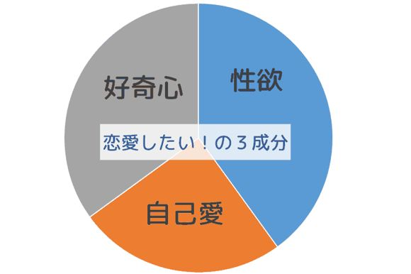
１．性欲
２．自己愛
３．好奇心
１．の性欲については、言うまでもありませんね。
若い男子であれば、コントロールに苦労するくらいの性欲をもてあましているのが、むしろ平均的な姿ではないでしょうか。ですから、「恋愛したい」に占める性欲の割合は、率直に考えれば、決して小さくないのではないかと思います。
２．の自己愛というのは、自分は女子にモテる魅力ある男だと確認したい、恋愛することで大人になったことを実感したい、彼女がいることを周囲に誇りたい、童貞は恥ずかしいから卒業したい、そういった、恋愛することで自分が満足する・周囲に誇れるといったことへの期待感のようなものを指しています。これも、割合はそれなりに大きいのではないかと思います。
そして、３．の好奇心というのは、自分とは違う別の誰かと深く関わることで、お互いに影響を与え合いたい、新しい世界を知りたい、遊び友達のレベルよりもっと親密な人間関係というのに巻き込まれてみたい、あるいはそのプロセスを経験してみたい、そういった「新しい人間関係全般への興味」といったものです。
ここでいま一度、あなたの「恋愛したい」という気持ちについて、この三つの主成分がそれぞれ何％くらいを占めているか、正直に自己分析してみてください。
１．性 欲： ％
２．自己愛： ％
３．好奇心： ％
合 計： 100 ％
できましたか？
そうしたら、１．と２．を足してみてください。何％になりましたか？
もし、その割合が50 ％を超えていたら、その「恋愛したい」をいますぐ実行に移す前に、少し考えなければならないことがあります。
先ほどの「恋愛したい」の成分分析で、１．の性欲と２．の自己愛の合計が50 ％を超えることの何が問題なのでしょうか。
改めて考えてみると分かりますが、先ほどの「恋愛したい」の三成分は、それぞれ、気持ちが向かっている先が違います。
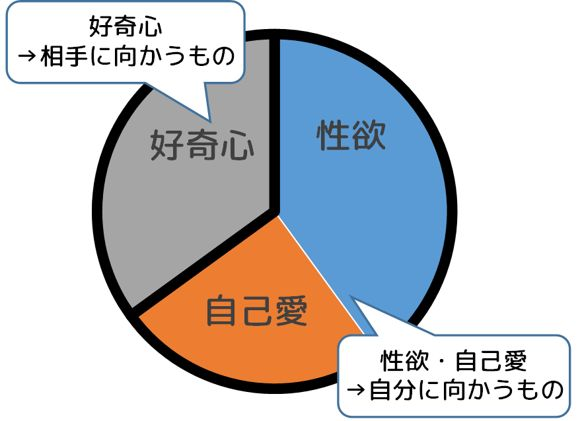
１．の性欲は、あなた自身に向かっています。
２．の自己愛は、あなた自身と、あなたを規定する「社会」に向かっています。
３．の好奇心だけが、相手の女子に向かうものです。
「恋人がいる奴がうらやましい」という気持ちとか、「恋人を作って、こんなことがしたい」という願望だけでは、恋愛はうまくいきません。
なぜなら、恋愛とは相手がいて初めて成り立つものであって、こちらの一方的な思いだけでは始まらないことだからです。
ところが、１．の性欲と２．の自己愛の構成比が50 ％を超えていると、もしも恋愛についてなにか葛藤が生じたときに、心の多数決の結果、相手のためではなく、自分のための選択をしてしまう可能性が高くなります。
改めて確認しましょう。
恋愛とは、自分とは別の人格をもった一人の存在である特定の相手と、合意のうえで、親密な関係をお互いに結び合い、そしてそれを継続することです。
まず、このことを肝に銘じてください。
恋愛とは、あなたの独り相撲ではありませんし、あなたの願望を女子をダシにして実現することでもありませんし、もちろん性欲のはけ口でもありません。
あなたが求めて、相手からも求められて、それをお互いが確認することで初めて成り立つのが恋愛関係です。ですから、あなたが一方的に気持ちをぶつけたり、「こうでなければならない」と思い込んだりしても、それは恋愛ではないのです。
さて、先ほどの「恋愛したい」の構成比の話ですが、性欲と自己愛の合計が50 ％を下回りました、という方よりも、「性欲だけで50 ％を超えてしまいました」という方のほうが、自分に正直で、だからこそ逆に「変わっていきやすい」んじゃないかな、とも思ったりします。
足して50 ％を下回りました、という方。
本当ですか？
もう一度正直に、自分の気持ちを見つめなおしてみても、同じ結果になりますか？
いずれにしても、「恋愛したい」の中身の大部分が性欲と自己愛では、恋愛をしても相手を見ない身勝手なものになってしまい、相手からも愛想を尽かされてしまう展開になる恐れが高いでしょうから、少しずつ、その構成比を変えていくことを考えましょう。
まず、「性欲」については、それがあることは自然な前提として、うまくコントロールしていくことを考えます。
詳しくはこの次の節で触れますが、素直にオナニーを活用すればいいと思います。
それによって「恋愛したい」と性欲との間に、いい感じの「距離」を作れるようにしていきましょう。
一方、「自己愛」については、今まさにやっているこういった自己分析が有効です。
そして、「なんだ、俺のなかの恋愛したいという気持ちのかなりの部分は、実は自分に自信を持ちたいという自分本位の考えだったんだな」といった気づきを持つことで、状況は大きく改善していきます。
その気づきを出発点にして、「恋愛したい」と「自己実現したい」を少しずつ切り離していき、「恋愛したい」のなかの自己愛の割合を減らしていくことができれば、素晴らしいですね。
そしてそれらに加えて、三つめの「好奇心」、つまり、自分とは別の人格をもつひとりの人間と深い関係を結んでいくことへの興味をより強く持って、それを「恋愛したい」の原動力にすることで、その構成比を増やしていくことが大切だと思います。
そうすれば、恋愛の結果だけにこだわるのではなく、二人の関係が深まっていったり、場合によってはうまくいかずに葛藤したりするプロセスそのものも楽しむことができるようになるでしょう。
ところで、この構成比の改善という試みのなかで、若い男子にとって特に問題になってくるのは、やはり「性欲のコントロール」なのではないでしょうか。
男子の性欲。
これは実に厄介なシロモノです。
特に、第二次性徴を迎えてから高校・大学くらいまでの10 代の何年かは、男子の性欲が人生の中でも最も強い時期です。
多くの10 代男子が、寝ても覚めても頭の中はそのことでいっぱい、という毎日を過ごしているだろうと思います。
にも関わらず、この年代の男子の多くにとって、その性欲をダイレクトに満たす、つまりセックスを手に入れることはとても難しいことです。
もちろん、あっさり手に入れている男子も一部いるでしょうが、そうではない大多数の男子にとって、セックスというのはどんなに渇望しても手に入らない、スーパーレアアイテムみたいなものだと思います。
しかも、それを必死に求めようとすると、女子からみて「気持ち悪い」「近寄りたくない」行動につながり、手に入れたいものはますます遠ざかってしまうという悪循環です。
でも、その性欲を否定するというのは、無意味なことだと思います。
だって、それははっきりと「ある」のですから。しかも非常に強く。
ただ、これから出会いを成功させていきたいと願う男子にとって、性欲があまりに強すぎるとそれに振り回されてしまい、それがなければ成功したかもしれない出会いにも失敗してしまうかもしれません。
ですから、性欲をコントロールすることが大切になってきます。
では、どうするか。
素直に、オナニーを活用すればいいと思います。
そのことを、恥ずかしいと思う必要もありません。
オナニーは、恋愛を、あるいは女子を、「性欲の唯一のはけ口」として見てしまうこと、そしてそのように行動してしまうことを回避するために、必要かつ有効な行動です。
あなたには性欲があります。
しかも、10 代の性欲というのは、あなたのこれから先を含むすべての人生の中で、一番強いそれなのです。
そういう強い性欲を持て余している自分を、まず、そのままの自分として受け入れ、認めましょう。
だって、誰だってそうなのですから。
大切なことは、その性欲を、周囲に向けて、コントロールが効かない状態で発散させないことです。
この「性欲のコントロール」というのは大人になってもうまくできない人がたくさんいて、そういう人はそれが原因で仕事に失敗したり、いわゆる性犯罪に手を染めてしまったり、せっかく築いた家庭を破滅に導いてしまったりします。
性欲というのは、ある意味猛獣みたいなものです。
ですから、ちゃんと自分で管理できる枠組み（猛獣のオリのようなもの）に入れて、そのなかで自分なりに管理していくことが必要です。これは将来を含む人生を通じて必要なことですね。
そのうえで、相手との明確な合意があり、倫理的にも問題がないときに限って、その性欲をその特定の相手に幸せな形で向ければいいのです。
そんなチャンスが実際にいつくるのか、半年先なのか数年後なのかもっと先になのか、それは努力と工夫と運次第としか言えません。
でも、そういうチャンスが巡ってきたときに機を逃さず果敢にアプローチするのと同じくらい大切なのが、「チャンス」ではない日常の日々のなかで、性欲という「猛獣」を手なづけ、それに振り回されずに自分らしさを発揮できる状況を維持することです。
それが、あなたの自尊心を守り、自信をつけるだけでなく、出会いを成功させていくためにも欠かせないことです。
※一部の宗教、たとえばカトリックなどではオナニーを悪行とみなしていますが、ここではそういったところには立ち入りません。
「賢者タイム」ということばがありますね。
オナニーを終えた直後は性欲から解放されて、冷静にものごとを考えることができるという事実を皮肉っぽく呼んだものですが、これはある意味真理です。
実際、女子との出会いを成功させるために必要なことは、恋愛とか性的なことを意識しない、つまり、必死に「モテよう」としたりしない状況のなかで女子との接点をたくさん作って、そこからちょっとしたことを話したりする機会を数多く作っていくことです。
まだ親しくもないのに、性欲をギラギラさせているように見える「下心男子」には、女子は寄り付きません。だって、そんな男子は女子にとって怖いし、気持ち悪いですから。
だから、出会いを成功させるためには、賢者タイムならぬ「賢者モード」でふだん女子と接することがとても大切なのですが、そのためにはあなたの中に飼っている猛獣である性欲を、ちゃんと手なづけて勝手に外に出ていかないようにしておくことが必要になるわけです。
そのための手段が、オナニーだということになります。
それによって、自分自身の性欲を自分で管理できているという自己認識を持つことができるのなら、それはあなたにとって必要な行為です。
あえて言うなら、あまり奇妙な刺激や強すぎる刺激、特定のパターンの刺激がないとダメといったクセをつけてしまうと、いざ女子とのチャンスが出てきたときにそのクセのせいでうまくいかなかったりもしますから、そういった特定のクセがつかないように意識するくらいのことは、「将来のチャンス」を意識するのであれば、考えたほうがいいかもしれません。
また、いくらオナニーを恥ずかしいと思う必要がないといっても、それはあなたの性、つまり最も深いプライバシーに関する事項です。
そういった極めてプライベートなことは、相手が望んでいないとき、あるいは話す必要もないときに周囲に話すことではない、ということも、あわせて理解しておきましょう。これは、あとの「恋愛のルール」でも出てくる話です。
いきなり、めんどくさそうな話になってきましたね。
恋愛したい、という気持ちを見つめなおす？
どうしてこんなことから始めるのでしょうか？
それは、こういった「当たり前だと思っていたことを見つめなおして、違う視点や考え方を手に入れる」ということが、このあと何度も出てくる「あなたが、恋愛とか女子とかに対して持っている『思い込み』を捨てて、もっと自由に、柔軟になる」ということの、第一歩になるからです。
となると、次に返ってくるのは、
そんなことをして、何の役に立つの？ 俺は恋愛がしたいだけなのに。
といった反論でしょう。
それに対しては、割とはっきりした答えがあります。
そのほうが、モテるから。
意外に思えるかもしれませんが、こういうことを考えることは、究極的には、とても強力な、あなたの「内面の魅力」につながっていくのです。
ここで、「内面の魅力」ということについて、多くの方が驚く話をしようかと思います。
「内面の魅力」というのは、しばしば、「外見の魅力」と対照的なものとしてイメージされます。
内面の魅力ということばでイメージされるものは、例えば女子に対する優しさだったり配慮だったり、あるいは頭のよさ・知性だったり、会話の面白さだったりするかもしれませんが、もう一つ、たいていの男子が、自分自身の内面の魅力としてイメージしていると思われるものがあります。
それは、自分の素のキャラクター、いいところも悪いところも含めたユニークな人間性、ちょっと変わっていたり後ろ向きだったりするところもあるけれど、いろいろなことを考えていて夢なんかもちょっと持っていて優しいところもある、そういう「ありのままの自分」からにじみ出る味わい、そういったものです。
そういった、あなたと深く付き合えば伝わるあなたの人間性全体のことを、あなたの「内面の魅力」のいちばん大きなものとしてイメージしている方は多いのではないでしょうか。
そして、こんな風に嘆いたりするわけですね。
外見のいい奴ばかりがモテて、女子は誰も俺の内面の魅力に気づいてくれない。
どこかに俺のありのままの内面の魅力を理解して、共感して、そしてそれを愛してくれる、素敵な女子はいないものか......
あれ？ ちょっと待ってください。
これ、おかしくないですか？
この先を読む前に、なにがおかしいか、自分で少し考えてみてください。
......気がついたでしょうか。
では、正解です。
ここで、男子の側が内面の魅力として想定している「ありのままの素の自分」は、「相手の女子」によって理解され、共感され、そして愛される、という設定になっていること、これがポイントです。
つまりそれは、いまここに「ありのままの自分」というのがあって、「女子の側に」それを理解して魅力だと思ってほしい、ということを求めているわけです。
だとすれば、これは実は、
あなたが女子に対して求めている、「女子の側の」内面の魅力に他なりません。
これは、「あなたの」内面の魅力ではないのです。
この話ですが、一見、
俺の内面の魅力が、相手の女子に伝わる（そして愛される）
という風に見えるのですが、実際にはまったく逆で、
俺のありのままの姿を、相手の女子に受け入れてもらえる（そして愛される）
という願望を示しているに過ぎないのですね。
これが、「自分のありのままの姿が、自分の『内面の魅力』である」という思い込みの、正体です。
ですから、こんなものは「あなた」の魅力でもなんでもなくて、むしろあなたのありのままが通用して愛されるということがあるとすれば、それは「相手の女子」にそういう受容能力、つまり内面の魅力があるからだということになるわけです。
「ありのままの自分が愛される」ということが、実はあなたの内面の魅力が発揮されている状態ではなく、相手の女子の内面の魅力が発揮されている状態である、という気づき、発想の転換は、とても重要です。
なぜなら、そこから、あなたが努力して手に入れるべき真の「内面の魅力」とは何かということが、非常にクリアに見えてくるからです。
恋愛において、あなたのモテ度を何倍にもパワーアップする「内面の魅力」、それは、
相手の女子の「ありのままの姿」を理解し、共感し、それを愛する能力です。
あるいは、その境地に到達していなくても、それを目指そうと必死に努力している、その姿です。
これは、さっきの話を男女逆にしただけですから、なぜこの能力があなたを魅力的にするかは、実感として分かりますよね。
男子だけでなく、女子もまた、「私のありのままの姿を理解し、共感し、愛してくれる男子と付き合いたい」と思っています。
むしろ、女子は「女とはこうあるべき」といった社会の規範や期待により強く縛られていて、「ふだん振舞っている姿」と「ありのままの姿」との間に大きなギャップがあることが多いですから、男子以上に強く「ありのままの私で愛されたい」と願っているくらいかもしれません。
ですから、もしあなたが、目の前にいる女子の「ふだん振舞っている姿」以上に「ありのままの姿」のほうにより強い興味をもって、そちらを理解しようと努力し、その姿に共感し、愛することができれば、それは間違いなく、他のどんなことよりも強力な、内面の魅力になるのです。
でも、女子とのかけひきは苦手だし、よく分からない女心を察するみたいな難しいことは、とても自分にはできないんじゃないだろうか？
そんな風に思う方もいらっしゃるかもしれません。
でもこれはまったく違います。
男女をことさらに別の考え方をする生き物のようにとらえることをやめて、「女心はこれこれこういうものである」みたいな思い込みを全部捨ててしまうこと。
これこそが、女子のありのままの姿を理解するための第一歩になるのです。
男子向けの恋愛マニュアル本などを見ると、ほとんどのページは「女心の攻略法」に費やされているようです。
まず、いかに男女でものごとの考え方が違うかということを強調し、その謎のような存在としての「女心」、つまり女子の内面、態度、行動パターンといったものを類型化して、その類型化した「女心」を攻略するための方法が熱心に語られています。
もっともらしく脳科学の話が出てきたりするものも多いですね。
でも、こんなマニュアルを読んで「女心」をわかった気になればなるほど、実はあなたが出会う女子の本当の気持ちを理解することから遠ざかっていくのかもしれません。
なぜなら、それは一人ひとり違い、それぞれ別の人格を持っている、あなたが出会う女子たちをいっしょくたに類型化してしまって、違いをうやむやにしてしまうものだからです。
これもまた、男女逆にして考えてみましょう。
あなたは、付き合っている相手の女子が、よく分からない恋愛マニュアルを読んで、その中の「男子攻略パターン」にしたがったアプローチや会話をしてきたら、嬉 しいですか？
「そんなことやってないで、目の前の俺を見ろよ」と思うんじゃないですか？
それは当然、女子だって同じなのです。
では、「女心」がよくわからないと感じたときには、どうすればいいのでしょうか？
実は、答えはとても簡単です。
どうすればいいのか、目の前にいる、あなたがアプローチしている女子に直接聞けばいいんです。
もちろん、これは単純に「いま君との出会いがうまくいってないから、どうすればいいか君の方から教えてくれない？」と聞きましょう、ということではないですよ。
そんなことをしたらコントになってしまいます。それはそれで面白いかもしれませんが。
まず、目の前の女子が、「女心」という、あなたには分からない謎の思考回路を持っている、という思い込みを捨てましょう。
そのうえで、普段から、相手の女子がどんなことを感じているのか、どんなことが好きで、どんなことに悩んでいるのか、そういうことに興味を持って、たくさん話をするようにするのです。
「話せば分かる」、ということを、信じるのです。
そうすると、相手の人となりが、どんどん見えてきます。どんなことを考えているかも、ずいぶん分かるようになります。
そうやって、話が通じる相手、興味をもって聞いてくれる相手だと認識してもらえれば、相手の女子も、積極的にいろいろなことを話してくれるようになるはずです。
もちろんこれは、理屈っぽくなりましょう、質問ばかりするウザいキャラになりましょう、といったことを言っているのではありません。そうならないためには、「質問する」のではなく「話を聞く」ことを意識することが重要でしょう。
そうではなく、「女だから」特別だ、「女だから」理解できない、という思い込みをやめて、分からないことは聞いて、知らないことは教えあって、そうやって何でも話せる関係を作っていくことで、お互いに思いが通じないという問題を少しでも解決していきましょう、ということを言っているのです。
分からないことがあれば、「女心」のマニュアルなんか開いたりせずに、目の前の女子に直接聞きましょう、というのは、要はそういうことです。
でも、そうは言ったって恋愛では明らかに男と女で行動パターンが違うじゃないか、という反論は、当然あると思います。
その具体的な例のひとつが、
恋愛では、だいたい女が「選ぶ側」で、男は「選ばれる側」になっている
ということでしょう。
男子は女子に選ばれるために一生懸命頑張らなければならない、これだけ見ても男と女って全然違うじゃないか、という反論は、あって当然です。
でもこれも、女心とか男心といった概念抜きで説明することができるのです。
違うのは「男心・女心」ではなく「立場」です。
恋愛においては、男女の「立場」がまったく異なるために、どうしても男性が選ばれる側、女性が選ぶ側にならざるを得ない側面があるのです。
恋愛というのが、究極的に「子孫を残す」という動物的な目的を持っていることは否定できない事実で、その過程では、セックス、妊娠、出産、子育てというイベントが必然的に発生します。
そしてこの部分において、男女では生殖的機能が異なるために、そこに生まれる利害も異なってきます。
男性にとって、子孫を残すという「目的」だけを最大化するためには、「セックス」だけをたくさんの女性と繰り返して、「妊娠」以後のイベントからは逃げてしまう、というのが最も効率的なやり方になります。（もちろん、それが正しいという話ではありません）
一方、女性の場合、どうしても「妊娠、出産、（授乳という意味での）子育て」という一連の流れから逃れることはできませんし、どんなにセックスを繰り返しても、生むことができる子孫は、一回の（非常に時間とコストがかかり、母体側の生命リスクさえある）出産につき一人の男性とのものだけです。
ですので、同じ「子孫を残す」という目的であったとしても、「多くのセックスを繰り返す」というのは女性にとっては合理的ではなく、「優秀な遺伝子をもっていて」、かつ「妊娠、出産、子育てというプロセスでも逃げずに協力してくれる」という条件を満たした男性を選別し、その相手とだけセックスすることが、最適解になるわけです。
つまり、同じ「恋愛したい」という目的であったとしても、置かれた「立場」の違いのために、それが男性にとっては「できるだけ多くの女性に選ばれたい」という行動傾向に、女性にとっては「できるだけいい男性を選びたい」という行動傾向に、必然的になっていくのです。
それが「女心」っていうものなんじゃないの？と思われるかもしれません。
でも、違うのです。
なぜなら、あなたが男性であったとしても、この女性の価値観を思考実験ですぐにシミュレートできるからです。
あなたがいま、よくあるどこかの小説みたいに、突然女性に変わってしまったと仮定しましょう。
もうあなたは男性には戻れません。そして、女性として、男性との恋愛、結婚をしなければならなくなったとします。
そして、先に書いたような「生殖的な利害の違い」をふまえて、冷静に自分がおかれた状況を考えてみましょう。
そうすると、あなたの考えも必然的に、「恋愛する間口を狭めて、いい男性を厳選してから恋人になろう」という考え方に寄っていくのではないでしょうか？
もし、男性であるあなたにもこの感覚、価値観の揺らぎがわかるのなら、それは「女心」の問題ではなく、「女性の立場」の問題だということです。
「立場」の違いをていねいに理解しようとすれば、そこには謎はなくなり、考え方や行動、価値観の違いを共有することもできるようになっていきます。
※なお、言うまでもありませんが、ここでいう「女子が選び、男子が選ばれる」というのは、一般論としての全体的な傾向であって、個々人がみんなそうだというわけではありません。このポイントは、以後の議論すべてにもあてはまります。
このように、明らかに男女の間で違った考え方、違った行動が観察されるものごとであっても、「女とはそもそも」「男とはそもそも」といった考え方をせずに、おかれた状況や立場の違いから説明できることは、とても多いと思います。
ですから、ここは思い切って、「女はそもそも」みたいな考え方、思い込みを、全面的に捨ててしまいましょう。
そして、「女心を推測する」といった、労多くて益の少ない行為も、同時にやめてしまいましょう。
「女心を推測する」のではなく、相手の立場を理解しようと努力し、「目の前の女子が何を考えているかをちゃんと聞く」ようにすればいいのです。
ここで、具体的な例をひとつあげてみます。
あなたが友達の女子の買い物に付き合って、帰り道のお店でユニセックスのセーターを一緒に見ていたとします。そのときにもしあなたが、
「女の子ってピンクとか好きなんだよね、だからこれにすれば」
といってピンクのセーターをすすめたとしましょう。
はい、イエローカードです。
いまあなたは、「女はピンクが好き」という、「女はそもそも」論法を発動させてしまいました。
これを、やめるということです。
やめかたは、簡単です。
代わりに、「君はどういう色が好きなの？」という、決めつけない雑談をすればいいのです。
もちろん、こんなピンクのセーターの会話一つ程度で、あなたとその女子との関係がすぐに壊れたり、近づいたりすることはないでしょう。
でも、こういうちょっとした思い込みって、あちこちに転がっています。そういうのが10 あったとして、相手の女子はそのうち九つは気にならないかもしれませんが、一つくらいは、「あれ？ 私のこと、そんな風に決めつけてるんだ......」と思うかもしれません。
そして、そういう何気ない会話の積み重ねが、最終的には相手をがっかりさせてしまったり、逆に心を許せると感じる展開につながったりする分岐点になっていくのです。
ところで、「女の子ってピンクが好きなんでしょ？」と「君はどんな色が好きなの？」、この二つの質問の本質的な違いって、どこにあるか分かりますか？
前者の質問は、あなたの目の前にいる、まさにその女子のことを、見ていません。
目の前の女子の代わりに、あなたの頭の中にある女子一般のイメージ、どこかのマニュアルで読んだ女心のイメージ、そういったものでものごとを決め付けて、それを相手に押し付けるだけの質問をしてしまっているのです。
つまり、会話しているようでいて、一方的にあなたが思い込みをぶつけて、相手の声を聞こうともしないでいる構図になっているわけです。
これをただ、「君はどんな色が好き？」という質問に変えるだけで、あなたは、あなたの中にある思い込みではなく、目の前にいて一緒に買い物を楽しんでいる女子と、ちゃんと会話をしていることになります。
こういう小さな積み重ねって、とても大事だと思います。
そして、こういった「女だから」という決めつけを、女子と会話したり一緒に行動したりしているあらゆる場面で、常に避けるように意識してみてください。
そうすると、自分がいかに「女の子ってこういうもの」「女心ってこんな感じだろう」といった思い込みに支配されて、ものごとを決めつけていたかにだんだん気づくようになります。
そして、そういった気づきをへて、思い込みから自由になったあなたは、自分の頭で考えて、目の前にいる女子の話をちゃんと聞くようになっていきます。
思い込みに頼らないと決めたら、分からないことは相手に聞くしかなくなりますからね。
そんな風に女子のことを考えることができて、女子のありのままの気持ちと自然と向き合えるようになっていくと、あなたは女子から見て、とても大人で、優しくて、話が通じる男子に見えるようになっていくでしょう。
それが、あなたのとても強力な「内面の魅力」という武器になり、女子との関係をただの友達から、友達以上、そして恋人にランクアップさせる力になっていくのです。
もしあなたが、こんな風に思い込みを捨ててものごとを考え直してみるのって面白いな、と思ったら、さらに前に進んでみましょう。
「女だから」以外にも、思い込み、頭から決めてかかっているような先入観というのは、たくさんあります。
それを片っ端から捨てて、思い込みで語るのではなく、目の前にある現実を見つめなおして、問いかけなおしてみるようにするのです。
言うまでもなく、最初に見直してみるのは、「男だから」という思い込みです。
「男なんだから」こうしなきゃいけない、「男だから」こんなことやるのは恥ずかしい、という風に、あなたを縛っている思い込みはないですか？ 間違いなく、たくさんあるはずです。
そういうものがあることに気づいたら、一度その思い込みを脱ぎ捨てて、「自分は本当はどうなんだろう？ どう考え、感じているんだろう？ どうしたいんだろう？」と問い直すのです。
それだけでなく、「親だから・子どもだから」「先生だから・生徒だから」「先輩だから・後輩だから」、そういう、ありとあらゆるものごとを考えるときに、ちゃんと相手を理解する前に思い込みで決め付けているところがないか、見直していきましょう。
それはとても面倒なことですが、あなたの発想を自由にして、あなたの内面をいっそう柔軟に、そして豊かにしていくでしょう。
そこには、知り合った二人の関係をもっと自由なものにし、お互いの「ありのままの姿」に近づいていくためのヒントが必ず眠っていると思います。
ところで、こんな風にいろいろな思い込みを捨てて、ちゃんと目の前の相手と向き合うということを習慣にして常に実践できるようになると、さらにとても大きな「副産物」が手に入ります。
それは、「相手の話をちゃんと聞く、『聞き上手』になれる」ということです。
聞き上手がモテる、というのはよく聞く話ですよね。
でも同時に、とても難しいことでもあります。
なぜ、聞き上手になるのが難しいのでしょうか。
それは、私たちはついつい、相手の話をちゃんと最後まで聞く前に自分の話を始めてしまいがちだからです。
そして、なぜそうしてしまうかといえば、相手の話を途中までしか聞いていないのに、思い込みで相手の言っていることを分かったつもりになって、「もう相手の言っていることの結論は出た、今度は自分が話す番だ」と思ってしまうからです。
でも、相手についてのいろいろな思い込みを捨てると、相手が考えていることは、ちゃんと相手から最後まで聞かないと分からない、ということに（当然）なります。
そうすれば自然に、相手の言っていることを最後まで聞こう、分からないことはちゃんと聞きなおして教えてもらおう、という態度が生まれ、結果としてそういう思い込みを持っていたときと比べると、相手の話を真剣に最後まで聞くことができる「聞き上手」になれる、ということなのです。
「聞き上手」になって、先入観を持たずに相手の女子の声をしっかり聞いて、相手の本当の姿を知り、理解していくことを心から楽しいと感じ、その相手の女子のありのままの姿、価値観に共感し、それを好きだと思うこと。
これができる男子は、間違いなくものすごくモテます。
逆を考えればすぐに分かります。
あなたの話を熱心に聞いて、あなたのありのままの姿に興味をもち、理解してくれて、共感してそんなあなたのことを好きだと言ってくれる女子が現れたら、まちがいなく惚 れてしまいませんか？
それと、同じなのですから。
最初の出会いのきっかけが多いか少ないかというのは、やはり外見がいいとか、スポーツをやっているとか、そういう俗にいうモテ要素（あとで出てきますが「パブリックな魅力」）に強く影響されます。
でも、一度知り合ったあと、すぐに関係が消滅してしまうか、ただの友達で終わってしまうか、それとも親密になって恋人コースに乗れるかということについては、そういう見た目系のモテ要素よりも、ここで見てきたような、ちょっと優しいとかそういった表面的なものを超えた、本当の内面の魅力（このあとでは「プライベートな魅力」と呼びます）によって決まります。
もちろん、簡単にできることではありません。
でも、それが少しでもできるよう努力すること、思い込みから自由になることを常に意識して実践すること、それだけでも、誰かと「出会った後」のあなたのモテ度を大幅にアップすることは間違いないと思います。
ここでは、恋愛には、自分で決めて、自分で守らなければならないルールがある、という話をしたいと思います。
恋愛というのは、遊び友達などの関係と違って、強い情動によって形成される関係であり、だからこそ不安定でもあります。
そして、お互いの精神や身体、さらにはお互いの人生や周囲の人間関係まで巻き込むこともある、非常に影響力の大きな関係だとも言えます。
そしてもう一つ。
恋愛、特に若い世代の恋愛については、大人の間でもさまざまな価値観や考え方があり、やっていいこと・悪いことの基準などが、人によってまったく違います。
例えば、中高生カップルのセックスはいいか悪いか、中高生にコンドームを配ることは是か非か、こういったことについて意見を聞けば、大人のなかでも賛否両論まっぷたつになるでしょう。
言い換えると、恋愛についてのルールは、誰かがはっきり決めてくれるものではなく、各自が自分のなかで決めていかなければなりません。
しかも、そのルール次第では、相手の女子の人生や人間関係に深刻な影響を与えてしまうこともあるわけですから、あなたがどんなルールで恋愛をするのかというのは、あなたにとってもとても責任の重いことです。
本書では、恋愛のルールとして、以下の五つを提案します。
Ｒ１．相手との合意がないことはやらない
Ｒ２．恋愛によって失うものを作らない
Ｒ３．泣き落としや自虐、拝み倒しをしない
Ｒ４．常に、必ず、避妊する
Ｒ５．性はタブーではなく、最高レベルのプライバシーだと考える
そして、ルールよりも一段下の「アドバイス」に相当するものとして、以下の六つをあげます。
Ａ１．テクニックにこだわらない
Ａ２．アプローチとは「追認」だと考える
Ａ３．思い込みを捨て、最後まで誠実に
Ａ４．恋人になるまでは入れ込まない
Ａ５．ちょっとした友達、を大切にする
Ａ６．日常モードと出会いモードを切り替える
先ほど述べたとおり、これらのルールやアドバイスももちろん絶対のものではなく、一つの参考例にすぎません。
例えば、「相手の合意がないことはやらない」というルールに対しては、「恋愛では男子が強引なくらいの主導権を発揮すべきだ」とか、「表面的なイエスかノーかではなく、相手の本心を察して行動すべきだ」といった別の意見が、そしてセックスについてはそもそも社会人になるまではすべきでないといった反論が、あるいは恋人になるまでは特定の相手に入れ込まず、ちょっとした友達を幅広く作るべきといったアドバイスには、一人の相手に本気で入れ込むべきだといった主張が、それぞれあると思います。
ここでは、それらの主張のうち、どれが正しくてどれが間違っているといった議論はしません。
ただ、本書で提示しているこれらのルール・アドバイスの背後には、以下のような私が考える恋愛の「原則」があって、その原則から導かれた整合性のあるルール体系となっていることを知っていただければと思います。
恋愛の「ルール」は、ルール同士で内部矛盾しないように決めていくことも大切なことなのです。
Ｐ１．相手の心を深読みしてそれを根拠に行動することを「しない」。仮に深読みしないことによって失うものがあったとしても、それはやむを得ない損失として受け入れる。
Ｐ２．相手の女子を、独立した人格をもつ人間として、最大限尊重する。
Ｐ３．出会いを確率事象だととらえ、出会いに成功する確率が最大化するように行動する。
Ｐ４．知り合う前に好きな相手を決めてしまうのでなく、まず実際に知り合ってみることを優先する。
この章のルールやアドバイスを読み、理解して、可能なら家族とも話し合ったりして、そして最終的には自分自身の恋愛のルールを作り、それを守っていってください。
相手と合意できたことだけをやり、相手がノーと言ったときにはそのノーをちゃんと受け止めて、素直に引き下がること。
これは、とても大切なことです。
出会い・恋愛のプロセスのなかで、何か新しいこと、より親密な関係に入っていくことの誘いは、男子から女子に対して行われることがほとんどです。
ですから、男子の側から何かを要求して、女子からノーと言われるというシーンは、出会いのプロセスの中で、極めてしばしば発生すると思います。
それは、デートの誘いであったり告白であったり、あるいはキスやセックスを求めることであったりといろいろでしょう。
そういうとき、相手がはっきりノーと拒絶したら、素直にそれを受け入れて引き下がること。これを守ってください。
もちろん、そのノーが、恥ずかしさであったり、決断を避けたい気持ちからなされたもので、本心では迷っていたりイエスだったりという可能性もゼロではなく、そういった女子の機微を嗅ぎ分けて強引に押し切ってしまって、結局うまくいってしまうような男子も、いるにはいるでしょう。
でも、そういった機微が分からず、あるいは誤解して、本心から拒絶しているのに無理やり要求を通すようなことをしてしまうと、二人の関係は大きく傷つきますし、状況次第では犯罪に近いことになってしまうこともありえます。
ですから、ノーと言われたらシンプルに引き下がればいいのです。
もしそのとき、仮に相手の女子の本心がイエスだったとしても、あなたは何も失っていません。逆に、相手はあなたの誠実さを見直すはずです。
そして、ノーと言われたあとも関係は（むしろ親密になって）続くでしょうし、次の機会に改めてあなたが同じことを要求すれば、そのときは相手も「この人はノーと言ったら素直に引き下がる人なんだ」ということを学習して、本心であるイエスを、今度は素直にあなたに伝えてくれるはずなのです。
もちろんこのルールは、タテマエでホンネを軽く隠すような、女子との最低限のかけひきすらやってはいけない、と言っているのではありません。実際、基本的なかけひきのやり方については本書の後半でもとりあげています。
大切なことは、アプローチの途中でかけひきを使うことはあっても、「最後の判断」がイエスかノーかは必ず相手に聞くということ、そして、その答えがノーだったら誠実に引き下がることです。
これは陳腐な言い方をすると、「学生であれば、恋愛で学業をおろそかにするのはやめましょう」ということです。社会人なら仕事ですね。
でも、別に道徳的なことを言っているわけではありません。
恋愛が盛り上がって真剣にのめり込んでしまって、すぐにでもこの子と結婚したい、そして幸せな家庭を、くらいの勢いになってしまうこともあるかもしれません。でも、
その幸せな毎日を実現し、維持していくためのお金を、どうやって稼ぐんですか？
という話なのです。
あるいは、そこまでのめり込んだ恋愛でなくても、女子との交際が楽しくて勉学がおろそかになってしまうと、卒業後の進路に悪い影響が出るでしょう。すると、
進路がランクダウンすると、そこでの出会いとかあなたのモテ度もランクダウンしますよ。
ということになります。
ですから、将来にむけて女子との幸せな関係を目指していきたいなら、いま学業をおろそかにするのはものすごく損ですよ、という、ごく現実的な話なのです。
中学、高校時代の勉強は、その先の人生がどんなものになるか、どんな場所で活躍できる大人になれるか、そして「どれだけ稼ぐことができるようになるか」ということについて、決定的な影響力を持ちます。
別の言い方をすると、中高時代の勉強に時間とか労力を使うことは、人生の中でも最も効率の高い、自分への投資になるのです。
愛する女子との幸せな未来も、先立つものがなければ実現できません。
長い目で恋愛を成就 させるためにも、恋愛していることによって恋愛していなかった時よりも自分の将来がレベルダウンしてしまわないように、本来やるべきこと（＝勉強、仕事）をおろそかにしてはならないのです。
ただし、勉強は、集中して効率よくやりましょう。
何もせずぼーっとしていたり、ただのひまつぶしをしたりしている時間を減らして、あなたの大切な時間と労力を、効率的に勉強に投資するのです。
そして、効率的な時間の使い方によって生まれた空き時間を、出会いや恋愛のためのもうひとつの有意義な時間として使うようにすればいいわけです。
恋愛関係というのは、「頼みこんでなってもらう」ものではなく、「堂々と選び、選ばれる」ものです。
贈り物であれば「つまらないものですが」と言って渡すかもしれませんが、出会いでそれをやってはいけません。
新商品をアピールするテレビコマーシャルは、いかにその商品が魅力的で、買うと生活が豊かになるかを一生懸命伝えます。それでやっとお客さんに買ってもらえるわけです。
恋愛での女子へのアプローチというのは、このテレビコマーシャルと同じです。自分がいかに魅力があって、会話をすると楽しくて、一緒にいれば楽しいか、ということを分かってもらって、それによって積極的にイエスと答えてもらうものなのです。
ですから、「自分には何も魅力はないけど、あなたを思う気持ちだけは誰にも負けません」みたいな、アピールなんだか自虐なんだか分からないようなアプローチをしてはいけません。
ましてや、「私にはあまりにも出会いがなくて寂しいから、可哀想だと思って拾ってください」とか「あなたと付き合えなければ絶望します」のような、相手があなたを選ぶ理由がなく、むしろ全力で逃げるしかないようなアプローチは、絶対にやってはいけないのです。
出会いの場に出ていくとき、あなたはきっと不安で、自信がないと思います。
でも、それは自分のなかでちゃんと消化して乗り越えるべきものであって、女子を相手にそういう「情けないあなた」をさらけだして、同情を買うようなことをしてはいけないのです。
恋愛の過程のなかで、セックスをする関係が生まれることもあるでしょう。
そのときの、たった一つの究極のルールはこれです。
愛する女性を望まない妊娠に追い込まないこと。
もっとシンプルに言えば、いついかなる状況であっても、常に避妊をすること。
相手の女性がなんと言っても、例外なく必ずコンドームを使いましょう。コンドームを持たない状況でそういういい雰囲気になったとしても、入手できないならセックスは避けます。
仮に、女性の側に避妊の意識が弱い場合には、あなたの側がリーダーシップをとって、確実な避妊がいかに二人の関係のために大切かということをしっかり説明しましょう。
これはあまりに当たり前のルールだと思いますから、あえて理由を書く必要もないと思いますが、あえて一つのポイントだけ指摘しておきます。
セックスというのは究極のプライベートな事項であり、二人の間の密かで大切な営みです。
でも、女性が妊娠してしまった瞬間に、二人の関係はプライベートな関係では済まされなくなり、さまざまな責任とともに、社会とか法律のなかで大掛かりに解決しなければならない問題として表面化してしまいます。
妊娠した瞬間に、女性は「母体」として、そして胎児はひとりの「生命」として法的・医療的に扱われるようになり、未成年の男女だけで対処できる問題ではなくなります。そして学校や双方の家族、知人をも巻きこんだ責任問題となり、当の二人も、精神的にも、肉体的にも深く傷つくことになるでしょう。
そして、相当に高い確率で、二人の関係も壊れてしまうことになります。
それらの問題は、避妊さえしていればほぼ確実に避けられ、そうすれば二人の関係も傷つくことはありません。そして、そのための方法ははっきりわかっていて、誰にでも実行できることです。
だから、そこに必ず守るべきルールが生まれ、そのルールを守る責任が生じます。
責任をもって、必ず避妊しましょう。
先に男子の性欲や避妊の話をしましたが、恋愛のなかで、性を語るべきでないタブーとして腫 れもの扱いするのは、間違っていると思います。
男女いずれにも性欲はありますし、恋愛をすれば、いずれは二人の間で性的関係が意識されていくのは自然なことでしょう。
ですから、本書のなかでも性については（それほど多くの紙面はさきませんが）、タブー扱いすることなくオープンに語りますし、性について率直に家族や恋人と語り、一緒に考えることも推奨していきたいと思います。
でも、同時に考えなければならないことがあります。
それは、性というのは、誰にとっても、最も尊重されるべき、最高レベルのプライバシーだ、ということです。
最高レベルのプライバシーですから、絶対あってはならないことは、
・相手が望まない形で、相手の性についての話が外に出てしまうこと。
・相手が望んでいないときに、性のことを話題にして語ろうとすること。
この二つです。
いま性について語り合いたい、そうお互いに思っている二人の間だけで（それは、恋人であったり親友であったり家族であったり、そういう信頼できる相手とだけです）、性の話はするべきであって、不特定多数の前で不用意に話すことではありません。
性の話はオープンに語り合っていいと思いますが、その「語り合う相手」というのは、いまここで性の話をしてもいいという合意のある、ごく限られた特定の相手と場面だけにする、これが性に関する話題を語り合うことについてのルールです。
この本では、モテるための具体的なテクニックの話は、一部のかけひきのコツのようなものを除いて、基本的に出てきません。
それは、既に書いたとおり、「そんなものに頼らずに目の前の女子と語り合いましょう」ということでもあるのですが、もう一つの理由として、「そういうテクニックの大部分がでたらめだから」ということがあります。
出会い、恋愛というのは結局のところ、確率事象です。
同じやり方をやってもうまくいくこともあるし、いかないこともあります。そしてその原因はとても複雑なので、出会いというのは一定の確率でうまくいったりいかなかったりするものなんだ、と割り切ってしまったほうが真実に近いのです。
それはたとえて言えば、サイコロを振るようなものです。
サイコロを振った結果というのは、すべて偶然です。「６が出たら勝ち」というゲームをやるなら、勝つ確率は常に六分の一です。
ところが、実際にこういうゲームをやって友達と競ったりしてみると、不思議なことに、だんだん、何か「勝つテクニック」があるような気がしてくるんですね。
気合いを込めてサイコロを投げると６が出やすいとか、左に回転させながら高く放り投げるといいとか、そういう謎のテクニックが必ず生まれてきます。
そうやって、実際には効果がないのに効果があるような気がして生じてくる特定の行動パターンのことを、「迷信行動」といいます。
サイコロ程度だと話が単純なので笑い話で済みますが、これが宝くじやギャンブルの必勝法とか、あるいはスポーツの願掛けみたいなことになってくると、実際にたくさんの人が、この迷信行動を真剣に信じて実行していることが分かります。
恋愛の世界も、実はこれにとてもよく似ているのです。
世にいう恋愛のテクニックのほとんどの部分は迷信行動だと、私は考えています。
たとえば、出会いが10 回連続でうまくいかなくて、11 回目の出会いがうまくいったとき、たまたまあなたが相手の女子を苗字ではなく名前で呼んでいたとしましょうか。
そうしたら、もしかするとあなたは「下の名前で呼んだから成功したんだ」、だから「女子は下の名前で呼ばれたほうが嬉 しい、そんな女心があるんだ」と判断して、それ以降の出会いでは毎回相手を苗字ではなく名前で呼ぼうとするかもしれません。
でも本当は、苗字とか名前なんて実は全然関係なく、11 回目に声をかけた女子は、もともとあなたのことを何かのきっかけで知っていて、あなたと話してみたいと思っていただけかもしれないのです。というより、その可能性のほうが恐らくずっと高いでしょう。
もしそうだとしたら、あなたの「相手を苗字ではなく名前で呼ぶ」という行動は迷信行動であり、「女子は名前で呼ばれたほうが嬉 しい」という考えは間違った思い込みだということになります。
ですから、そういった「テクニック」を鵜呑 みにして実行してもたぶん効果はないですし、周囲から見ると、「キャラにないことをやってる変な人」と見られるのがオチなのではないでしょうか。
ただし、「テクニック」にはこだわる必要はありませんが、あいさつやことば遣いなどのマナー、エチケットには、常識として「こだわる」べきです。
挨拶ができる、感謝のことばが言える、他人の悪口を言わない、嘘 をつかない、時間を守る、そういった社会人としての常識を守らない男子のことを、女子は「恋愛の対象」としては見ないでしょうから。
そういう意味では、読むのであれば、恋愛のテクニック本ではなく、社会人のマナー本を選んだ方が有意義なくらいかもしれません。
女子へのアプローチがどうしても成功しない、告白は全部断られるし、デートに誘っても一度もＯＫをもらったことがない、という方は、もしかすると一つ大きな誤解をしているかもしれません。
たとえば、映画を口実にして誰かをデートに誘おう、と思ったとき。
あなたは、「（あなたが提案した）映画が面白そうだから」という理由で、相手の女子がイエスと言ってくれるかもしれない、と期待していませんか？
あるいは、情熱の込もったメッセージで誰かに告白しようと思ったとき。
あなたは、「（あなたが伝えた）メッセージが感動的で想いが伝わってきたから」という理由で、相手の女子が告白を受け入れてくれるかもしれない、と期待していませんか？
もしそんな風に、あなたが女子にアプローチするとき、相手の女子は「そのアプローチの内容が魅力的かどうか」という基準でイエスと答えるかノーと答えるかを決断している、とイメージしているなら、まずその認識を改めましょう。
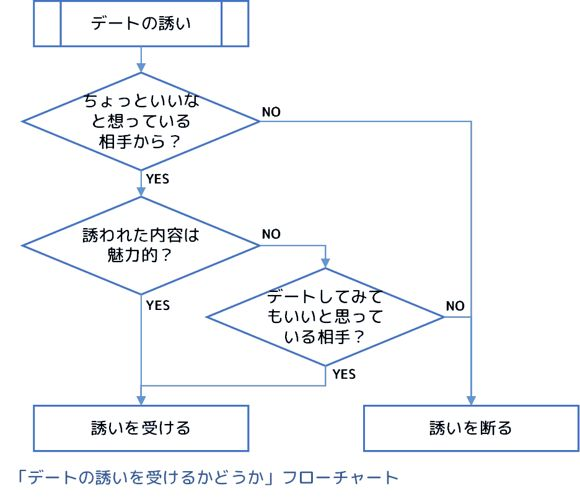
たとえば、男子から映画に誘われたとき。
女子はまず、誘っている男子のことを、「誘われた時点でちょっといいなと思っているか、いないか」で判断を分岐させます。
「ちょっといいな」と思っていなければ、映画の内容に関わらず、答えはノーです。
「ちょっといいな」と思っていれば、映画の内容に興味があればイエス、興味がなければあとはその男子とデートしたいかどうかでイエスかノーかを決めます。
告白も、これと同じなのですね。
告白された時点で相手の男子に関心がなければ、女子はその告白のメッセージの内容に関わらず、それを受け入れることはほぼありません。
冷静に考えれば当たり前のことですが、女子は、「アプローチの内容がどうか」より先に、「アプローチしてきたのが誰か」で最初の判断をしています。
ですから、もしあなたが誰かを映画に誘いたいなら、あらかじめ、映画に誘ってＯＫが出る程度にその女子と親しくなってから、誘えばいいのです。というより、そのくらい親しくなってから誘わないと、ＯＫは出ないのです。
もちろん、告白も同じです。
もちろんこれには、「親しくなりたいから映画に誘っているんだ」とか「交際を始めたいから告白しているんだ」という、にわとりと卵的な反論はあるでしょう。
でも、そうではないのです。
例えば映画に誘うとき、必ずしもあなたがその女子と「既に交際している」必要はありません。
場合によっては、ちょっと事務的な会話をしたことがある、程度でもいいくらいです。
でも、少なくとも、あなたの何らかの「魅力」が先に相手の女子に伝わっていて、相手の女子が（勝手に、でいいので）あなたのことを内心、「ちょっといいな」「ちょっと興味あるな」と思っている必要だけは、絶対にあるということなのです。
言い換えると、「映画に誘う」というのは、その誘いで初めて親しい関係を作る、というのではなく、すでに相手が「映画に誘ったらＯＫしてくれる」程度には親しみを感じてくれていると判断した時点で行い、ＯＫをもらうことで自分の判断が正しかったことを「追認」することだ、と言えます。そして断られたときには逆に、自分の判断が間違っていたことが確認できるわけです。
そんな風に、男子から女子に対するアプローチというのは、そのアプローチそのもので親しくなろうとするのではなく、「そのアプローチを受け入れてもらえる程度に親しくなったと判断したから、誘いをかける」といったものでなければなかなか成功しないのです。
思い込みを捨てる、ということについては、すでに詳しく説明しました。
「女だから......」といった雑な思い込みを捨て、「女心」のような謎の概念を持たず、あくまでも目の前にいる女子を一人の人間として尊重して、何を考えているのか、何をしたいのかを知ろうとすること。
そのために、丁寧な会話を重ねること。
そして、そうやって少しずつ分かるようになっていく相手の本当の気持ち、ありのままの姿に関心を持ち、理解して、共感して、あなたのイメージのなかにあった彼女ではなく、本当にそこにいる彼女のことを好きになることです。
そしてもう一つ。
恋愛において、どんなことがあっても、相手に対して誠実であることです。
相手を騙 そうとしたり、悪意をもって危害を加えようとしたり、自分の利益のために相手を犠牲にしようとしたりしないことです。
恋愛する相手に誠実であることは、もちろん相手からの信頼感を勝ち取るための最も重要なものであることは間違いありませんが、それ以外に、周囲の人間関係に対してもプラスの効果があります。
まず、誠実であることによって、あなたの人間関係は相手の女子の周辺にまで広がっていきます。
あなたのことを、誠実で信頼できる男子だと認識した女子は、あなたを友達や家族に紹介してくれるようになり、そちらともつながりができてきます。
出会いというのは一対一の関係のようでいて、実はネットワークなので、こういった関係の広がりというのはとても大切なのです。
そしてもう一つ、これは恋愛関係の必然ですが、恋愛というのはずっと続く確率よりも、どこかで終わってしまう確率のほうが残念ながらずっと高いです。
不誠実な接し方を続けた結果の別れの場合、別れの時点でそれまでの関係は全部ご破算になるでしょう。それは、先に触れたような、別れた相手の周囲の人間関係まで含めてです。
でも、誠実さを貫いた形で別れることができれば、「恋愛」関係は終わってしまったとしても、その部分を除いた人間関係のネットワークは、その大部分が残ります。
そして、（打算的かもしれませんが）別れた彼女のネットワークにいる人のなかから、また新たな出会いが生まれたりすることも、実際のところ、とても多いのです。
これは、誰か特定の相手と恋人になるまでは、一人の女子だけを一途に想ったり追いかけたりせず、できるだけ多くの女子との人間関係を手広く作り、それを維持していくようにしましょう、というアドバイスです。
あなたは、たくさんの女子と同時に友達関係をもつことは、不誠実なことだと思いますか？
「そう思う」と考える方に質問です。
あなたはなぜそう思うのでしょうか？
相手が傷つくから？ よく読んでください、「恋人関係」ではなく「友達関係」です。
もちろん、あなたが交際している誰か特定の女子が、「わたし一人と真剣に付き合ってほしい」と表明しているにも関わらず、あなたがたくさんの女子と遊んでいるのであれば、それは確かに相手を傷つけることになるでしょう。
でも、ここで言っているのは、まだどの女子からも「わたし一人と......」と言われたりしていないような段階で、複数の女子と友達関係を維持することについてです。
「自分はたった一人の女子のことが好きで、特別な感情を持っているから、それ以外の女子とは友達関係であっても作りたくない」、そんな意見を持っている方もいるかもしれません。
でも、こういう一方的な入れ込みって、あなたがモテない男子であればあるほど、避けたほうがいいやり方なのです。
モテない男子には、友達になってくれるような女子も、なかなか現れません。
端的に言って、モテない＝出会いの確率が低い＝友達になれそうな女子の出現頻度が低い、ということですから、ゲームとかでいうレアアイテムみたいな存在です。
ですから、友達になれそうな女子が現れたときに、「いまほかに好きな子がいるから（片思いだけど）」という理由でその関係を放置していると、追いかけている女子と結局縁がなかったあとで周りを見渡しても、次につながる出会いが全然ない、ということになります。
次にいつ現れるか分からないレアアイテム女子を、追いかける女子がいなくなってから初めて探し始めるようでは、あっという間に時間が過ぎてしまいます。
もしこれがモテる男子であれば、友達になれる女子はレアアイテムでもなんでもなくて、探せばすぐ見つかる程度のありふれた存在になりますから、逆に惚 れた女子にその都度入れ込んでいても、実はあまり困らないのです。
でも、逆にそういうモテる男子は、あまり特定の女子に入れ込まずに手広く友達を作る傾向があるので、皮肉なものですね。
それともう一つ。
まだ大して親しい関係になっていないにも関わらず、一生懸命入れ込んでくる男子というのは、女子からみるとちょっと怖いですし、ヘタするとストーカーっぽくなってしまうし、とにかくあまり魅力的に見えないことが多いのです。
そもそもその入れ込みって、相手の女子の想いとは無関係な、あなた自身の独りよがりでもあるわけですから。
逆に、特定の女子だけでなく他の女子ともうまく人間関係を作れている姿を見せたほうが、あなた自身も魅力的に見えますし、もしもその女子が少しでもあなたにその気があるのなら、うかうかしていると他の女子に取られてしまうかもしれないと思って、むしろ積極的にアプローチしてきてくれてチャンスが広がったりさえするでしょう。
モテない男子であればあるほど、レアアイテムである友達になれそうな女子を大切にして、そういう女子が現れたらまめにアプローチして、友達関係（少なくとも、挨拶する程度の関係）を作るようにしたほうが、出会いのチャンスは確実に広がります。
そして、そういった友達の中から、特定の誰かと友達以上の深い関係が生まれてきたら、その段階でそれ以外の友達にアプローチするのをやめて、会ったら挨拶するくらいの「ただの友達」という距離感をとる（でも完全には切らない）ようにすればいいのです。
みんな友達、というあいだは手広く、恋人ができたらその女子一筋に。でも、恋人ができたときもそれ以外の女子とも最低限のつながりは残しておくこと。
こういうやり方は不誠実でもなんでもなく、あなたの出会いのチャンスを最大化しつつ、かつ女子からの見え方もいい立ち回り方です。
こんなことを書いていると、さっそく反論がきそうです。
「そもそも自分には女子の友達なんて一人もいないし、そう簡単にできるものでもないから、友達と手広くなんていう話は自分には縁がないよ」と。
でも、本当でしょうか？
あなたはこれまで、女子にアプローチするときに、好きだと思った女子に、いきなり恋愛関係前提で告白する、みたいなパターンしかやってこなかった、ということはないでしょうか。
それでは、出会いは生まれにくいのです。
最終的に恋愛につながっていく出会いも、最初はちょっと声をかけあうだけのただの知り合いみたいなところから始まることもありますし、むしろそちらのほうが自然でよくあることでしょう。
それに、あなたのことをまだよく知らない女子にとって、「付き合ってください！」と迫ってくるあなたは怖いだけの存在ですが、何か自然なきっかけで軽く声をかけてくるあなたならそんなことはなく、結果として出会いのきっかけが生まれるチャンスもずっと大きくなります。
出会いには、段階があります。
最初からいきなり恋愛関係を狙うのではなく、相手にとっても抵抗のない、声をかけあう程度の知り合いから始めれば、あなたの想像以上に、出会いのハードルは低くなるはずです。
また、女子にとっての男子の評価というのは、あなた自身がどんな人物なのかということと同等かそれ以上に、「ほかの女子からどう言われているか」ということにも影響されます。
「彼って話が面白いよね」とか「彼ってかっこいいよね」なら最高ですが、「彼って、まあ、普通だよね」という評価くらいであっても、「彼ってよく分からなくて不気味だよね」よりはずっといいわけです。
さらに言えば、女子の話題にあなたの名前が出てくる、というそれだけで、あとで登場する「単純接触効果」という力によって、あなたの印象は少しずつ良くなっていきます。
そういう意味でも、多くの女子にあなたの人となりが薄く広く伝わっていることは、モテるためにもとても大切なことなのです。
さらに、もう一つ。
出会いとは、ネットワークなのです。
これは仕事などでも同じなのですが、誰か一人と出会いがあると、その出会いがまた次の出会いを生んで......という連鎖が生まれます。
しかも、そういった出会いの連鎖の中で、「二番目、三番目の出会い」が、最初の出会いよりも大切なものになることがしばしばあるのです。
ですから、告白しなくても始まるような気軽な知り合い、友達の関係をたくさん作って、その出会いのネットワークを広げていきましょう。
たとえば、「偶然なにか一緒に作業をすることになって、その時だけいろいろ話した」みたいなきっかけは、意外とたくさん転がっているものです。こういったチャンスを大切にして、そこから気軽な友達関係を作ってみることを、いつも意識しましょう。
そうやって生まれた小さな出会い一つ一つを大切にして育てていくことが、最終的には大きな花を咲かせることになるでしょう。
なお、「出会いとはネットワークである」という事実は、もう一つ別の教訓を私たちに与えてくれます。それは、
女子の友達ネットワークの中では、あなたの良くない言動は筒抜けになっていると思ったほうがいい。
ということです。
もしあなたが、女友達のＡさんにキスを迫って断られて、その後すぐに別の女友達Ｂさんにもキスを迫ったとします。
このとき、もしもＡさんとＢさんが友達なのであれば、あなたが「二股アプローチ」を仕掛けたことは、ＡさんＢさんの間はもちろん、ＡさんとＢさんがつながっているすべての友達ネットワークでも公然の事実となることを覚悟しなければなりません。
ですから、こういったことは避けなければいけません。
ここまで、「女友達を複数作ろう」とか「ちょっとした出会いを大切にしよう」と書いてきましたが、そういった出会いが増えれば増えるほど、あなたの行動は多くの女子に見られ、ネットワークのなかで伝わってしまうこともある、ということを認識して、それぞれの出会いに対する距離感やアプローチのしかたに深く配慮する必要が出てきます。
このあと、あなたを取り巻く出会いの「場」について考えていきますが、出会い「だけ」を目的にした場というのは、学生時代だと合コンくらいしかないのではないかと思います。
それ以外の出会いの場というのは、何か出会い以外の本来の目的があって、そのための活動をしながら、同時に出会いのチャンスを狙っていく、そんな場ばかりだろうと思います。
ふだんの学校生活や職場しかり、部活動やサークル活動しかり、バイトにしたってそうですね。
全部、出会い以外の本来の目的があります。
そういう、出会い以外の本来の目的がある「場」で、出会いのチャンスを探すときに、とても大切なポイントがあります。それは、
本来の目的のための活動をしているときには、その活動に打ち込んで、変な色目を使ったりしない。
ということです。
例えば、部活動でスポーツに打ち込んでいるさなかに女子マネージャーや応援に集まっている女子を口説く、あるいはバイトで働いている勤務時間の真っ最中に同僚の女子を口説く、といったことは非常識な行為であり、極めて印象が悪いです。
そんなことばかりしていて、本来の活動がおざなりになって大した活躍もできないようでは、あなたのことを魅力的に思う女子など、決して現れないでしょう。
ですから、まずは「本来の活動」に、邪心なく全力で打ち込み、結果を出していきましょう。本来の活動をやっているときは、出会いモードではなく日常モードで行動するのです。
そのうえで、大会の打ち上げとか作業が終わったあとの放課後、バイト先の休憩時間など、「本来の活動」が終わったり小休止したリラックス時間に限定して、女子と雑談したり遊びに誘ったりといった出会いモードでの行動を、その場の雰囲気に合わせたレベルで解禁するようにしましょう。
これは、大学のイベントサークルのような、限りなく「常に出会いが目的」に近い出会いの場でも、意識したほうがいいことです。
たとえば男女で集まってバーベキューをやっていたとしても、そこでひたすら女子に声をかけまくるよりも、事前準備や後片付けといった仕事をちゃんとこなす姿を見せたほうが、意外と女子はそういう姿を見ていて好感度が上がったりするものです。
実はこれは著者が実際にかつて経験したことなので、最後の事例研究でも改めて触れます。
コラム：四つの「原則」について
この章の最初の節で、五つのルール、六つのアドバイスに加えて、四つの原則についても触れました。 これら「原則」は、読者の方に提案するものではなく、本書のなかでの私のポジションを示すものなので、本文ではなくコラムという形で、内容について少し補足しておきたいと思います。
Ｐ１．相手の心を深読みしてそれを根拠に行動することを「しない」。仮に深読みしないことによって失うものがあったとしても、それはやむを得ない損失として受け入れる。
これは、「心を読みません宣言」のようなものです。 恋愛のかけひきの中心にあるのは心の読み合いだと固く信じている人も少なくないと思います。 でも、例えば恋愛の究極形が結婚して家庭を持つことだと仮定して、その段階での二人の関係をイメージしてみると、恋愛感情は続きつつ、お互いに心を探り合ったりすることなくホンネで率直に語り合えるような関係が頭に浮かぶのではないでしょうか。 だとすれば、「心を読む」で始まった恋愛も、どこかの段階でその心の読み合いがなくなって、「心を読まずに」ホンネで語り合うモードに切り替わる、ということになります。 ですから本書では、これを「最初からやらない」ことにします。 それによって、もしかすると「心を読む」やり方よりも、かけひき的な部分で損をするシーンがあるかもしれませんが、逆に余計な詮索をしないことで相手から信頼されるメリット、誤解して失敗するリスクを避けられるメリットなどが生まれると思います。
Ｐ２．相手の女子を、独立した人格をもつ人間として、最大限尊重する。
この原則は、シンプルなように見えて、実はさまざまな意味を含んでいます。 まずこれには、相手の女子を完全な自己決定能力をもったヒトとして尊重する、という意味があります。完全な自己決定能力があると考えるからこそ、相手の同意があればセックスをしてもいいことになるわけです。 そしてこれは同時に、相手のその自己決定を侵害してはいけない、ということにつながります。 先ほど、「相手の同意があれば」セックスしてもいい、と書きましたが、これは逆の言い方をすれば、相手の同意が明確にとれない限りはセックスしてはいけない、ということでもあります。勢いで相手の意向を聞かずに押し倒したりするのは、この原則違反です。 さらにこの原則は、性的な存在としての女子ではなく、一人の人格としての女子を愛しましょう、ということにもつながります。 男子のなかには、セックスの対象としての女子には異様な執着を見せる一方で、女性の価値観や生き方そのものはバカにして見下している、女子の話なんか最初から聞く気もない、そんな風に女子を「性的なモノ扱い」する人もいます。 こちらの原則は、これの真逆をいきましょう、ということを言っています。つまり、女子ひとりひとりの価値観や生き方に関心を持ち、自分とは違うひとりの人格と関わることを楽しいと思い、ちゃんと話を聞いて、それらすべてを愛する、ということです。 女子の女性性というのは女子がもつ属性の一つに過ぎませんし、個々の人格と統合されて存在することで、初めて意味が出てくるものだと考えます。
Ｐ３．出会いを確率事象だととらえ、出会いに成功する確率が最大化するように行動する。
出会いというものを、誰かを好きになって、その人に告白して結ばれる、そういう特定の相手を対象とした一本の線として考えるのは、実はあまり正しくありません。
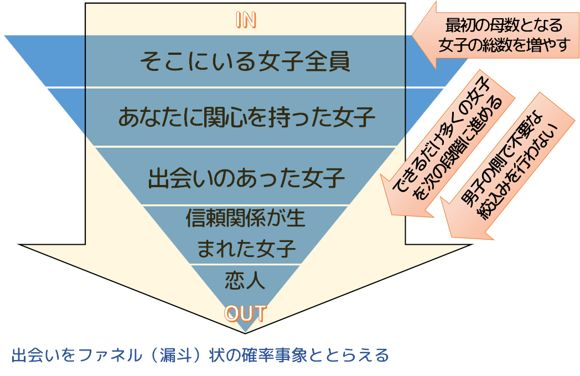 そうではなく、出会いというのは、周囲にいる女子の中から、「一定の確率で」あなたに関心を持つ女子が生まれ、さらにその中から「一定の確率で」実際の出会いが生まれ、さらにそこから「一定の確率で」関係が進展して恋人になる、そういう「ファネル（漏斗 ）状の確率事象の連続体」だと考えるべきです。 そうすると、一本の線に見えていた先ほどの出会いのエピソードは、この確率のファネルのなかでたまたま最後まで生き残った出会いを個別に見ていただけだと分かってきます。
このように考えれば、出会いを成功させるには、
・最初の母集団に存在する女子の数を増やす ・ふるいにかけられる各段階で次に進む確率を上げる ・自分の側で余計な絞り込みを行わない
といったことを実現すればいいことになります。 ちょっとした出会いを大切にすることや、恋人ができるまでは相手を絞り込まず広く友達関係を作っていくことは、どれもこの「確率事象としての出会い」の最適化のための行動選択なのです。
Ｐ４．知り合う前に好きな相手を決めてしまうのでなく、まず実際に知り合ってみることを優先する。
これも、先ほどの原則の「出会いは確率事象である」ということと少し関係しているのですが、出会いの始め方として、まず誰かを好きになって、その特定の女子に最初から狙いを絞ってアプローチする、というのは、たまたまその女子が自分に興味を持っていない限り常に失敗してしまう、極めて勝算の低いギャンブルになってしまいます。 実はその女子以外で、あなたに興味を持っている女子が何人もいるかもしれないのに、このやり方ではそういった女子とも出会えない可能性が高いでしょう。 また、まだ深く知り合っていない段階での第一印象ほど当てにならないものはなく、実際に交際してみて初めて、自分と相性がいいか悪いかが分かってくる、ということもあります。 ですから、出会いを成功させるためには、知り合う前にアプローチする相手を絞り込んで決めてしまうのではなく、出会いのアンテナを広く張って、実際に出会いのチャンスのある女子とまずは知り合って、その先は実際に交際しながら考えていく、というやり方のほうがいいのです。 |
さて、ここまではある意味、ウォーミングアップです。
恋愛について自己分析をすることで、あなたが恋愛に求めているものを再確認し、恋愛のルールやアドバイスを通じて、これから出会いを探していくなかで、どんなことを意識していけばいいか、クリアになってきたのではないかと思います。
でも、まだこれだけでは、あなたがいろいろ考えているだけで、実際の出会いに全然近づいていないですね。
ここからは、実際の出会いをどうやって作っていくかを具体的に考えていきます。
さて、ここから、出会いのきっかけ作りについて考えていくわけですが、実はここであなたのタイプによってそのやり方が分岐します。
その分岐の条件とは、あなたが「モテる男子」であるか、「モテない男子」であるかです。
もしあなたが、バレンタインデーに毎年周囲の女子から（一個・二個でもいいので）義理ではないチョコレートをもらえたり、一年に一回以上、女子から告白されたり、何か男女混合のイベントがあるときに、女子の方から「うちのグループに入らない？」と誘われたり、そういう、「向こうからやってくる出会い」が定期的にあるのであれば、あなたは「モテる男子」カテゴリに入っています。これは、いま現に交際している相手がいるかどうかは関係ありません。
そして逆に、もしあなたがそういった経験から縁遠いと感じるようであれば、あなたは「モテない男子」カテゴリに入っています。
もしあなたが、モテる男子カテゴリに入っているのであれば、出会いを作る方法は簡単です。
あなたの場合、普通に生活しているだけで、女子からのアプローチをはじめとした出会いのきっかけがコンスタントにやってくるでしょうから、そういったきっかけを大切にして、女子との友達関係を作っていきましょう。
その女子に「嫌い」という感情を持っているのならさすがに無理ですが、特に関心がなかったということなら、アプローチされたことで関心をもって、友達になればいいのです。
ただし、相手の女子からいきなり「恋人として付き合ってください」と告白されたときは、少し考えてください。
そういう場合は、あなた自身がその相手といきなり恋愛関係になりたいと思えないときは、「まだ君のことがよくわからないから、最初は友達としてということでもいい？」と返すのがいいと思います。
そして、アプローチしてきた女子以外に、あなたが「いいな」と思っている女子がいたら、「告白」ではなくもっと軽いレベルで、あいさつをしたり休み時間に声をかけたりして、友達になれるようにちょっと頑張ってみましょう。
もともとモテるタイプの男子なら、こういう大雑把な作戦でも、成功率はそれなりに高いはずです。
そうやって、何人かの女子と友達になった結果、特定の女子と意気投合できればより親密な関係になっていくでしょうし、結局そういう気分にならないのであれば、友達関係が続くか、自然消滅していくかどちらかになるはずです。
交際する、というと肩肘張った感じになりますが、そんな風に考えず、声をかけてくれた女子とまずは仲良くなる、仲良くなったあとでその先のことは考える、くらいで全然構わないのです。
でも、出会いが向こうからやってくるモテる男子であっても、その後が続かない、みんな「いいお友達」になってしまう、といった悩みをお持ちの方もいるかもしれません。そういった方は、ぜひ本書の後半のパートも読んでみてください。
一方、あなたが「モテない男子」である場合。
もしあなたが大学生もしくは社会人なら、自ら動いてあなたに向いた出会いの「場」を見つけてそこに参加することが、出会いのチャンスを最大化する第一歩となるでしょう。
また、あなたが中高生であったとしても、男女共学校で部活動や委員会活動などに参加できるなら、そんな学校生活のなかで出会いのチャンスを見つけていく方法が考えられるでしょう。
最後に、もしあなたが中高生で、かつ、男子校に通っていて特段の学外活動などにも参加しておらず、そもそも周囲に女子がいない場合。
残念ながらその状況から、出会いのきっかけがたくさん生まれてくるということはほとんどないでしょう。
ですからそういった状況の場合、一つの割り切りとしては、いまは勉強に集中して、いい学校に進学して次の舞台でいい出会いが見つかることを目指す、そのために今は戦力を蓄えて離脱戦に徹するという考え方もあります。
大学生以上になると、学校生活以外にも自由に出会いの場を広げられるようになり、モテないタイプの男子にとってもそれなりに出会いのチャンスが作れるようになります。
モテない高校生が出会いのチャンスを探すことよりも、モテない大学生が出会いのチャンスを見つけてくることのほうがずっと簡単です。しかも、受験に成功してランクの高い大学に進学できればできるほど、恋愛の場面でも有利になったりもします。
でも、どうしてもそこまでは割り切れない、何とかできる範囲で出会いを探したいと考えるなら、まずは学校生活の外に、あなたに向いた出会いの「場」を見つけるところから始める必要があると思います。
なお、ここで何度か出てきた、出会いの「場」の探し方については、このあとの章で述べます。
出会いの作り方の第一歩について、モテる・モテない男子別にまとめてみましたが、簡単にいうと、
・モテる男子の場合、出会いのきっかけ作りについて悩む必要はほとんどなく、基本的には「出会った後」のことだけを考えれば十分。
・モテない男子の場合、最大のハードルは出会いのきっかけ作りのほうにあるので、どうやってそのきっかけを作り、出会っていくのかをしっかり考える。
という違いがある、ということです。
そのことをふまえつつ、出会いが生まれ、恋愛に発展していくプロセスを整理しておきましょう。
プロセス１：出会いのある「場」に身を置く
プロセス２：女子に認知され、第一印象チェックを受ける
プロセス３：あなたの魅力によって「ちょっといいな」女子が生まれる
プロセス４：「ちょっといいな」女子とのパブリックな関係が生まれる
プロセス５：二人の関係が徐々にプライベートな関係に移行する
ゴール ：プライベートな関係の究極形として、恋人関係になる
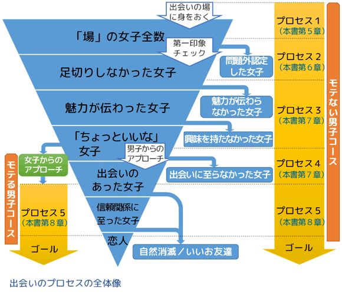
このうち、特に意識しなくても定期的に出会いのある「モテる男子」はプロセス５だけ考えればＯＫです。一方、何もしないでいると出会いが生まれない「モテない男子」はプロセス１から順に進んでいく必要があります。
このプロセスの長さの違いがまさに、モテる・モテないの違いでもあるのですね。
以下、それぞれのプロセスを具体的に説明していきます。
文中に「パブリック」「プライベート」という用語がたくさん出てきますが、この二つは恋愛のプロセス全体を構造化するキーワードになっていますので、次の章で詳しく説明します。
周囲に恋愛に発展する可能性のある女子がいる、出会いの「場」に、あなたの身を置きます。
女子のいるサークルに加入するとか合コンに参加するといったことがその典型ですが、「男女共学の学校に通っている」とか「バイト先に同僚の女子がいる」といった状況についても、そこには出会いのチャンスがあるので、出会いの「場」に身を置いている、ということができます。
一方、無人島に一人で流れ着いたら出会いがないのと同様に、もしあなたが男子校に通っていて学外活動等も一切ない、という状態だとすれば、そもそもあなたは出会いの「場」に身を置いていないことになります。
こういった場合は、別に出会いの「場」を探してそちらに入っていくか、いまは状況が悪いと判断して将来のチャンスに備える、「離脱戦」を選択することになるでしょう。
出会いの「場」に参加したあなたが、その「場」で生活・活動していると、その「場」にいる女子に、少しずつあなたの存在が知られていきます。
そしてこの段階で、女子から「第一印象チェック」が入ります。
第一印象チェックというのは、外見やしぐさなど、外から見て分かる範囲で、あなたが「問題外」か「許容範囲」なのかを仕分ける行為です。
言ってみれば、見た目の印象による足切りですね。
ここで「問題外」に仕分けられてしまうと、この後のプロセスに一切進みませんから、そうならないような努力と工夫が必要です。
第一印象チェックであなたを「問題外」に仕分けなかった女子の一群は、あなたにとって潜在的な出会いのチャンスのある存在になります。
でも、この段階ではあなたとそれら「出会い候補女子」との間にはまだ個人的関係はありません。
ですから、この段階ではあなたの魅力のうち、個人的な関係がなくても伝わるような「パブリックな魅力」がそれらの女子に伝わります。
端的にいえば、ルックスがいいとか、成績優秀なアスリートとして有名だとか、雑談トークが面白いといった、そういう魅力ですね。
そして、こういったあなたのパブリックな魅力に触れることで、あなたに関心を持ち、機会があれば話をしてみたいな、と思ってくれる女子が生まれてきます。
こういった、あなたに関心を持っている（でもまだ実際の関係はない）女子のことを、本書では「ちょっといいな」女子と呼びます。
「ちょっといいな」女子は、あなたに好意的な関心を持ってくれているわけですが、多くの場合、自分からアプローチをしてくることはなく、あなたが何もしないでいると見逃してしまいます。
ですから、この段階で必要なことは、どの女子が「ちょっといいな」女子であるかをうまく見極めて、あなたのほうから出会いのアプローチをしかけることです。
そのアプローチが適切なものであれば、あなたのアプローチは成功し、その女子と会話したり遊んだりするようなライトな友達関係が生まれるでしょう。
ここでのポイントは、
・「ちょっといいな」女子をどうやって発見するのか
・「ちょっといいな」女子への最初のアプローチはどんな風にすればいいのか
といったところになるでしょう。
「ちょっといいな」女子との間に友達関係が生じることで、あなたの魅力のうち、個人的な関係があって初めて伝わるような「プライベートな魅力」を、少しずつその女子に発揮することができるようになります。
平たく言ってしまえば、「内面の魅力」とか「人間性の魅力」といったものですね。
そういったものが伝わり、あなたと相手の女子との間に、お互いの価値観に対する理解や共感、プライベートな事項も含めて何でも話し合えるような信頼感といったものが生まれてくると、ただの友達から親しい友達へ、さらに「友達以上」と呼べるような関係へと、二人の関係がどんどん「プライベートな関係」に移行していきます。
当然、二人の出会う場所も、学校などのパブリックな場所から、休日に二人きりでデートするといった、よりプライベートな場面に移行していきます。
ここまでくると、周囲の認知としても、「あの二人は付き合っている」といったものになっていくことでしょう。
この段階で考えるべきポイントは、
・「いいお友達」コースにならないための、プライベートな関係の構築のしかた
・より親密でプライベートなデートに誘っていくための「かけひき」のコツ
といったものになると思います。
ここが最終的なゴールになります。
出会いのプロセスとしては、プロセス５の「パブリックな関係からプライベートな関係への移行」が完全に終わった状態が、この「ゴール」ということになります。
さて、先ほどの出会いのプロセスのなかで、繰り返し出てくるのが「パブリック」と「プライベート」という二つのキーワードです。
ここで、パブリックというのは「公共的、社会的、社交辞令的、タテマエ的、外見的、外部、誰でもアクセスできる領域」といったニュアンスであり、プライベートというのは「個人的、ホンネ的、内面的、内部、特定の人しかアクセスできない領域」といったニュアンスです。
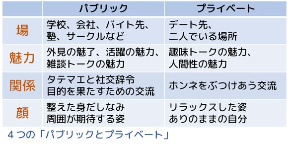
このキーワードを、本書では四つのカテゴリに分けてそれぞれ使います。
その四つのカテゴリとは、「場」「魅力」「関係」「顔」です。
「パブリックな場」というのは、学校、会社、バイト先、塾、サークルなど、不特定多数の人が何らかの目的や用事を持って集まってくる場所のことです。
学校や塾なら勉強、会社やバイト先なら仕事、サークルなら活動内容がその「目的」になります。
合コンや婚活イベントのようなものも、出会いが目的になっているものの、その場では参加者はまだ特定の誰かと個人的な関係になっているわけではないので、こちらの「パブリックな場」（ただし、プライベートな場までの距離が短い）に分類されます。
一方、「プライベートな場」というのは、そういったパブリックな場を離れて、特定の二人が「二人でいること」それ自体を主な目的の一つにして一緒に行動する場所のことを指します。
そういう意味では、特定の二人がデートする場所はすべて「プライベートな場」です。
学校帰りの下校路も、一人で帰ったり男友達と話しながら移動したりしているときは「自宅に帰る」という目的をもった「パブリックな場」ですが、女子と二人で（二人でいることに目的をもって）帰るのであれば、二人でいること自体が目的化している「プライベートな場」に変わります。
ですから、このパブリックとかプライベートというのも、きれいに二つに分かれるのではなく、「純然たるパブリック」から「プライベートに近いパブリック」、「パブリックに近いプライベート」ときて、「純然たるプライベート」という風に、連続的に分布しています。
「受講時間中の塾」とか「業務時間中のバイト先」などは、本来やるべきことに集中すべき「純然たるパブリック」な場であって、そういう場所で女子を口説くことはできませんし、そんなことをしたら場をわきまえない非常識な男というレッテルを貼られてしまうでしょう。
でもこれが、同じ場所でも時間が変わって「受講時間が終わった後の塾の帰宅前の時間」とか「バイト先の休憩時間」になると、女子と他愛のない話をしたりすることがある程度許されるようになるでしょうし、さらに「場」が変わって、「イベントの打ち上げ」とか「サークルの飲み会」になれば、もっと女子と親しく会話しても問題ないことになるでしょう。
基本的には、出会いの最初のきっかけというのは、こういった、女子と親しく話すことができるような、パブリック度が比較的ゆるくプライベート性が若干含まれるような、そういう場で生まれます。
そして、最初のきっかけがあって特定の二人が出会い、二人で行動するようになると、出会いの場は二人の「プライベートな場」に移行します。
先に触れたように、一緒に帰るときの下校路というのもプライベートな場ですが、まだまだプライベート度は低いですね。
そこから、一緒に買い物に行ったり、休日に映画を見たり食事をしたり、さらには旅行にでかけたりと、関係が深まっていくにしたがって、デートで行く場所の「プライベート度」はどんどん高まっていくでしょう。
あなたが持っているさまざまな特性のなかで、女子からみて「いいな」と思ってもらえる、あるいは関心や親しみを感じてもらえるようなものを総称して「魅力」と呼びます。
魅力といっても様々なものがありますが、それらを分類するもっとも重要な基準は、「パブリックな場でも通用する魅力か、プライベートな場でしか発揮できない魅力か」というものです。
「パブリックな場」というのは、要は「まだ特定の女子と親しくなっていない場」ということですから、特に親しくない女子、つまり「ただのクラスメート」とか「ただのバイト先の同僚」とか「ただのサークルのメンバー」（いずれもまだ友達でない）といった親しさレベルの女子に対してでも伝わるような魅力が、「パブリックな魅力」ということになります。
この「パブリックな魅力」にあてはまるものは、例えば次のようなものです。
・ルックスがいいこと
・スポーツマンであること
・有名人であること
・社会的ステータスが高いこと
・雑談トークが面白いこと
一方、「プライベートな魅力」というのは、パブリックな場で多少会話したくらいでは伝わらず、ある程度個人的な関係ができたあとに初めて発揮できるような魅力のことをいいます。
この「プライベートな魅力」に該当するものは、概ね、俗に「内面の魅力」とか「人間性の魅力」と呼ばれるようなものです。
・価値観が合うこと
・誠実であること／優しいこと
・相手の話をよく聞くこと
・趣味で一緒に盛り上がれること
・頭がいいこと
これは平たくいうと、「タテマエの関係」と「ホンネの関係」という違いであり、その違いは相手との心理的な距離感をそのまま反映しています。
個別の出会いがあるまで、「パブリックな場」であなたが出会うすべての女子との関係は「パブリックな関係」です。基本的には男女どちらも社交辞令で接し、自分のありのままの姿は隠して、その「パブリックな場」がもつ本来の目的を達成していくための必要最小限のタテマエのコミュニケーションを行います。
典型的な例でいえば、会社での上司と部下の関係は、パブリックな関係です。
同じように、まだ親しくなっていないクラスメートやサークルメンバーとの関係も、パブリックな関係です。
ここから、誰か特定の女子との出会いがあり、会う場所をパブリックな場からプライベートな場に移したところで、そのタテマエの部分、社交辞令でのやりとりを少しずつ脱ぎ捨てて、腹を割ったホンネでのコミュニケーションの割合が徐々に増えていくことになります。
最終的には、プライベートな場で会っている二人の間には、社交辞令やタテマエでのコミュニケーションは最小限となり、お互いがありのままの自分でホンネをぶつけ合って、それでも関係が壊れないような、強固なプライベートな関係が構築されていくことになります。
これは「よそいきの自分」と「ありのままの自分」といった違いで、外見の部分と内面の部分、両方に関係があります。
外見的な意味での「パブリックな顔」というのは、ちゃんと身だしなみを整えた「パブリックな場」で活躍するためのスキのない姿、「プライベートな顔」というのは、家に帰ってリラックスした姿、あるいは朝起きて「パブリックな顔」になる前の姿、そういったものを指しています。
女子でいうところの、化粧している顔とすっぴんという違いだといえば分かりやすいでしょうか。
男子でいうなら、「パブリックな顔」というのはばっちりスーツで決めた仕事中のビジネスマンのイメージ、「プライベートな顔」というのは、その同じビジネスマンが、まだ起きたばかりでパジャマ姿で無精ひげも剃 っていないような状態のイメージです。
内面的な意味での「パブリックな顔」というのは、やはり同様に「パブリックな場」で活躍するために、自分のキャラクターのうち、周囲に受け入れられやすい部分だけを表に出し、そうでない部分は隠したり、本来の自分とは違うように振る舞ったりすることで作りだした「社会に適応できるように調整した自分」、「周囲に期待されているとおりの振る舞いをしている自分」のことです。
それに対して、内面的な「プライベートな顔」というのは、そういった社会を意識した殻を脱ぎ捨てた先にある、本来のありのままの自分の価値観や嗜好 、精神的な強み・弱みのことを指します。
この、内面的な「プライベートな顔」のなかには、誰もが多かれ少なかれ持っている、特殊な性的嗜好 といったものも含まれるでしょう。
このように、四つの軸でパブリックとプライベートを区分けしたのには、理由があります。
それは、
出会いというのは、特定の二人が、
・パブリックな場で
・パブリックな魅力に惹 かれて
・パブリックな顔で
・パブリックな関係を作る
ところからはじまって、
・プライベートな場で
・プライベートな魅力に惹 かれて
・プライベートな顔で
・プライベートな関係になる
ところにまで到達するプロセスである、と整理することができるからです。
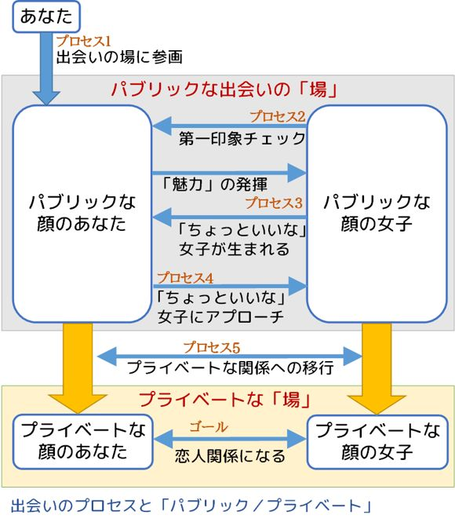
そういう目線で、先ほどの六段階の出会いのプロセスを改めて整理すると、そのことがよく分かります。
プロセス１：出会いのある「場」に身を置く
出会いのある「場」というのは、女子のいるパブリックな場のことを指します。
まずあなたが、そういったパブリックな「場」に身を置かなければ、何も始まりません。
でも、これだけではまだ「身を置いた」だけで、出会いの場への本当の参加資格を手に入れたことにはなりません。
プロセス２：女子に認知され、第一印象チェックを受ける
パブリックな出会いの場に身を置くと、あなたの「パブリックな顔」「パブリックな魅力」の第一印象が女子からチェックされます。
これをクリアして初めてあなたは出会いの「場」への参加が認められることになります。
プロセス３：あなたの魅力によって「ちょっといいな」女子が生まれる
パブリックな場にいることで伝わるのは、基本的には「パブリックな魅力」だけです。そのパブリックな魅力が十分に高ければ、やがてその「場」にいる女子の一部から興味を持たれるようになります。それが、「ちょっといいな」女子です。
プロセス４：「ちょっといいな」女子とのパブリックな関係が生まれる
次に必要なことは、誰がその「ちょっといいな」女子なのかを見極めてアプローチし、最初の出会いのきっかけを作ることです。それに成功すれば、その女子と「個人的ではあるものの、まだパブリックな関係」が、まず生まれます。
プロセス５：二人の関係が徐々にプライベートな関係に移行する
出会った二人が関係を深めていくなかで、先ほどの四つの軸の「パブリック」を、次々と「プライベート」に移行させていく段階です。
最もかけひきの要素が強くなる段階でもあります。
この段階で、「プライベート」への移行が十分でなく、多くの領域で「パブリック」の要素が残った状態が続いてしまうと、恋人にはなれずに「いいお友達」コースになります。
ゴール：プライベートな関係の究極形として、恋人関係になる
四つの軸がすべて十分に「プライベート」の側に移行すれば、そのときの二人の関係は自然と「恋人」という関係になっているでしょう。
このように、出会いというのは、「すべてがパブリックな世界」で知り合った二人が、最終的に「すべてがプライベートな世界」にたどり着いて、恋愛関係になるというプロセスです。
そうすると、実はここには少々、「ねじれ」が生じていることに気づきます。
男女が知り合う出会いの場というのは基本的にすべて「パブリックな場」です。
ですから、男女ともそこにいるときは「パブリックな顔」をしています。つまり、本来の顔はいったん隠して、よそいきの顔でそこにいるわけですね。そして、そこで発揮されるのは、お互いの「パブリックな魅力」だけです。
男は、「パブリックな顔」を見せながら、そこにいる女に声をかけ、アプローチをします。女は、言い寄ってくる男の「パブリックな顔」を見て、「パブリックな魅力」を評価して、その申し出を受けるか受けないか決めます。
そんな風に、最初の出会いそのものは、「パブリックな顔」をした男女の間で成立します。
でも、そこからは男女とも、少しずつお互いの前で「パブリックな顔」を捨てて、「プライベートな顔」を見せていくようになります。二人が会う場所も、学校とか会社のようなパブリックな場から、二人きりのデートといったプライベートな場に移っていきます。
そして、相手に伝わるお互いの魅力も、外面的な「パブリックの魅力」から、内面的な「プライベートの魅力」にシフトして行きます。
そして、これらのプライベートな顔・魅力のほうが、実は男女とも自分の正体であるわけです。
お互いに自分の正体を見せあった結果、お互いに相手のそれを愛することができれば、二人は恋愛関係になれます。
でも、「パブリックな顔・魅力」は良かったけど、男女どちらかが相手の「プライベートな顔・魅力」を好きになれなかった、という場合には、残念ながら、二人の間に破局が訪れるでしょう。
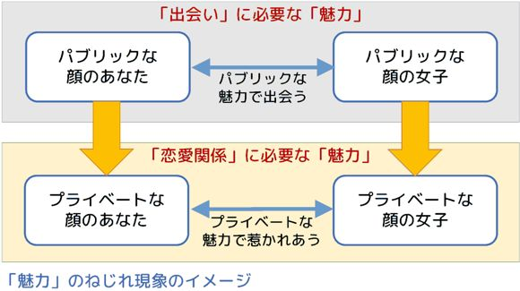
男女はパブリックな顔・魅力で惹 かれあって始まるのに、恋人になれるかどうかは、そこではなく、プライベートな顔・魅力を愛し合えるかどうかで決まるのです。
ここには、明らかに「ねじれ」がありますよね。
そして、もう一つここには隠れたすれ違いの悲劇があります。
それは、「プライベートな顔・魅力」同士であれば相性がよく、愛し合えたはずの二人がいたとしても、「パブリックな顔・魅力」の時点で互いにいいなと思って出会うことがなければ、そもそも関係が生まれない、ということです。
つまり、恋愛それ自体は、最終的には「プライベートな顔」の二人がつくる関係であるにも関わらず、恋愛につながる最初の出会いは「パブリックな顔」の二人が作らなければならない、という、もう一つの「ねじれ」が生じているのです。
そして、「パブリックな顔・魅力」のほうで相手を惹 きつけられなければ、いくら「プライベートな魅力」のほうに素晴らしいものがあっても、なかなかその人には出会いが生まれてこない、というジレンマがあるわけです。
「あいつ、付き合ってみると本当にいいヤツなんだけど、見た目がぱっとしなくて話しベタだから、全然モテないんだよなあ」というのが、まさにこのタイプです。
もしあなた自身が、自分はこのタイプだと自認しているなら、このねじれに着目しましょう。
そして、課題は「パブリックな出会いの場でどうやってあなたの（見えにくい）魅力を発揮し、最初の出会いを作ればいいのか」という部分にあると考えて、対策を打ちましょう。
このあと、出会いの場の選択によって、そのねじれを解消する方法についても解説していきます。
対応する出会いのプロセス：プロセス１（出会いのある「場」に身を置く）
出会いのチャンスの大きさは、あなたがどのような「場」に身をおくかで大半決まってしまう部分もありますから、あなたの魅力に合った出会いの場を探すことが、とても重要です。
まず、あなたをとりまく出会い環境がどのような状況にあるのかを客観的に把握していきましょう。どんな作戦を練るときでも、まずは自らがおかれた状況を正確に理解することが、成功の秘訣 です。
あなたの生活のなかで、出会いのチャンスのある場所はいくつあって、それぞれの場所に出会いの対象になりうる女子はどれくらいいるでしょうか？
出会いの「場」については、大きく二種類あります。
強制的に、あるいは明確な出会い以外の目的で身を置く「場」と、それ以外であなたが能動的に参加することを選択して身を置くことになる「場」です。
前者の典型としては、あなたが学生であれば学校が、社会人であれば勤務先が、それにあたります。また、出会い目的ではなくお金を稼ぐ目的でやっているバイト先や勉強のために通っている塾なども、こちらです。
後者については、部活動、サークル活動、委員会活動、ボランティア、合コン、出会い系イベント、オンラインの集まりなどが含まれるでしょう。具体的な活動目的が出会いとは別にあっても、あなたが参加する先を自由に選べ、そこに出会いの可能性のある女子がいる場合は、カテゴリとしてはこちらになります。
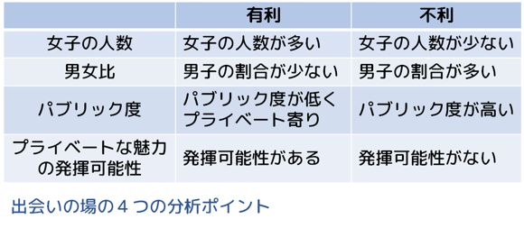
そして、あなたが身をおく、それぞれの出会いの「場」を、次のような視点で分析してみます。
分析ポイント１：女子の人数
それぞれの出会いの「場」に、出会いの対象になりうる女子は何人いるでしょうか？
例えば、もしあなたが男女共学の学校に通っていて、その学校に女子生徒が200 人いるとしたら、とりあえずその全員が「出会いの対象となりうる女子」となります。
さらに、あなたがバイトであったり学外のサークル活動であったり塾であったり、そういったことをやっているのであれば、そういった場所にいる女子も数に入ってきます。
一方、あなたが男子校の生徒で、学校生活以外に女子がいる場での活動などにもまったく参加していないなら、あなたが身を置く「場」には、出会いのチャンスのある女子はまったくいない、ということになります。
言うまでもありませんが、あなたの周囲に、出会い・恋愛の対象になりうる女子がひとりもいなければ、あなたに出会いが訪れる理論的可能性は、最初からゼロです。
まったく関係のないところから偶然に出会いが降ってくる可能性も、もちろんゼロではないと言えばそれはそのとおりですが、そんなラノベみたいな展開を待っていても仕方がないですね。
分析ポイント２：男女比
そしてもう一つ、そういった出会いの「場」にいる、男子の数も考えてみましょう。
恋愛というのはある種の椅子とりゲームですから、女子の数が同じなら、ライバルである男子の数が少なければ少ないほど出会いのチャンスは大きくなり、あなたにとって有利になります。
男女共学校で、女子の数が同じ200 人であっても、男子の数が900 人なのか、200 人なのか、あるいは30 人なのかで、その学校生活のなかでの女子との出会いの可能性は圧倒的に変わってくるでしょう。
分析ポイント３：場のパブリック度
同じ男女がそれぞれ10 人集まっている「場」があったとしても、それが塾なのか合コンなのかで、出会いまでの距離感は全く違います。
塾も合コンもパブリックな場であることには違いがないのですが、塾というのは勉強をするという非常に明確な本来の目的があり、出会いへの志向が弱い「純然たるパブリックな場」であるのに対して、合コンというのはほとんど出会いのためだけに男女が集まっているということで、「プライベートに近いパブリックな場」です。
同じように、大学のイベント系サークルや軟派系テニスサークルなどは、表面的にはイベントやスポーツ活動を目的にしてはいるものの、出会いへの志向が非常に強い、合コンと変わらないレベルで「プライベートに近い」場ですね。
当然ですが、プライベートに近い「場」であればあるほど、潜在的な出会いのチャンスは大きくなります。
分析ポイント４：「プライベートな魅力」の発揮可能性
一般的に、パブリックな場においては、あなたの魅力のうち、女子に伝わるのは「パブリックな魅力」だけで、「プライベートな魅力」を発揮する場面はありません。
でも、一部の「場」においては例外的に、プライベートな魅力が、まだ出会いに至っていない女子にも伝わるケースがあります。
そういった出会いの場は、あなたの強みがプライベートな魅力のほうにあって、パブリックな魅力だけでは勝負しにくい場合には、戦略的に極めて重要な「場」になります。
というよりも、そういった特殊な「場」を活用しなければ、プライベートな魅力を出会いのきっかけ作りに生かすことはできません。
この四つ目のポイントについては、このあと「魅力」の分析のなかで改めて取り上げます。
女子から好感を持たれやすいかどうかということを、モテる・モテないと表現しますが、あなたは、どういう魅力で、女子から「モテる」のでしょうか？
そんなものはない、と答えてはいけないですよ。
だって、あなたに本当に女子からモテる魅力がないのであれば、あなたのことを好きだと思って選んでくれる女子は、どう考えたって絶対に現れないはずじゃないですか。
そんな風に考えてしまうことは、恋愛でやってはいけない「自分を卑下すること」そのものです。
あなたがもし女子から好かれるとすれば、その女子はあなたのどの部分に魅力を感じて好きになるのか、それを自分なりに考えるところから、始めましょう。
あなたの頭の中だけで考えることですから、恥ずかしいと思わず、自信をもって自分の魅力を列挙していけばいいのです。
そして、あなたが考えた、その「モテる魅力」が、以下のタイプのどれにあてはまるか、考えてみてください。
（１）見た目がかっこいいという「外見の魅力」。
（２）スポーツで成果を挙げていたり生徒会委員長だったりと、何か特定の領域で活躍していることから生まれる「活躍の魅力」。
（３）トークが面白いという「トークの魅力」。ただしこれは、以下の二つのサブタイプにさらに分かれます。
（３ａ）話し始めてすぐに、周囲をまとめて盛り上げることができるような「雑談トークの魅力」。
（３ｂ）興味を持ってくれた特定の相手と、最低でも５〜10 分以上話して初めて盛り上がるような「趣味トークの魅力」。
（４）なにか問題が起こったときに誠実な対応ができる、問題や悩みに親身に対応できる、知的であるといった「人間性の魅力」。
例えば、あなたがブラスバンド部に所属していて、そこで活躍しつつ、音楽の趣味の話題なら誰にでも面白く話す自信がある、というのであれば、あなたのモテるポイントは、
（２）の「活躍の魅力」（ブラスバンド部での活躍）と、
（３ｂ）の「趣味トークの魅力」（音楽の趣味トーク）
の二つになる、ということです。
一方、あなたが特に部活動などにも参加しておらず、雑談も趣味の話題も含めてトークにも自信がなく、もちろん外見もぱっとしないけれども、好意を持ってくれた女子には必ず優しくできる自信がある、というなら、あなたのモテるポイントは、
（４）の「人間性の魅力」（優しい対応）
だけということになります。
もちろん、優しくする自信があるというのと、本当に優しくできるというのは実際にはかなり違うことではありますし、それだけで相手を惹 きつけるほどの魅力になるのか、といった問題もあります（このあたりについては、すでに第１章で考えました）が、ここではとりあえず自己申告ベースで考えましょう。
また、言うまでもありませんが、いまあなたが持っている（と自認している）魅力は何か、ということを考えるだけではなく、これから努力によって手に入れたり、さらにパワーアップできる魅力はないだろうかと考え、その魅力を磨いたりしていくことも、もちろん重要です。
さて、先ほど、男子がモテるポイント、つまり魅力を、五つのタイプに分類しました。
（１）外見の魅力
（２）活躍の魅力
（３ａ）雑談トークの魅力
（３ｂ）趣味トークの魅力
（４）人間性の魅力
そして、あなたがこれらの魅力のうちどれを持っているのかを考えていただきましたが、この五タイプの魅力には、それぞれ決定的に異なるポイントがあります。
それは、その魅力が発動するタイミングです。
（１）の外見の魅力は、女子があなたを見かけた瞬間に発動します。
（２）の活躍の魅力は、女子があなたの「活躍」を見たり、知ったりした時点で発動します。
（３ａ）の雑談トークの魅力は、女子があなたの雑談を耳にした時点で発動します。
（３ｂ）の趣味トークの魅力は、女子があなたと趣味の話を話し込んだ時点で発動します。
（４）の人間性の魅力は、女子があなたと一定以上の関係を持ち、共同でいろいろな活動をした時点で発動します。
この発動タイミングというのは非常に重要な視点なのでよく理解してください。
なぜ、100 人に一人の外見がすごくかっこいい男はすごくモテる一方で、100 人に一人の人間性がすごく立派な男は全然モテなかったりするのでしょうか。
それは、この発動タイミングの違いによる部分が大きいです。
（１）の外見の魅力は、女子があなたを見かけた瞬間に発動します。
あなたがその女子と会話をする必要もありませんし、それどころか、あなたが気づく必要さえありません。
しかも、あなたが特に意識しなくても、その魅力は女子の近くにいる間、ずっと発動し続けますし、その効果は無差別的で、周囲にいるあらゆる女子に対して常に発揮され続けます。
言ってみれば、外見の魅力を武器にできるあなたは、モテる電波を常に周囲に発し続けていることになるのです。これは強いですね。
同様に、他の魅力についても、発動タイミングを見ていきましょう。
（２）の活躍の魅力は、あなたが部活動や委員会活動などで活躍している、頑張っている、そういう姿を見られたり知ってもらったりすることで発動する魅力です。
ですから、基本的にはその魅力が伝わる範囲はあなたの活躍が見える範囲、つまり多くの場合はあなたが活躍しているその活動（集団）に所属している女子までです。
ただし、その活躍の程度が特に大きい場合、例えば全国大会で活躍してニュースになったりした場合には、その活躍は全校レベルで知れわたり、多くの女子があなたの魅力に気づくことになるでしょう。
（３ａ）の雑談トークの魅力は、あなたが朝や昼休みなどに雑談をしたり、グループ活動の合間に周囲のメンバーと雑談をしたりしたときに発動します。
ここで言っている「雑談トークの魅力」というのは、必ずしも狭い意味での雑談だけでなく、勉強や作業などで事務的な会話をしているときにも感じられるような、話し方・話題の選び方・盛り上げ方全般、「トークそのものが面白い、雰囲気が楽しい」という魅力のことです。
ですから、この雑談トークの魅力が伝わる範囲は、あなたが少しでも会話をしたことがある女子全般、さらにはそういったあなたのトークを日常的に耳にしているあなたの近くの女子、その辺りまでです。
もともと出会いと会話（トーク）というのは切っても切れない関係にありますから、この雑談トークの魅力は、モテるための魅力の中でも重要度が高いものの一つだと言えます。
（３ｂ）の趣味トークの魅力というのは、あなたのトークそのものというより、あなたがトークで話す「内容」が興味深い、というところから生まれてくる魅力を指しています。
ですからその魅力はふだんの短時間の雑談や事務的な会話ではなかなか発揮されず、女子と少人数（できれば一対一）でじっくりと話す機会があって、そこで５分、10 分といった比較的長い時間、その「興味深い内容」を語るチャンスがあったときに、初めて発動することになります。
これは、普段の生活のなかではなかなか巡ってこないチャンスです。
また、女子があなたの話を５分、10 分と聞いてくれるためには、そもそも相手があなたにある程度の興味をもっていなければ難しいということを考えると、この趣味トークの魅力というのは、出会いの最初のきっかけを作るためには役に立ちにくいことに気づきます。
そして最後、（４）の人間性の魅力というのは、女子と一緒になにか作業をしたり、問題解決にあたったり、深い会話をするような関係になって初めて発動します。
そういった状況にならない限り発動せず、誰もその魅力に気づくことはありません。
ですから、この人間性の魅力については、出会いの最初のきっかけを作るための武器としてはほとんど役に立ちません。
なかなか厳しい話になってきましたね。
ここで改めて、五つのタイプの魅力が、まだ知り合う前のどれくらいの範囲の女子にまで「伝わりうる」のかということについて整理しなおしてみたいと思います。
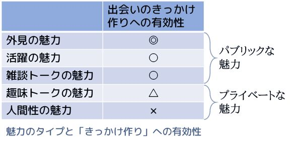
（１）外見の魅力：周囲の女子全員に伝わります。
（２）活躍の魅力：あなたの所属する部活動などの集団にいる女子や、あなたの活躍をなんらかの方法で知った女子に伝わります。
（３ａ）雑談トークの魅力：あなたと会話したことのある女子と、その周辺の一部の女子に伝わります。さらに、初対面であっても短時間の会話ですぐにその魅力が伝わる強みもあります。
（３ｂ）趣味トークの魅力：あなたと個別に５～10 分以上会話した女子に伝わりますが、「知り合う前」にそれだけの会話をすることは容易ではなく、魅力が伝わるチャンスは限定的です。
（４）人間性の魅力：関係ができて初めて分かる魅力なので、基本的に「知り合う前」には伝わりません。
こうやって整理すると、最初に知り合うきっかけ作りに活用できる魅力は、（１）の外見の魅力から（３ａ）の雑談トークの魅力までで、（３ｂ）の趣味トークの魅力や（４）の人間性の魅力というのは、最初に知り合うきっかけを作るための魅力としては役に立ちにくい、ということがよく分かります。
ここで、先に出た「パブリックな魅力」と「プライベートな魅力」の話に戻ってきます。
（１）の外見の魅力、（２）の活躍の魅力、（３ａ）の雑談トークの魅力までは、パブリックな場であってもスムーズにその「場」にいる女子に伝わる、「パブリックな魅力」です。
一方、（３ｂ）の趣味トークの魅力と、（４）の人間性の魅力は、パブリックな場で、まだ「出会い」に至っていない女子に伝わることは滅多にない、「プライベートな魅力」なのです。
あなたが自認する自分の魅力がプライベートな魅力である場合、その魅力によって誰か女子と知り合うきっかけを作ることは、なかなか難しいです。
でも、まったくチャンスがないのかといえば、実はそんなことはありません。
プライベートな魅力を、知り合う前の女子に対しても発揮できるような、例外的な出会いの「場」もあるからです。
たとえば、趣味トークの魅力について。
あなたが話す話題がものすごくマニアックで、一部の女子にしかそもそも話が通じないようなものであれば、それはもうそういう趣味のサークルみたいなのに入るくらいしか手がないと思います。
でも、そこまでマニアックではなく、少し時間をとってちゃんと話せばほとんどの女子に面白く聞いてもらえるトークができるのなら、それが活きる出会いの場は、意外かもしれませんが、例えば、
合コン
です。
もちろん、趣味を同じくする部活動やサークルなどに入っても構わないのですが、そういう場所にはあなたと同じようなトークができる男子がたくさんいて、そのライバル間での外見や雑談トーク力で差がつくような状況が生じやすいです。
さらにいうと、だいたい男子が好む趣味のサークルでは男子メンバーのほうが圧倒的に多くて、数少ない女子を奪い合うような展開になってしまいがちです。
ですから、「場」を少し違う所に移すのです。
合コンではかなり長時間の会話ができますから、重すぎたり難しすぎたりする話題を避けつつ、ちょっとマニアックな程度の趣味の話をすることは十分に可能です。
というより、最初の自己紹介とつかみの雑談の時間が終わったあとは、参加メンバーそれぞれが自分の持ちネタで会話を盛り上げることが期待されますから、合コンの後半は、趣味トーク力の魅力を発揮できるチャンスがあるのです。
それ以外では、コンパなどがしばしば開催されるイベント系・スポーツ系サークルなども、同じように「趣味トークの魅力」を活用できる出会いの「場」になるでしょう。
また、よりプライベート度の高い「人間性の魅力」であっても、親しくなる前にそれを発揮できる出会いの「場」があります。
人間性の魅力というのは、単なる会話以上のやりとり、コミュニケーション、共同作業といったものが女子との間に生じないと、発動しません。
これを言い換えると、そういった「会話以上の共同作業」が、まだ親しくなる前の女子との間に発生する出会いの場があれば、そこで人間性の魅力を発揮するチャンスが生まれるわけです。
この要件を満たすことは大学生以上であれば意外と簡単で、イベントサークルや旅行同好会、料理研究会のように、男女混成のメンバーでいろいろな「共同作業」を楽しむ、そういうサークルに入ってしまえばいいわけです。合宿やイベントなどを頻繁に行う、どちらかというと軟派寄りのスポーツサークルなども、このカテゴリに入ってくるでしょう。
たとえばキャンプの準備や後片付け、料理の支度などを女子と一緒にやったりするというのは、あなたの人間性の魅力を発揮する絶好のチャンスになるでしょう。
一方、中高生の場合には、そういったタイプの部活動・学外活動といったものは簡単には見つからないかもしれません。でも、もし見つかれば、そこはあなたの人間性の魅力を発揮するチャンスのある、とても貴重な出会いの「場」だということになります。
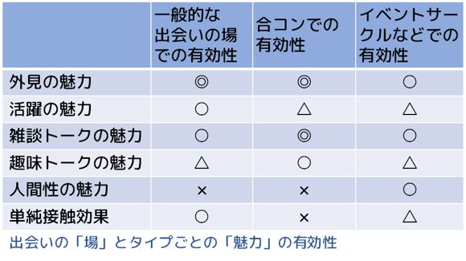
なお、ＳＮＳや動画サイトをはじめとするインターネットについてですが、端的に言って、人間関係を「新たに作る」ためにＳＮＳ等を使うというのは、簡単そうに見えて実はかなり難しく、さまざまなリスクがあります。
とりわけ男女の出会いとなると、悪意を持った人間があちこちにワナをしかけている魑魅魍魎 の世界だと言わざるを得ません。
ですので、本書では新たな出会いを作るための「出会いの場」としてＳＮＳ等をとりあげることはしませんし、アドバイスとしても、「社会人になるまでは、リスクが大きすぎるので出会いを新たに作るためにネットを使うのは避けたほうが無難です」と整理したいと思います。
社会人になると、身分証明必須の婚活サイト等も利用できるようになりますので、そういったものは活用する意義があると思います。
また、一度知り合った女子とのコミュニケーションのため、あるいは自分の趣味や人となりを発信したりするために、マナーを守ってＳＮＳ等を活用するのは、もちろん全く問題ありません。
さて、パブリックな魅力にも自信がなく、また、プライベートな魅力を発揮できそうな出会いの場も見つからない、となったら、どうしたらいいのでしょうか。
もし、学校などでとりあえず周囲に女子はたくさんいる、ということであれば、何とか使える最後の手があります。
それが、「単純接触効果」です。
これは、あるものを何度も繰り返し見たり聞いたりすると、それだけでその対象にだんだん親しみを感じるようになる、という、とてもシンプルな心理学的効果のことをいいます。
テレビで活躍していたニュースキャスターやタレントが選挙に立候補すると、それまで真面目に政治をやって実績をあげてきた政治家よりもずっと多くの得票で当選したりします。
これは、「テレビで何度も見た」という単純接触効果によって、有権者の多くがその候補者に親しみを感じて投票することによって起こる現象です。
同じく選挙で、名前と顔をでかでかと印刷した選挙ポスターを貼りまくるのも、選挙カーがただひたすら候補者の名前だけを連呼するのも、どれも単純接触効果によって候補者、もしくは候補者の名前に親しみを持ってもらおうという作戦なのです。
この効果を活用すれば、あなたに親しみを感じる女子を増やし、それを出会いのきっかけの突破口にできるかもしれません。
例えば、学校でこの単純接触効果を活かすには、クラスでのさまざまな役割を引き受けたり、部活動や委員会活動に参加したりして、あなたという存在ができるだけ多くの女子の「目に触れる」「声をかけたりかけられたりする」「名前を聞く機会が増える」ように行動すればいいのです。
一生懸命誰かに話しかけたりする必要はありません。
普通にいろいろな活動をして、そうやって活動している姿を見てもらったり、事務的な会話をしたりするだけで、単純接触効果は生まれます。
面倒くさがらずに、学校などのあなたが所属している集団のなかの、いろいろな活動に参加していきましょう。
ただし、男子だけで固まって部屋にこもってしまうような活動は避け、男女混成で行なう活動、もしくは活動している姿が多くの人の目にとまる活動を選ぶのがいいでしょう。
そうやって単にあなたのことが周囲の女子に「知られる」というだけでも、そういったことを何もしない男子よりは、はるかにモテやすいポジションをとることができるのです。
対応する出会いのプロセス：プロセス２（女子に認知され、第一印象チェックを受ける）
ここまでで、出会いの「場」についての検討が終わりました。
あなたの魅力が発揮しやすい出会いの「場」に身を置くことができたとして、次に待っているのは女子からの第一印象チェックです。
既に書いているとおり、女子は男子を「恋愛する前に選別したい」と考える立場にあります。
恋愛する「前に」選別するわけですから、その選別ポイントの多くは、深く関わらなくても分かるポイント、つまり外見であったり目に見えるしぐさであったりといった、そういう見た目の第一印象に関するものになるわけです。
女子はこの第一印象チェックによって男子を選別し、「問題外の男子」と、「許容範囲の男子」に、知り合う前の段階ではっきり仕分けてしまっています。
ここで「問題外の男子」に仕分けられてしまうと、その後の出会いのチャンスは完全に閉ざされてしまいます。
一方、「許容範囲の男子」のほうに仕分けられたとしても、別に特典？はなく、いきなり女子から好意を持ってもらえるわけでもありません。
でも、とりあえずそちらに仕分けされていれば、何らかのきっかけでその女子があなたの魅力に気づいたときに、「ちょっといいな」と思ってくれる可能性が生まれてくるわけです。
つまり、この女子からの第一印象チェックをクリアすることが、あなたが身を置いた出会いの「場」で、実際に女子との出会いのチャンスを得られるようになるための参加チケットのようなものになっているわけですね。
さて、そんな「第一印象チェック」ですが、そこで女子からチェックされる要素の90 ％は、
清潔感
に関するものだと認識してください。
これは、相手の女子が誰であるかを問わず、あらゆる女子が普遍的に非常に重視する「第一印象チェックポイント」です。
100 人の女子にアンケートを取れば、おそらく100 人全員が清潔感について「重視する」と答えると思いますし、さらにその質問に「どれくらい重視しますか？」という項目があれば、ほとんどの女子が「非常に重視する」と答えるはずです。
そして、その清潔感の要求については、分かりやすい特徴があります。それは、
・チェック項目は誰にでもわかるようなベーシックなもの。
・でも全体的に要求水準はそれなりに高く、細かく、厳しい。
・「清潔感」といいつつ、若干「身だしなみ」に踏み込んでいるものも含まれる。
具体的に見てみましょう。
頭髪がボサボサで手入れをしていない。
肩にフケがついている。
鼻毛が出ている。
無精ひげが汚らしい。
肌が荒れて手入れされていない。
爪が伸びて爪垢 がたまっている。
襟や袖が汚れている。
シャツがしわだらけ。
ボトムスの裾が破れている。
靴の表面がホコリっぽい。
鼻くそをほじる癖がある。
口臭がある。
歯に食事の食べかすがついている。
食事のときに嫌な音を立てる。
しゃべるときに唾が飛ぶ。
汗臭い。
つけすぎた香水などが臭い。
かばんの中に丸めたティッシュが詰め込まれている。
机の中に食べかけのパンなどが入っている。
こういったネガティブポイントが一つでもあると、多くの女子から意外なほどあっさりと「問題外」に仕分けられてしまいます。
あなたがこれらの清潔感ポイントをどこまでクリアできているか、少なくとも一度は「女性に」チェックしてもらうのがいいでしょう。姉や妹、そういった相談ができる女子の知り合い、あるいは母親などの女性に見てもらって、意見を聞いてみる機会を持ちましょう。
また、家を出るときなどに鏡を見る習慣も、あわせてつけるようにしましょう。
さて、女子の第一印象チェックの90 ％は身だしなみを含む清潔感だと書きましたが、あと残り10 ％にどういったものが含まれるのかについてもまとめておきます。
いろいろなものがごちゃごちゃと混ざっているように見えますが、次の節で、これらをすべてまとめて一言で整理できるキーワードについてもお伝えします。
１．フィットネス感
簡単にいうと「健康的な印象のある身体」ということになります。
太っていてはいけないといった単純なものではなく、多少太めであっても、健康的な筋肉太りであれば第一印象チェックで弾かれるほどではないと思いますし、一方、中肉中背であってもまったく運動をしていないようなだらしなく不健康な印象があれば足切りされてしまうこともあるでしょう。これは、次のポイントである「姿勢の良さ」ともつながってきます。
基本的には、ダイエット・筋トレをすることで改善していくことになりますが、やりすぎる必要はないと思います。あくまでも「健康的に見えること」どまりで十分でしょう。
２．姿勢の良さ
背筋を伸ばして、顔を上げて前を向いて、しゃきっとして歩きましょう。
座っているときも同じですね。
猫背だったりいつも下を向いていたり、だらしなく足を開いたりしていて姿勢が悪いのは、とても印象が悪いです。
３．相手の目を見て話すか
会話をしているのに相手の目を見ないでいるのは、自信がないように感じられて印象が悪くなります。話している相手が男女どちらであるかを問わず、人と話しているときは、相手の目を見るようにしましょう。ただし、厳しく凝視し続けるのではなく、ことばの切れ目で目線をはずしたりしながら、自然に見るようにします。
これは、苦手な人にはちょっと大変なことかもしれませんが、実は、第一印象チェック以後の「モテ」の部分でも大切なことなのです。
先に単純接触効果の話をしましたが、この効果は、対象がヒトで、かつ目が合っているときに大きな効力を発揮します。先ほども出てきた選挙ポスターもまさにこの単純接触効果を狙ったものですが、あのポスターがみんな「あなたを見つめる大きな顔」になっているのは、偶然ではありません。
４．表情（笑顔でいる時間の長さ）
できるだけ多くの時間、特に男女を問わず人と接しているときには、笑顔でいるように心がけましょう。
笑顔、というのはそれだけでとても強力な外見的魅力になりますし、近づきやすさ、親しみやすさも同時に演出してくれます。
５．滑舌の良さ
話をするとき、よく通る明るい声というのはそれだけで魅力的で、ぼそぼそと聞こえないような声で話すのは、あなたのトークの魅力を著しく損ないます。
声が通りにくい人は、口を大きめに開いて、少し高めの声で話すことを意識しましょう。
また逆に、声が高すぎてキンキンしてしまう人、早口すぎて落ち着きがなく見える人は、少し低く落ち着いた声で、ゆっくり（でもはっきりと）話すようにしましょう。
６．社交辞令的応対の適切さ
歩いていてたまたま目があったとき、状況に応じた適切な対応（あいさつをする、会釈する等）ができているか、何かしてもらったときにすぐに感謝・お礼のことばが出てくるか、あるいはクラスメートなどと事務的なやりとりをするときに常識的で失礼でない対応ができるかどうか、といったことです。
これは、女子本人とのやりとりもそうですが、同性の友達などとのやりとりについても見られている、チェックされていると考えてください。
この女子からの第一印象チェックの内容を見て、面倒くさいなあ、これまでそんなこと意識せずに気楽に過ごしてきたのに、と思う方もいらっしゃるかもしれません。
でも、ここで指摘されているような清潔感や身だしなみ、基本的なしぐさに気を配ることは、実は「大人になる」、あるいは「社会人になっていく」ということとも連動しています。
最近はカジュアルなスタイルも一般的になってきましたが、それでも多くのビジネスマンはスーツ姿で働いています。
そういったビジネスマンは、朝起きると歯を磨いてヒゲを剃 って、洗いおろしのアンダーシャツとワイシャツ、スラックスに身を包み、ネクタイを締めてジャケットを羽織り、ビジネスバッグを抱えて出勤していきます。
そうやってちゃんとスーツを着こなしているビジネスマンは、概ね先ほどのチェックポイントを全て自然にクリアしていることに気づくでしょうか。
なぜ、ビジネスマンはしっかりした身だしなみで仕事に赴くのでしょうか？
それは、彼らにとって仕事先というのは「パブリックな場」だからです。
オンとオフ、といった表現もありますが、ビジネスマンは業務時間のあいだ、ビジネスの場面という「パブリックな場」において、期待された成果を達成するという役割を担って仕事をしています。
つまり、ビジネスマンはビジネスマンという「パブリックな顔」で仕事をしているわけですね。
そして、そのパブリックな顔を作るための方法が、ビジネススーツに身を包むという身だしなみなのです。
そんなビジネスマンも、業務時間が終われば、家に帰ってスーツを脱ぎます。
ここでようやく、彼らの居場所はパブリックな場からプライベートな場に戻り、彼らの顔も、パブリックな顔からプライベートな顔に戻ります。
身だしなみを気にしなくていい、リラックスした時間が訪れるわけです。
こんな風に、家でリラックスしているときはプライベートな顔、外に出て期待されている役割を果たしているときはパブリックな顔、この二つを使い分けることが、成熟した大人に期待される立ちふるまいです。
そして、その「パブリックな顔」を成り立たせる大きな要素の一つが、清潔で印象のいい身だしなみなのです。
女子からの第一印象チェックの中心にあるのは、実はこの「パブリックな場にふさわしい姿」という視点だと言えるでしょう。
そう考えてみると、実は中学・高校くらいになって、女子との関係を意識したりして過ごすようになる学校生活というのは、
人生最初の「パブリックな場」への参加
という側面を持っています。
学校に行くということは、一人の人間として認められて、社会という「パブリックな場」に出ていくことでもあるわけですね。
パブリックな場では、周囲から期待される立ちふるまいがあり、身だしなみがあります。
女子から容赦なく仕分けされる第一印象チェックは、あなたがパブリックな場にふさわしい身だしなみができる男かどうかをふるいにかける、イニシエーション（儀式）です。
小学校のときみたいに、パブリックだプライベートだという区別もなく、朝起きた状態から身だしなみ的にも気持ち的にも何も切り替えず、そのままのモードで学校に行ってしまうという習慣からは卒業しないといけない、ということです。
ですから、いろいろ細かいように見える第一印象チェックですが、個別に覚えなくても、分かりやすいたった一つの基準でまとめてしまうことができます。
それは、
「できる若手ビジネスマン」のイメージに、自分を近づける。
ということです。
周囲にいるおしゃれな同級生やファッション雑誌は、それぞれ言っていることが違うでしょうし、ここでいうパブリックな場にふさわしい身だしなみとはちょっと違うおしゃれさを追求している場合があります。
第一印象チェックでチェックされるのは、休日風のおしゃれさではなく、「パブリックな場」にふさわしい身だしなみなので、参考にすべきなのは「イメージとしての」できる若手ビジネスマンなのですね。
学校が制服ならスーツのビジネスマンのイメージ、私服ならビジネスカジュアルのビジネスマンのイメージが参考になると思います。（あくまでもイメージで、です。）
私服通学であっても、休日のリラックスした私服とは少し違う、パブリックな場にふさわしい私服を着こなすことができれば、学校でのおしゃれ度、身だしなみの印象のよさというのは、ぐっと上がってくると思います。
対応する出会いのプロセス：プロセス３（あなたの魅力によって「ちょっといいな」女子が生まれる）／プロセス４（「ちょっといいな」女子とのパブリックな関係が生まれる）
さて、あなたが出会いの場に身をおき、清潔感のある身だしなみに気を配って女子からの第一印象チェックをクリアし、毎日を過ごしているうちに、あなたがその場で発揮できる魅力の強さに応じた一定の確率で、周囲の女子の誰かが、あなたに「ちょっといいな」という好意的な関心を持ってくれるようになります。
この、あなたに関心を持つようになった女子のことを、本書では「ちょっといいな」女子と呼びます。これは、あなたのことを「ちょっといいな」と関心を持ってくれている（でも、自分からアプローチしてくるほどの好意ではない）、そういう女子のことです。
出会いを成功させる、最初にして最大のポイントとなるのがこの「ちょっといいな」女子です。
この部分は実際に出会いが生まれる「前」のプロセスであり、目に見える動きがあるわけではないので分かりにくいのですが、この先のあらゆる「出会い」は、この「ちょっといいな」女子との間でのみ、生まれるものなのです。
もしあなたが、「ちょっといいな」女子に話しかけることができれば、その女子は間違いなく好意的に応対してくれます。
もちろん、いきなり「付き合ってください」ではないですよ。
そうではなく、放課後に声をかける、朝、軽く挨拶をする、そこから朝の時間にちょっと話すようになる、昼休みに雑談する、そういったライトな友達関係であれば、この「ちょっといいな」女子とは簡単に作ることができる、そういうことです。
また、恋人関係につながる可能性のドアが開いているのもまた、この「ちょっといいな」女子だけです。
あなたの出会いの成功はすべて、この「ちょっといいな」女子にかかっていると言っても過言ではありません。
でも、実は「ちょっといいな」女子は、ただ「いる」だけではだめなのです。
「ちょっといいな」女子についての、最大の問題とは何でしょうか？
それは、どうやってその「ちょっといいな」女子を発見するのか、ということです。
「ちょっといいな」女子というのは、あなたのことを知っていて、あなたの魅力に気づいていて、あなたに関心があって、「ちょっといいな」と思っています。
でも、その関心はそれほど強くないので、多くの場合、自らあなたにアプローチしてくることはありません。
したがって、
「ちょっといいな」女子は、男子のほうからコンタクトして出会いのきっかけを作らない限り見つかりませんし、仲良くなれることもありません。
この事実を、肝に銘じてください。
結局、自分から話しかける、自分からきっかけを作る、この勇気と行動力だけは、男子の側に絶対に必要なのです。
次に、誰にどんな風にコンタクトすればいいのか、です。
乱暴だけれどもシンプルなやり方は、手当り次第に話しかけるというやり方です。
話しかけて乗ってきてくれる女子が「ちょっといいな」女子ということになりますから、そういう女子が見つかったら、その女子と友達になるべくアプローチを続けていくことになります。
ただ、このやり方には大きな問題があります。
手当たりしだいに女子に声をかけていると、あっという間に「やたら女子に声をかける、いかにも下心のある気持ち悪い人」になってしまって、かえって誰からも「ちょっといいな」と思ってもらえなくなってしまうからです。
また、「ちょっといいな」というのはほんとに「ちょっと」いいな、なので、友達などの目がある場所では、本当はちょっといいなと思っていても会話に応じてくれない場合もあるでしょう。
ですから、手当たり次第に声をかけるよりは、もう少し絞り込みをして「ちょっといいな」女子である可能性が高そうな相手を優先して、さらに声をかける場所にも配慮して、満を持して声をかけるほうがいいのです。
でも、絞り込みをするといっても、どうやって絞り込めばいいのでしょうか。
いちばん有効な絞り込み方は、あなたの魅力が伝わっていて、かつ単純接触効果が働いているエリアにいる女子のなかを探してみる、ということでしょう。
たとえばあなたの魅力が「生徒会の委員長である」というものであれば、その魅力が伝わり、かつ単純接触効果が働いている女子、つまり生徒会の委員のなかに「ちょっといいな」女子がいる確率がもっとも高いと推測できます。
また、委員長であれば生徒会の委員とは日常的に会話をするわけですから、会話によって親密度を高めていくことも、どの女子が会話に乗ってきやすいかを見極めることも容易でしょう。
つまり、ここには「ちょっといいな」女子との出会いを作りやすいルートがあるわけです。「委員長とかをやるとモテる」というのは、端的にそういうことでもあります。
同じように、あなたの魅力が部活動での活躍にあるのであれば、「ちょっといいな」女子は同じ部のなかにいる確率が高いでしょうし、そういったはっきりした目的のある活動でなくても、あなたが日常的に接する、会話する、遊ぶ機会のある女子がいるのなら、「ちょっといいな」女子がいる確率が最も高いのは、そういった女子たちの中です。
そして、そうやって絞り込んだ女子のなかで、
・比較的親しく話せている。相手のノリもいい。
・あなた自身が好意を持っている。
・あるとき、偶然、声をかけるチャンスが生まれた。
といった条件に（一つでも）あてはまる女子がいれば、チャンスを逃さずアプローチしていきましょう。
「ちょっといいな」女子を完全にピンポイントで特定することは不可能です。ある程度の絞り込みができたら、あとは実際に勇気をもってアプローチしていくのみです。
コラム：実例から見る「ちょっといいな」女子のヒットレシオ
さて、実際のところ、男子から見て、誰が「ちょっといいな」女子かというのは、どの程度気づくことができるものなのでしょうか。
ここで、そのことを考えるのに参考になる、ちょっと面白いデータをご紹介します。 それは、私が婚活パーティに参加して、どんな「中間指名」をもらったか、というデータです。
これは私が別にリリースしている婚活本（キンドル版）で詳しく書いていることですが、「全員対話型」と呼ばれる婚活パーティでは、最初に参加している全ての男女が強制的に短時間の会話をこなす「全員対話」というイベントがあり、続いて印象が良かった異性を相互に選ぶ「中間指名」があります。 この中間指名というのは、短い雑談と第一印象を通じて、誰に「ちょっといいな」という関心が生じたかを指名していると言っていいでしょう。つまり、中間指名で指名してくれた女子＝「ちょっといいな」女子、ということです。
婚活期間中に、私が参加した全員対話型パーティは13 回、私が全員対話で話した女子はのべ204 名、私が中間指名した女子は73 名、私を中間指名してくれた女子は31 名でした。
そして、ここからがポイントです。 私が中間指名して、かつその相手も私を中間指名してくれた「両思い指名」となったのは、そのなかで18 組だったのです。
私はパーティの中間指名で、できるだけ多くの「両思い指名」を作ろうという作戦のもと、指名できる枠を目一杯使い切って指名を行なっていました。 つまり、「ちょっといいな」女子かもしれないと思った女子は（自分としては）全員を指名しているつもりだったわけです。
それでも、指名をもらえた女子（＝「ちょっといいな」女子）31 名のうち、私も指名して「両思い」になれたのは18 名に過ぎず、残り13 名については取りこぼしているのです。取りこぼし率は実に42 ％です。 婚活パーティのような「分かりやすい出会いの場」で、指名枠も目一杯使って最大限手広くアプローチをしても、「ちょっといいな」女子を半分近く取りこぼしてしまったわけです。
これほどまでに、「ちょっといいな」女子を見分けることは難しい、ということですね。 ましてや、婚活パーティのように相手のリアクションが分かりやすいわけでもなく、女子へのアプローチのハードルも高い日常の出会いの場では、大部分の「ちょっといいな」女子を見逃してしまっていることは間違いないのだと思います。
この事実から分かることは、あなた自身の「彼女は俺に気がありそう／なさそう」という直感や印象だけにあまり頼ってはいけない、ということでしょう。 むしろ、あなたと普段から関わりのある女子にアプローチできるチャンスが偶然訪れたりしたときには、（食事に誘うなど）気軽に声をかけてみる、そういう「絞り込みすぎずにアプローチをしかけていく行動スタイル」が、出会いのチャンスを広げていくのだと思います。 |
さて、アプローチすべき「ちょっといいな」女子候補が決まったら、いよいよ実際に声をかけていくことになるわけですが、どんな風にアプローチすれば成功率が高まるのでしょうか。
ここで、特に中高生の方がまずイメージするのは「意中の女子に告白して、そして交際開始する」という流れではないかと思います。
まず「告白」がある、という流れですね。
でも、こういう告白ありきの恋愛コースって、実は大学から社会人になるにつれてどんどん使われなくなっていきます。
もちろん社会人になっても、どこかのタイミングで「好きだ」とか「付き合おうか」と伝えることはあるかもしれません。でも、それを言うタイミングというのは既に何度もデートしたりして、出会いそれ自体はとっくに始まった後です。
なぜ中高生の出会いでは告白が一般的で、社会人になるとそれがなくなるのでしょうか？
それは、男女の間にある「壁」の高さの変化によるものだろうと思います。
中高の学校生活では、男子と女子が会話をする、仲良く遊ぶということを特別な目で見る傾向がかなり強いと思います。
男同士、女同士が話すのには特に理由もいらず、意味のない雑談をしていても当たり前である一方で、男子が女子に、あるいは女子が男子に話しかける場合は、何か用事や理由があるときに限られる傾向があります。
こういう状態だと、男子と女子が日常的に会話する関係になるためには、そこに「日常的に会話する理由」がなければならないことになります。
ですから、そのための儀式として告白というイベントがあり、それによって「あの二人はつきあってるから」という「理由」が生まれて、ようやく日常的に会話ができるようになる、そういうことだと思うのです。
でも、こういった男女間の「壁」は、大学から社会人になったあたりでほぼなくなります。
そして、本格的な恋愛関係に至る前に、まずは一対一で食事したりデートしたりする段階があるのが当たり前だ、という認識が男女ともに共有されるようになっていくので、告白というイベントは消えていくのでしょう。
まだ出会いに慣れていないうちは、どうしても出会いのきっかけを「告白」に求めてしまいがちです。
でも、出会いをいくつか経験すると、だんだん気づいていきます。
恋愛関係というのはいきなり始まるものではなく、まず個人的に話したりする関係があって、そこから徐々に親密になって生まれてくるものだ、ということに。
男女ともそのことに気づいていきますから、男子はいきなり告白するのではなく、まずは食事とか遊びに誘って「個人的に話す関係」から作るようになりますし、女子のほうも、まずはそういうお誘いに乗るところから始めるのが当たり前になり、いきなり告白してくるような相手には、普通に「ごめんなさい」を返すようになっていきます。
そういう「出会いのルーティン」の大きな変化が、大学に進学するあたりで起こります。
これに気づかないと、中学・高校では環境が悪くて出会いがなかったから大学デビューで挽回しよう、などと思っていても、なかなかうまくいかなかったりするわけです。
そして、大学生以上の方だけでなく、中高生の方も、できるだけ早く気づくべきだと思います。
告白するよりも、デートに誘うほうが簡単だ、ということに。
まず告白するのではなく、まずデートに誘うべきだ、ということに。
告白というのは、恋人前提で交際するか否か、その二択しかないハードルの高い選択を、いきなりその場で瞬時に求める行為ですから、よほどの好意がない限り、相手もイエスとは言えません。
それに対して、デートの誘いというのは軽いものから重いものまで調整が自在ですし、求められているのが「関係」ではなく単発の「イベント」ですから、イエスと答えやすいのです。
誘われたデートの中身が「もともとやろうと思っていたこと」であれば、さらにハードルが下がります。
さらに男子の側も、デートの誘いであれば、一度断られてもまた機会を改めて再度チャレンジすることが十分に可能です。
デート、というと大げさに聞こえるかもしれませんが、「男子から誘う形で、二人で何かをすること全般」は、すべてデートです。
ランチを二人で食べるのは、デートです。
帰りに駅まで一緒に歩くのも、デートです。
作業の後片付けを二人で一緒にやるのも、男子から誘ってそうなるという展開なのであれば、デートです。
ランチは、いずれにせよ食べなければなりませんし、家には帰らなければなりませんし、後片付けもやらなければならない作業だったりするでしょう。
そういう、「もともとやるつもりだったこと」を一緒にやろうよ、と軽く誘うのが、上手なデートの誘い方ですね。
さらに言えば、「一緒に○○したいんだけど」とか「一緒に○○してもいいですか？」のように、煮え切らない言葉や相手に質問する形式を使うよりも、「一緒に○○しようよ」とやや強めに断定的に誘うほうが、相手が「ちょっといいな」女子であれば、むしろイエスと答えてもらいやすいでしょう。
出会いを「告白」から始めることを否定するわけではありませんが、告白するだけの勇気があるなら、もっとハードルの低い「デートに誘う勇気」を持って、そっちを実践していったほうが結果が出やすいのではないかと思います。
大学生以降はそれが出会いの必須スキルになると思いますし、中高生であっても、早くそちらに慣れていくほうが、出会いの成功率はずっと高くなるでしょう。
さて、女子からの逆アプローチを受けるようなチャンスのほとんどない多くの男子の場合、出会いのプロセスのなかで一番難しいのは、
最初に、どうやってきっかけを作るか
ということでしょう。
すでに、「告白」というやり方は相手のハードルを上げすぎるので成功しにくい、という話をしています。
告白するくらいなら、（できるだけハードルが低く、イエスと答えやすいような）デートに誘うチャンスを狙いましょう。
とはいっても、朝のあいさつとか休み時間の声かけできっかけを作る、なんていうのは周囲の目もありますし、いきなりそんなことをやっても不審がられて終わりでしょう。
そういうゲリラ戦法みたいなやり方できっかけが作れてしまうほどのコミュニケーション力があれば、もうそれだけで勝負してもいいくらいなわけで、普通はちょっと無理ですね。
もちろん、大学生でイベントサークル等に参加していたり、定期的に合コンに呼ばれたりといった形で、最初に女子に声をかけるハードルが低い出会いの場があればそれを活用すればいいのですが、そういったものがない中高生の場合、パブリック度の高い「場」である学校生活のなかで、最初のきっかけを探していかなければなりません。
では、どうすればいいでしょうか。
結論から先に書くと、
例えば放課後という時間をどう活用するか、考えてみてください。
学校生活のなかで最も自由に行動できるのは、学校が終わってから自宅に戻るまでの間、つまり放課後です。
朝は当然自宅にいなければいけませんし、学校に行けば時間割やクラスの枠組みといった制約を受けます。また、学校が終わって家に帰ってしまうと、朝の時間同様、自宅で家族と一緒に生活するという制約がかかります。
これは、あなたも、あなたが気になっている女子も同じです。
また、例えばランチタイム（昼休み）というのは一見自由に見えますが、「ランチを食べる」というタスクをこなす必要がありますし、決められた（それほど長くない）時間で終わってしまいますし、学校の中にいなければなりませんし、女子はだいたいクラスの友達同士で固まっていて、その輪の中には簡単には入れません。
自由に見えて、実際にはたくさんの制約があります。
放課後というのは、そういった制約がもっとも緩くなる時間帯です。
まず、クラスという縛りが緩くなり、生徒それぞれが別々の目的を持って散っていきます。ある者はすぐに帰宅し、ある者はあちこち立ち寄って遊び、また別の者は部活動や委員会活動、そうやってみんな別行動になるわけです。
そして、放課後は時間の制約も緩く、すぐに帰る生徒から何時間も残る生徒までいて、さらに「ふだんよりも一時間遅く帰る」といったことも可能だったりします。
しかも、授業が終わったというある種の解放感さえ、そこにはあります。
そんな中で、あなたも、放課後にどんな場所で何をするかを選ぶことができます。
この制約の緩さが、重要なのです。
学校というのは、基本的には出会いとはあまり関係のない、学業を本来の目的とするパブリック度の高い「場」です。
そういったタイプの「場」で出会いのチャンスを作っていくためには、その本来の目的に付随してさまざま生まれる制約ができるだけ少ない、空白地帯のようなタイミングを最大限に活用していく必要があります。
それが学校生活の場合は「放課後」ということになるわけです。
さらに、放課後にはさらに有利な点があります。
それは、
（１）ターゲットとなる女子があなたと同じ場所にいる。
（２）しかも、みんないずれ帰らなければならない。
ということです。
女子との出会いのきっかけを作る流れを、ものすごく乱暴にいえば、
１．まず話しかける。（＝デートの誘い）
２．そして、一緒に行動（＝デート）する。
となります。
これを成功させるためには、二つのポイントがあります。
まず、女子が近くにいる必要があります。
話しかける（連絡をとる）だけなら、電話やＳＮＳでもいけるかもしれませんが、近くにいないと、その後に続く「一緒に行動する」が難しくなるからです。
そして二つめとして、「一緒に行動する」ような「用事」がもともとあることが望ましいです。
もともと、その女子に何かする用事があって、そこに声をかけて、「その用事を一緒にやろうよ」と誘うと、成功しやすいです。
用事が何もないところに、「私とお茶しませんか」みたいに新たに用事を作ろうとすると、どうしてもナンパみたいになってハードルが上がってしまいますが、たとえは体育館にイスを並べるという「用事」があるところに、「俺も手伝うよ」と入っていくのは、非常に簡単です。
そういう意味で、放課後というのは、やはりいい条件が揃 っています。
（１）同じ学校にいるわけですから、声がかけられます。
（２）「帰る」という共通の用事がありますから、「一緒に帰ろうよ」という声かけのチャンスがあります。
つまり、「告白」という方法を使わないで学校生活のなかで女子との出会いのきっかけをつくる、王道中の王道のやり方の一つと言えるのが、
「放課後に、一緒に帰る」
というイベントを発生させることです。
もちろん、チャンスはこれだけではなくて、例えば先ほど書いたように何か作業を手伝うとか、塾に通っているのであれば塾の時間（バイトならバイトの勤務時間）の前後の時間を活用するとか、ほかにもいろいろあると思いますが、毎週５回６回と発生し続ける、放課後という絶好の時間帯を活用することが、出会いのチャンスを最大化するには不可欠でしょう。
いや、そんなの無理だよ、という声が聞こえてきそうです。
もちろん、放課後にあちこちを回ってそこら辺にいる女子をナンパしろ、と言っているわけではありません。
そうではなく、例えば部活動なり委員会活動なりに参加して、そこで一緒に活動している女子となにか最後の後片付けみたいな作業をして、残っているのが二人だけになったようなときに、「じゃあ、作業も終わったし遅くなったから、途中まで一緒に帰ろうよ」とチャンスを逃さず声をかけてみる、ということです。
これ、似たような展開が大人の世界でもよくあります。
遅くまで残業していて、たまたまオフィスに残っているのが自分と女子の同期の二人だけになったときに、「もう遅いから上がろうか。メシくらいおごるよ」みたいに声をかけるわけです。
このシチュエーションも、
・一緒に遅くまで残業した
・そろそろ帰らなければならない
・帰る、夜食を取るという用事はどちらにしても済ませなければならない
・仕事が終わって開放的な気分
という複合的な状況が、誘いに対してイエスと答えやすい雰囲気を作っているわけですね。
さらにいえば、もともと同じ活動に一緒に参加していた女子には、単純接触効果も働いています。
今の今まで一緒に同じことをやっていたというのは、それだけで相手に親しさを感じさせるものですから、その流れのまま「一緒に帰ろうよ」というのは、パブリックな魅力に強みのない男子にもチャンスが生まれる、絶好のシチュエーションです。
そして、一度一緒に帰ることができた女子には、その後もうまく声かけをして、一緒に帰るイベントを繰り返し発生させましょう。
そこまでいけば、その女子との最初のライトな友達関係はすでに成立しています。
その後は、放課後以外、朝の時間とか昼休みに声をかけたり、帰り際以外の放課後活動でももっと気軽に話しかけたり、といったことが徐々にできるようになっていくと思います。そうやって、関係の幅を少しずつ広げていくわけですね。
ところで、放課後については、フラフラとナンパするようなことは意味がない、とは書きましたが、たまたま帰ろうとしたときに、クラスで挨拶する程度の関係のある女子がたまたま一人で帰ろうとしている場面にでくわしたりしたら、「今から帰るの？ 俺もちょうど帰るところだし、途中まで一緒に行こうよ」と声かけするくらいはやっていいと思いますよ。
それだって、「告白」するよりはずっと成功率は高いですから。
とにかく、学校生活のなかでは、「告白」なんかよりもずっと、放課後の共同作業→「一緒に帰ろう」のコンボのほうが強力で使い勝手がいいことは間違いないので、ぜひ積極的に活用してください。
さて、「放課後に声をかけて一緒に帰る」というのが、出会いとは距離のある（パブリック性の強い場である）学校生活のなかで、わずかな出会いのチャンスを拾うタイプのアプローチだとすると、その対極にあるのが、最初から出会いを目的にした（プライベートに近い）「場」である合コンを活用する方法でしょう。
合コンには、他の出会いの「場」とは大きく異なる四つの特徴があります。
１．お互いに初対面のまま、いきなり出会いモード。
通常、出会いの場というのは、男女が同じクラスやサークルに所属して、その後少し時間が経過して面識ができたくらいから、出会いモードが少しずつ動き出すものですが、合コンは「はじめまして！」からすぐに出会いモードに入ります。
２．アプローチすることのハードルがまったくない。
最初から出会いモードですから、「勇気をもって話しかける」必要もなく、いきなり参加メンバー全員と、カジュアルな会話を始めることができます。
話しかけることに勇気などまったく必要ありませんし、（最低限、第一印象チェックさえクリアしていれば）とりあえず話しかければみんな素直に応じてくれます。
３．継続性がなく、一回勝負。
ただし、合コンというのは何度も同じメンバーでやって少しずつ親しくなるというものではありません。（そういう性格を持っているのは、サークルという出会いの「場」です。）
一回ごとにメンバーが入れ替わってしまいますから、その場で連絡先を交換する程度には親しくならないと、そのまま関係が切れてしまう、一回勝負の出会いの「場」です。
言い換えると、合コン一回の時間内に、初対面から「ちょっといいな」までを一気にかけあがることができないと、合コンからの出会いは生まれません。
４．最低限の雑談トークスキルがあれば、趣味トークの魅力が活用できる。
合コンはだいたい一次会だけでも二時間くらいは時間があります。
そのうち、最初の30 分くらいは自己紹介や、初対面のやや堅い雰囲気を和らげる「つかみ」のトークの時間だったりしますが、それ以降の大半の時間は、参加者それぞれが自分の持ち味を活かしたトークで盛り上がる流れになります。
時間が十分にあるので、趣味の話やちょっと深い価値観についての話なども、うまくそういった深い話につなげていける最低限のつかみの雑談トークができれば、語ることができます。
初対面の相手に、ちょっと深い「趣味トークの魅力」が発揮できるのは、合コンの大きな魅力であり、特長です。
というわけで、合コンというのは、一見「外見でモテる男子に有利な出会いの場」に見えますが、実は意外とそうでもなく、
・声をかける最初のきっかけ作りも不要で、
・外見でも雑談トークでもない、もっと深いトークの魅力で勝負することもできる。
という特長のおかげで、ふだんモテない男子にもチャンスのある魅力的な出会いの場になっている、という裏の顔を持っています。
では、この合コンの「裏の顔」を活かして、合コンを攻略するにはどうすればいいのでしょうか。
そのためには、
・トークの面白さでナンバーワンになることで、
・男子参加者のなかでナンバーツーになること。
これを目指しましょう。
これは男女どちらもそうだと思いますが、合コンが終わった後、すべての参加者はだいたい同じ「今日一番ルックスのよかった異性」を「今日のナンバーワン」だと評価します。
その状態で男女が互いに連絡をとりあうと、「ナンバーワン男子とナンバーワン女子」のカップルが無難に誕生し、同時に、「ナンバーワン以外」の男女があぶれる状態になりますね。
ポイントは、ここからです。
ここであなたは「いちばん話が面白かった」という印象によって、「ナンバーツー」のポジションを狙うのです。
「話が面白い」という魅力だけで、ルックスが一番の男子をさしおいて合コンで女子の人気ナンバーワンになるのは、実際のところ難しいです。
でも、話が面白いという魅力で、ルックスが二番の男子をさしおいて女子の人気ナンバーツーになることは、実は意外と簡単です。
なぜなら、「あぶれた女子」にとって、ルックスがナンバーツーの男子を選ぶのは単純な妥協になってしまいますが、話の面白さがナンバーワンの男子を選ぶのは「違う魅力に惹 かれた」というポジティブな選択になりうるからです。
つまり、合コン参加女子にとって、ナンバーワン男子はたいてい「ルックスがナンバーワンの男子」ですが、ナンバーツー男子は「ルックスがナンバーツーの男子」ではなく、「ルックス以外の何らかの魅力がナンバーワンの男子」になることが多いのです。
ですから、「話が面白い」という魅力を最大限に発揮することで、このポジションを狙います。
あとは、「いちばんかっこよかった彼はつかまえそこなったけど、話が面白かった彼となら友達になってもいいかな」という「ちょっといいな」女子を取りこぼさないようにしっかり見つけて、出会いにつなげていけばいいわけです。
これが、ふだんはモテない男子が合コンで出会いに成功する「裏ルート」になるのです。
コラム：ナンバーツー戦略の強さ
この節でご紹介したナンバーツー狙い戦略ですが、これは私が婚活パーティに多数参加して実感した経験に基づいています。 婚活中、私はたくさんの婚活パーティに参加してトークを徹底して鍛えましたが、カップリングしやすいパーティとそうでないパーティには、明確な違いがありました。 最後の告白タイムでカップリングを厳密に一対一に絞り込んでしまう、ナンバーワンしか選ばれないタイプのパーティではカップリング率は３割程度だったのに対し、告白カード形式で二人以上に告白できるパーティではカップリング率が10 割を超えていた（二人以上から告白される場合もあったので）のです。後者のタイプのパーティでは、参加女子がたった七名だったのに、そのうち三名から告白されたこともありました。 つまり当時の私は、パーティのなかで、女子にとって、「一人だけ選べと言われると外されてしまうけれど、二人選んでいいなら二人めに滑り込める」というポジションにいた、ということなのです。 （ちなみに、当時ネタとして使っていた趣味トークの話題は、「レーシングカート」でした）
ですので、以下のことは自信を持って事実だと断言できます。 ルックスに強みがなくても、トークを磨くことで、合コンやサークルの飲み会のなかで「話が面白いナンバーツーポジション」は必ず取れるようになります。 |
それでは、先の「裏ルート」をある程度意識しつつ、どんなタイプの男子でも使える合コンの攻略法を考えていきたいと思います。
合コンは出会いという目的に特化した集まりなので、そこでの成功モデルもシンプルです。
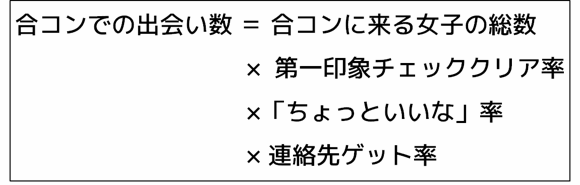
合コンでの出会い数 ＝ 合コンに来る女子の総数 × 第一印象チェッククリア率 × 「ちょっといいな」率 × 連絡先ゲット率
つまり、合コンでの出会いを増やす（成功させる）ためには、
１．できるだけ多くの女子と出会い、
２．第一印象チェックを必ずクリアし、
３．「ちょっといいな」と思ってもらえるトークをして、
４．確実に連絡先をゲットして、
５．全員に連絡したあと、一人に絞り込む。
この五つのポイントをシンプルに意識すればＯＫです。
なお、ここでは一次会のみで終わるシンプルな合コンを例にとって解説しています。二次会まで進む場合には特定の相手とより親密な雰囲気が生まれてくるケースも出てくると思いますので、そういったケースでは本書の第８章で紹介しているアプローチなども参考にしてください。
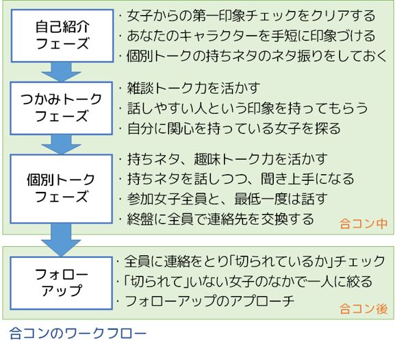
１．できるだけ多くの女子と出会う
これは、できるだけ数多くの合コンに参加することで実現できます。
合コンを開催してくれる幹事役の男の友達を作って、参加した合コンではしっかり場を盛り上げて幹事の期待に応え、「こいつを連れてきてよかった」と思ってもらうことで、次の合コンにも呼んでもらえる信頼関係？を作っていくことですね。
合コンで「勝つ」秘訣 の第一は、実は何よりも「合コン を開いてくれる友達を大切にする」ことにあるのです。
また、そういう男子はたいていモテる男子ですから、一緒に合コンに参加していると参考になることも多いでしょう。
また、合コンに繰り返し参加していると、合コンで知り合って友達コースに落ち着いてしまう女子が何人かできてくるでしょうから、そういった女子と組んで、自分も幹事役になって合コンを開催するようにすれば、さらに出会いの数は増えていきます。
合コンの幹事役というのはそれだけで「人間性の魅力」を発揮できるので、合コンでモテやすい、ということもあります。
２．第一印象チェックをクリアする
合コンというのは、出会いのプロセスを短時間で一気に進めていくような集まりです。
ですから当然、第一印象チェックもあります。
合コンで最初に会った瞬間から最初の自己紹介トークのあたりまでで、女子からこの第一印象チェックを受けることになりますから、清潔感があって健康的で明るい印象を与えることで、確実にクリアするようにしましょう。
これがクリアできないと、せっかくの「裏ルート」も発動しません。
３．「ちょっといいな」と思ってもらえるトークをする
合コンは、三つのフェーズに分けて考えると分かりやすいです。
まず、自己紹介フェーズ。
ここでは、女子から第一印象チェックを受けているということを忘れずに、姿勢を良くして、はっきり女子の目を見渡しながら、明るく滑舌よく話すことを心がけます。
そして、実際に話す自己紹介の中身に、後の「個別トークフェーズ」で話す話題を盛り込んでネタ振りをしておきます。例えばあとであなたが「平家物語についての面白いネタ」についてチャンスがあれば語りたいと思っているなら、「歴史物とか好きでよく読んでます。特に好きなのは平家物語です」と、ちゃんと言っておきます。
このフェーズでは、あなたがどんなキャラクターの人間なのかを、ごく短い時間でうまく説明できることが期待されます。当たり障りのない内容に留まらず、ちょっと印象に残る自己紹介ができるといいですね。
続いて、つかみトークフェーズ。
自己紹介が終わってから最初の30 分くらい、ぎこちなかった雰囲気が抜けて全員が打ち解け、わいわいと盛り上がるようになるところまでの時間です。
ここでは、雑談トークのスキルが問われます。
普段、雑談が得意でなくても、ここはちょっと頑張って、周囲の話題にあわせた雑談トークで場をなごませ、「話が面白い人」とまではいかなくても、「話しやすい人」くらいの印象は持ってもらえるようにしましょう。「あまり話そうとしない、近寄りにくそうな人」という印象になるのだけは避けたいところです。
そして、ちょっと難しいかもしれませんが、この即席の雑談トークの魅力で、「ちょっといいな」女子を作ることにチャレンジするわけです。
また、この段階では話す相手を絞り込まないようにして、できるだけ男女とも、（一対一ではなく）全員が全員と話すような展開を維持するようにしましょう。
そのうえで、どの女子があなたに一番関心を持っていそうか、さりげなく探っていきます。特に、あなたが雑談をしているにも関わらず、自己紹介でネタ振りした持ちネタのほうに自分から食いついてくるような女子は、狙い目である可能性があります。
そして最後が、個別トークフェーズ。
全体的にくだけた雰囲気になり、かつ男女で話す相手が固定されていき、全員対全員というより、一対一とか二対二くらいの小規模な会話グループができる流れに移行していきます。
このフェーズでは、参加者それぞれが、自分の持ちネタを活かしたトークで勝負をかけることになります。
もともと雑談トークが得意な参加者は、つかみフェーズのノリを維持して雑談で話を盛り上げればいいですし、もう少し深い、マニアックなトークを楽しんでもらうこともできるでしょう。
あなたも、「全体」ではなく、個別の女子とのトークを狙っていきましょう。
先ほどのつかみフェーズのなかで、あなたの持ちネタに興味を持っていそうな女子、つまり既に「ちょっといいな」女子になってくれている可能性のありそうな女子の当たりはついていると思いますので、まずはその女子に持ちネタを軽く振ってみて、反応を見てみましょう。
なお、得意分野の持ちネタを使ったトークというのは、ただの雑談トークと比較して、あなたにしか話せないユニークな内容を盛り込めるという強みがある一方で、独りよがりな話になりやすい、自慢話になりやすいといったリスクを抱えている諸刃の剣です。
ただの雑談で盛り上げるよりもむしろ難易度は高いくらいですが、成功すればあなたの印象は相手に強く残るはずです。合コンなどで持ちネタを使ったトークを展開する場合には、次のようなポイントを意識して、「モテる持ちネタトーク」ができるように精進しましょう。
（１）基本は「雑談モード」で。
延々とマニアックなネタを語り続けるのが初対面の女子にとって面白いということはほとんどありえません。
あくまでトークのベースは「雑談」のほうにあって、そこにあなたらしさのスパイスとして持ちネタをまぶしていく、そういうトークを心がけなければなりません。
（２）相手と興味が共有できるように話題を選ぶ。
あなたがどんなにその話題を面白いと思っていても、相手の関心ごとと無関係な話になってしまっては絶対に盛り上がりません。
「平家物語」を例にとるなら、相手が旅行が好きなら平家ゆかりの地や史跡についての話、芸能ネタが好きなら平家物語に関するドラマや映画の話、博物館などが好きなら絵巻物の話、どれにもあてはまらなければ平家物語の面白いエピソードを雑談風に語る（そして雑談トークに戻ってくる）など、臨機応変な話題づくりが必要でしょう。
（３）自慢話にならないようにすること。
自分の得意分野の話というのは、つい「俺はこんなことまでできるんだ／こんなことも知ってるんだ（すごいでしょ）」といった自慢っぽい話になってしまいがちですが、これをやると100 ％嫌われますので、絶対に避けましょう。
（４）相手の女子の「持ちネタ」もちゃんと聞いて盛り上がること。
得意の持ちネタを話し始めると、つい自分ばかり話してしまいがちになりますが、そこをぐっとこらえて、女子が話す時間が全体の半分を超えるようにします。
そのためには、自分のトークをうまく早め早めにまとめて、相手に会話のボールを投げ返し、「聞き上手」になって相手のネタを楽しんで聞けることがポイントです。
そして、この個別トークフェーズの中でも適宜話す相手を変えて、参加メンバー全員と少なくとも一回は話すようにしましょう。
自分の気づかないところに、実は「ちょっといいな」女子がいるという可能性も少なくないからです。
４．確実に連絡先をゲットする
女子の連絡先について、会話の流れのなかで個別に交換しあってももちろん構わないのですが、それだと必ずしも全員の連絡先がゲットできない可能性があります。
あまり会話ができなかった相手のなかに、実はあなたのことを「ちょっといいな」と思った女子がいるかもしれませんから、連絡先はまんべんなくゲットできたほうがチャンスは当然に広がります。
ですから、ここは事前に合コン参加男子のあいだで示し合わせておいて、「合コンの終盤に、全員で連絡先交換タイムをもつ」ことを確認しておきましょう。
そして、誰かがタイミングを見計らって「せっかくだから、連絡先全員で交換しとこうぜ」と言ったら、男子全員が、あたかもそれが当たり前のように、わらわらと全員対全員の連絡先交換を始めてしまうのです。ここで連絡先を交換できていなかった女子の連絡先をゲットし、全員に連絡が取れる状況をつくります。
多少強引な感じになるかもしれませんが、やっているのは連絡先の交換だけですし、女子の側で興味のない男子の連絡先はあとでさっさと消してしまえばいいだけですから、トラブルになる要素はないでしょう。
逆に、「彼のこと、ちょっといいなと思ったけどあまり話せなかったな」という女子がいたなら、この連絡先交換タイムは女子の側にもありがたいイベントになるはずです。
５．全員に連絡したあと、一人に絞り込む
さて、こんな感じで連絡先をゲットした女子に対しては、基本的には全員に、すぐに軽く連絡をとっていきましょう。
大事なことですが、この段階で口説いてはいけません。
もっとシンプルに、合コンが楽しかったことへの感謝とか、合コンで出た話題を軽く振り直すとか、そういう当たり障りのない社交辞令の話題限定です。
なぜかというと、合コンの参加女子は基本的に友達同士だからです。
ですから、この時点で複数を同時に口説いたら、その事実は相手に筒抜けになり、全員から愛想をつかされて終わりになってしまいます。
ですから、最初は軽い連絡のみです。
この最初の連絡の目的は、誰に「切られて」いるかのチェックです。
「切られて」いない相手からは、こちらからの連絡にポジティブな返事が返ってくるでしょう。逆に、「切られた」相手にはすぐ連絡がつかなくなるはずです。
そうやって社交辞令的な連絡を二、三度往復させて、「切られていない」ことが確認できた相手（つまり、その女子が「ちょっといいな」女子です）のなかで、一番脈がありそうな女子とだけ、連絡を続けます。
そうやって一人に絞った後であれば、会話の流れ次第で、個人的に会う約束をするなどのアプローチをすることも、もちろんＯＫです。
対応する出会いのプロセス：プロセス５（二人の関係が徐々にプライベートな関係に移行する）／ゴール（プライベートな関係の究極形として、恋人関係になる）
ここまでのアプローチで、運良く「ちょっといいな」女子を発見して声をかけることができて、空き時間に軽く会話したりする程度の友達関係になったとします。
では、そこからどうやって恋人関係を目指していけばいいのでしょうか。
ここで、改めて思い出していただきたいのが、最初のほうで話した、恋愛における男女の「立場」の違いについてです。
女子は恋愛において、相手をしっかり見極めて選別し、「優秀な子孫」を残すべく行動するという「立場」があります。
一方、男子は恋愛において、できるだけ多くの相手と関係を持つことで「数多くの子孫」を残すべく行動するという「立場」があります。
この立場の違いが、男女の「とりあえず知り合ってから、恋人になるまで」の距離感の大きな違いにつながっていきます。
一般的に男子の場合、女子と知り合ったらすぐに恋愛感情みたいなものが生まれてきて、今すぐにでも恋人関係になりたい、という気持ちが盛り上がっていきます。
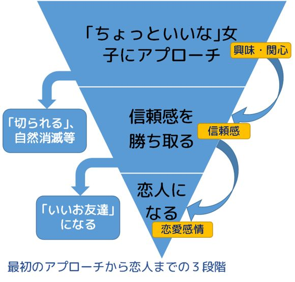
でも、女子の場合はそうでないことがほとんどです。
「ちょっといいな」と思っていた男子からアプローチされて友達関係が始まったとしても、まだその時点での感情は「興味・関心」であり、「とりあえずもう少し話をしてみよう」といったレベルに留まります。
先ほどの「女子の立場」の話でいうなら、男子と友達になって外見だけでない内面も見えるようになったこの段階で、女子は（子孫を残すときに）「ちゃんと最後まで協力してくれる」だけの信頼できる内面をもった男子かどうかを改めてチェックしている、ともいえます。
だから、恋人になるためには、「相手への『興味』が『信頼感』に変わる（そのあと、恋愛感情になる）」という、男子よりももう一段階多いステップが必要になるのです。
ここで、繰り返し登場している、四つの軸のパブリックとプライベートという区分について、改めて考えてみる必要があります。
「ちょっといいな」女子との最初の出会いをクリアした時点では、まだ二人の関係は、この四つの軸について、すべてパブリックの側にあります。
場 ：まだ学校と、せいぜい下校路くらいのパブリック的な場でしか会っていません。
魅力：お互いの魅力のうち、パブリックな魅力を「ちょっといいな」と想っています。
関係：まだホンネを明かさない社交辞令のやりとりをしている、パブリックな関係です。
顔 ：お互いに、身だしなみを整えたよそいきの相手の姿＝パブリックな顔しか見ていません。
この状態のまま、いくら会う回数だけを増やしても、二人の関係が「ただのお友達」以上になりっこないことは、すぐに分かると思います。
この「ただのお友達」状態から、女子からの信頼感を勝ち取って恋人関係に到達するためには、先の四つの軸の「パブリック」をすべて「プライベート」のほうに置き換えていくことが必要になるのです。
そして、このパブリックからプライベートへの置き換えには、どうしても男子から女子へのかけひきが必要になってきます。
なぜかというと、
（１）この置き換えは基本的に男子の仕事であること。
四つの軸のパブリックをプライベートに置き換えていくこの仕事は、基本的に男子の担当です。男子の側がデートに誘ったりすることで、パブリックな側にある二人の関係を、プライベートな側に徐々に移していく主導権を握ることになります。
（２）ところが、その置き換えにゴーサインを出すのは女子の役割であること。
置き換えの誘いをかけるのは男子の側ですが、その誘いを受け入れてプライベートな方へ一歩踏み出すか、まだその時期じゃないからと言ってＮＧを出すかの決定権は、主に女子の側にあります。
（３）置き換えのペースが早すぎても遅すぎても失敗すること。
この置き換えの提案があまりに急ぎすぎて拙速だと、女子の側で毎回ＮＧを出すはめになって、あっという間に関係がぎくしゃくして壊れてしまうでしょう。いわゆる「男子が焦りすぎ」というパターンです。
一方、ペースが遅すぎると関係進展が止まって、自然消滅とか「いいお友達」コースに移行してしまって、恋人になることに失敗します。
（４）ストレートに誘いすぎると、置き換えに失敗しがちであること。
ここでいう置き換えとは、端的に言えば「今よりも親密な関係になりませんか？」という誘いです。
ところが、実際にこのようにダイレクトにことばで誘ってしまうと、相手にとって非常にイエスと答えにくい状況を作り出してしまうことがあります。誘うにしても工夫が必要なのです。
つまり、男子の側は、自ら主導権を握って、二人の関係をプライベートの側に近づけるような誘いを女子に対してかけ続ける必要があり、かつ、その誘いは、絶妙なペースを常に維持して、相手の女子がぎりぎりＯＫできるものであり続ける必要があり、さらにその誘いにあたっては、ストレートな言葉をぶつけるよりも「答えやすい」ような工夫を講じる必要があるのです。
これはまさに、かけひき以外の何者でもありません。
ここまで、できるだけこういった「かけひき」抜きで出会いを攻略する方法を書いてきましたが、この段階、つまり知り合った女子との関係を友達から恋人にランクアップさせるプロセスでは、どうしても男子から女子へのかけひきが避けられないのです。
二人の関係がパブリックなものからプライベートなものへと移行する、というのは、社交辞令とタテマエで自分を守りながらやりとりをする関係から、ありのままの自分をさらけ出して、ホンネでぶつかる関係に変わっていくことを指しています。
これは、女子からあなたへの感情が、「関心（＝ちょっといいな）」から「信頼感」に変わっていくことでもあります。
そして、あなたへの信頼感が生まれれば、あとはタイミング次第でさらに先にある「恋愛感情」にも進展していく可能性が出てきます。
では、知り合って友達関係のできた女子から、関心を超えた「信頼感」を勝ち取っていくためには、どうしたらいいでしょうか。
もちろん、あなた自身の内面を磨くことが大前提になりますが、それができていても、ただ一緒にみんなと遊んでいるだけでは、その内面の魅力を発揮する場面自体が作れません。
ですから、簡単にいうと「信頼感につながるような、深いコミュニケーションができる関係（＝プライベートな関係）を作っていく」ことが必要になります。
でも、これは典型的な「にわとりと卵」の関係ですね。
信頼感を勝ち取るためには、プライベートな関係を作らなければならない。
プライベートな関係を作るには、信頼感が生まれていなければならない。
この矛盾を解決するには、段階を刻んで少しずつプライベートな関係を作っていき、そこで少しずつ信頼感を勝ち取っていくというスモールステップ作戦をとるほかありません。
つまり、いちどできた友達関係に満足せず、相手の女子にアプローチを続けて、少しずつプライベートなデートができる関係に持ち込んでいくことが必要になるわけです。
ここでは、「細かく」刻む、ということが大切になってきます。
いきなり、いまの関係とかけ離れた親密なデートに誘っても、間違いなく拒絶されます。
まだ放課後に一緒に帰る程度の関係なのに、いきなり宿泊つきの旅行に誘っても、ＯＫされるわけがないですよね。
放課後一緒に帰る、という関係の次は、たとえば「放課後、一緒に帰るついでに寄り道する」という誘いをかけます。そしてそれが当たり前になれば、「休日の買い物に付き合う」くらいに進めてもいいかもしれません。
では、どうすれば「いきなり多くを求めすぎて拒絶される」ということを避けて、二人の関係を「細かく」刻んで進展させていくことができるのでしょうか？
それには、デートで二人が共有している領域をいくつかの要素に分けて、それを少しずつ広げていく、という視点を持つのがいいでしょう。
学校生活のなかで、あなたと、知り合いになったばかり女子とが共有している領域というのは、最初は、
・平日の昼間に、
・学校の中で、
・一回５分とか10 分程度の、
・雑談をする程度の関係。
くらいだろうと思います。
平日の昼間に学校にいる、というのは、別にあなたがその女子と知り合っていなくても、最初から共有されていることです。だからまったく特別ではありません。
同じように、５分や10 分程度の雑談というのは、状況によってはお互いにほとんど面識がなくても発生するイベントですから、これもそんなに特別なものではないですね。
でも、ここから、二人が共有する領域を広げていくと、それはどんどん特別なものになっていきます。
たとえば、「平日の昼間」というところ。
・平日ではなく、休日に会う。
・昼間ではなく、早朝とか夜に会う。
こんなイベントがあれば、「特別」度が上がりますよね。
当然、「学校の中」というところも、
・一緒に帰る。
・帰りにどこかで寄り道して遊ぶ。
・地元のどこかに遊びに行く。
・遠くに旅行に行く。
と進んでいくごとに、どんどんふたりの関係が特別なものになっていくことが分かります。
そして言うまでもなく、会話の時間が五分や一〇分ではなく一時間や二時間、場合によっては五時間や六時間となってくれば、それだけで二人の関係の深まりは明らかです。
さらに、「雑談」については三つに分かれます。
ふたりで一緒にすることが、雑談から「ランチ」「買い物につきあう」「映画を見る」といったものに、さらには「遊園地に行く」「旅行に行く」のようにより個人的なイベントに広がっていけば、それは当然二人の関係の進展を意味します。
また、会話の内容ということで考えると、当たり障りのない「雑談」ではなく、プライベートな相談事や恋愛についての話、将来の夢みたいなものに話題が切り替わってくれば、それもまた、二人の関係がより特別なものになっていくしるしだと言えます。
そして三つめとして、物理的な「距離」というのもあります。
雑談する距離、というのは普通の友達の距離ですから、二人の距離はたぶん１メートルくらい離れています。
これが、たとえばレストランで横並びの隣に座る、となると約半分の45 センチくらいになりますし、デートをして手をつなげば、15 センチくらいの距離感になっていくでしょう。
45 センチを切る距離感というのは、相当に親密な関係を意味することになります。
これを全部組み合わせたら、どうなるでしょうか？
「休日を使って泊まりがけで遠くに旅行して、互いの息がかかるくらい近くに寄り添って、夜遅くまでふたりでプライベートな深い話を何時間でも飽きずに続けている」
もうこれは、恋人同士がやることにしか見えませんね。つまり、二人が共有する領域がものすごく広がった状態というのが恋人関係なんだ、という風にも考えることができるわけです。
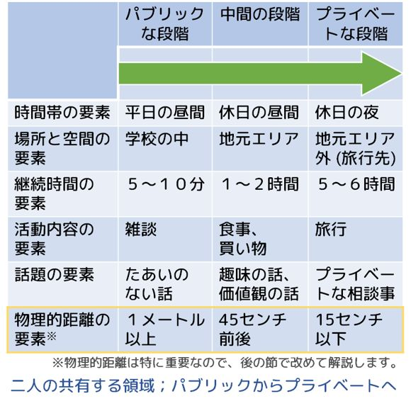
こんな風に、二人の関係がどのくらい親密で特別かというのは、二人が共有している領域が、どの要素についてどれくらい広がっているかということで整理することができ、そのことを意識すれば、二人の関係、親密度を「細かく刻んで」深めていく作戦も練りやすくなるでしょう。
１．時間帯の要素
平日だけの関係か、休日もか。
昼間だけの関係か、早朝や夜もか。
２．場所と空間の要素
学校の中だけか、学校の外もか。
ただ移動するだけか、どこかに留まって時間をつぶすか。
通学路の範囲だけか、地元エリア内か、さらに遠い（旅行）エリアまで広がっているか。
３．継続時間の要素
５分、10 分といった短時間か、より長い時間か。
４．活動内容の要素
ただの雑談か、一緒に遊びに行ったりするのか。
５．話題の要素
ただの雑談か、よりプライベートな話題か。
６．物理的距離の要素
１メートル程度離れているか、45 センチ以下まで近づいているか。
なお、この「物理的距離の要素」は特に重要なので、後の節で改めて解説します。
そして、現時点で、あなたが意中の女子とどの要素についてどこまで共有領域を広げられているかをふまえて、まだ開拓できていない共有領域を少しずつ広げていくようにすればいいわけです。
二人の関係の進展を、二人が共有する領域の要素に分解し、それを細かく刻んで広げていくという視点を持つことで、相手に拒絶されにくい「次のステップ」を考えやすくなったと思います。
でも、これでもまだ、相手に誘いをかけてＯＫをもらうのはあまり簡単ではありません。
例えば、今まで学校の帰りに話すだけだった相手に、「こんどは休日にデートしよう」とストレートに誘いをかけても、「え、どうして？」と驚かれてしまって、やんわりとノーを返されるのがオチでしょう。
では、どうすればいいのでしょうか？
実は、もうすでに答えは書いています。
先ほど、相手の女子に唐突に誘いをかけたら、きっと相手からは「え、どうして？」という質問の形でノーが返ってくるだろう、と書きました。
だとすれば、その質問に先回りしてしまえばいいのです。
つまり、「理由をつけて誘う」というやり方をとれば、いいわけです。
たとえば、「一緒に帰る」ということを新たにやりたいのであれば、「ちょっと○○を買わなきゃいけないんだけど、どういうのがいいか分からないから、一緒に選んでほしいんだ」とか、「新しくできた帰り道のアイスクリーム屋、入ってみたいんだけど男一人だと入りづらいから、付き合ってくれたらおごるよ」とか、そういう理由をつけて、それで「一緒に帰ろう」という本来の目的を少し後ろに隠すわけです。
いや、実際は、隠れてないですよ。
たぶん相手の女子からみると、「彼は私と一緒に帰りたくて、理由をあとから作ってるのかな」って、バレてます。
でも、それでいいんです。
そうやってバレている状態であっても、その女子が、あなたと一緒に帰るような関係になってもいいかな、もう少し関係を前に進めてもいいかな、と思っていれば、気づかないふりをして、「うん、わかった、じゃあ一緒に行こう」と言ってくれます。
もし、少し反論されて、「どうして私とじゃなきゃいけないの？」みたいなことを言われた場合は、「できればお願いしたかったんだけど、だめかな？」と、逆に質問で返して受け流してしまうのがいいです。
あるいは、かけひき返しとして、「そんなこと言ってるけど、ほんとは一緒に帰りたいだけでしょ」と、意図を探るような返事が来ることもあるでしょうが、これに対しては、とぼけて「そんなことないよ、本当に○○したいだけだよ」と返せばいいでしょう。逆に、あえて「実はそうなんだ、ちょっといいなと思ってて」と軽い感じで素直な気持ちを返すのも、状況によってはもちろんありです。
でも、そうやって当たり障りのない受け答えをしても、まだそれに対して反論されてしまうような場合は、残念ですが、相手からノーを返されたのだと自覚しましょう。まだ関係を前に進めるタイミングではなかったということです。
「ごめん、変なことお願いして悪かった、今回は俺一人で済ませるよ」とか何とか言って、引き下がりましょう。
そして、休みの日に会うというのも作戦の基本は同じで、たとえば「見たかった映画が今度の週末から始まるんだ、たしか興味あるって言ってたよね、一緒に行こうよ」と「理由をつけて」誘えばいいでしょうし、さらに進んで「自宅に誘う」というときも、「最近○○の料理を作るのにハマってるんだけど、味に自信がないから味見しにきてよ」とか、「こないだ見たいって言ってた映画のブルーレイがあるんだけど、一緒に見よう」といったように、あなたの家に来る「理由」がまず必要でしょう。
この例で分かるとおり、恋愛のかけひきといっても、そんなに難しく考える必要はありません。
恋愛関係を次のステップに進める誘いに対して、女子は正面からイエスと答えにくい心理をもっていることもあるので、もっともらしく理由をつけてその理由を言い訳にできるようにして、イエスと答えやすいように誘う、というだけです。
そういう、いかにもな男子からの誘いに対して、女子は女子で、その理由を素直に信じているふりをして、イエスを返してくる。そういうお約束のやりとりがかけひきだと考えれば、それで十分だと思います。
よく勘違いするポイントですが、うまいこと言って相手を騙 そうとするのは、かけひきではありません。相手の意思を無視して強引に話を進めるのも、かけひきではありません。
先ほど、二人が共有する領域をいくつかの要素に分け、それを広げていくことで親密度を増していくという話をしましたが、これらの要素のうち、もっとも「恋愛感情」とダイレクトにリンクしていて、だからこそデリケートな扱いが必要になるのは、どれだと思いますか？
それは、最後に出てきた「物理的距離」です。
あなたが、相手の女子との距離をどのくらい短く詰めても拒絶されないか、ということが、相手の女子があなたのことをただの友達程度にしか思っていないか、それともそれ以上の感情を持っているかを示す、大きなヒントになります。
人には、「パーソナルスペース」というものがあります。
これは、他人からそれ以上近づかれると不快に感じる空間のことで、個々人ごとの周囲に同心円状に広がっています。これをさらに分類すると、次のようになります。
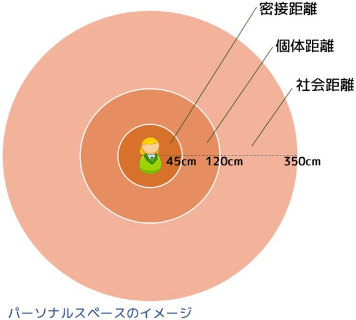
密接距離（０〜45 センチ）
相手に触れられる距離。ごく親しい相手にしか入ってもらいたくない距離。
個体距離（45 〜120 センチ）
相手の表情が読み取れる距離。知人であれば入られても不快ではない距離。
社会距離（120 〜350 センチ）
会話ができる距離。知らない人と会話するときの距離。
この三つを、出会いの各段階の距離感と対応させると、このようになるでしょう。
社会距離：まだ知り合う前のパブリックな場での距離感。
個体距離：知り合い～友達の距離感。
密接距離：プライベートな場での、友達以上〜恋人の距離感。
例えば合コンの席などで、この女子ともう少し親密に話したいな、と思ったときには、「密接距離」の中に入ってみる、つまり向かい合って座っているところから隣の席に移動してみる、というのが分かりやすいアプローチです。
これによって、相手の女子にも「あなたがアプローチを仕掛けている」ということがかなりはっきり伝わります。
なお、合コンのような「出会いがお膳立てされた場」では、これをやっても露骨に拒絶されることは少ないと思いますが、少し注意してみれば、相手の女子がその距離感を素直に受け入れているか、警戒心のアンテナを立てて少しでも距離をとろうとしているか（＝拒絶されているか）が分かると思います。
また、デートをする関係になった女子と、今までより踏み込んだ親密な関係を狙いたいときも、雰囲気が一番盛り上がったタイミングで「距離をもう一段詰めてみる」というアプローチが分かりやすいです。
デートをするくらいですから、既に二人はお互いに「密接距離」には入っているでしょう。すぐ隣に並んで歩くとか、レストランなどで隣同士で座るとか、そういう距離感です。もしそれがまだできていないなら、まずその距離に入るところから。
もうその距離に入っていて、かつ、社交辞令ではないホンネで語り合えるような「信頼感」が二人の間に生まれているのであれば、次は、デートの雰囲気が一番盛り上がった瞬間に、「手をつなぐ」「肩を抱く」「息がかかるくらいの距離で話す」といったさらに近い距離に、さりげなく入ってみることです。
もしもその距離にうまく入ることができて、相手からも拒絶されなければ、その後にどういったアプローチをしかけるチャンスが続いているのかは、言うまでもないでしょう。
女子を「口説く」というと、何となく告白っぽい話を続けて説得するような印象がありますが、実際にはそうではなく、魅力的な会話や楽しいデートで雰囲気を盛り上げつつ、最高のタイミングで「物理的距離」を段階的に詰めてみる、そういった具体的な行動を含めたかけひきが、「口説く」ということなのですね。
このような段階的なアプローチをうまく重ねていければ、二人の間にある感情も「信頼感」から「恋愛感情」にランクアップしていくでしょう。
なお、この「物理的距離を詰める」ということについては、いくつかの留意事項があります。
まず、当たり前ですが、距離を詰めてみて相手から拒絶されたら、「ルール」にしたがってスマートに引き下がること。
距離を詰めるというのはかなり攻撃的なアプローチだということを忘れてはいけません。ですからこのアプローチは、既に相手とかなり親しくなって、相手からの「関心」が「信頼感」に変わってから、初めて試みることができるものだと考えたほうがいいと思います。
そして、物理的距離を詰めるときにあまり言葉に頼らないこと。
つまり「近づいていい？」と聞いて「いいよ」と答えてもらう、そういうものではありません。これをやるとコントになります。
そうではなく、雰囲気が盛り上がってチャンスだと判断したらさりげなく実際に近づいてみて、そのときの相手のわずかなリアクション（警戒心のアンテナを立てたか、距離を離そうとしたか）から、さらにもう一段近づくか近づかないかを決める、そういう「ことばを介さないコミュニケーション」が必要です。
ただし、相手の「心」を読む必要は必ずしもなく、あなたは「距離を詰める」という目に見える行動をとるだけですし、それに対する相手の反応も、その近い距離を受け入れるか、拒絶して離れようとするかの違いとして、目で見て分かります。
また、距離を詰めるアプローチの途中で、そのことについて会話が始まることがあります。
例えば、「え、どうしたの......？」とか「......びっくりした」みたいな投げかけですね。
こういう展開になれば、ちゃんとあなたの最初の「ことばを介さないアプローチ」は相手に伝わり、かつ、相手はそのことについてことばでコミュニケーションしたがっている、ということになりますから、そこからは会話（ことば）で、あなたの想いを誠実に伝えていけばいいと思います。
最後に、まだ親しくない出会いの段階でも、この「物理的距離」に敏感になることです。
人によっては、このパーソナルスペースの感覚が人とは異なるために、まだ親しくないうちに不用意に他人のパーソナルスペースに入ってしまって、相手に不快感や警戒心を持たせてしまうことがあります。
まだ知り合う前の相手とは「社会距離」で接し、知り合っても友達のうちは「個体距離」で接し、いよいよそれ以上に親密になろうというとき、あるいは合コンなどでアプローチをしかけるときには意識をして「密接距離」に入る（そして拒絶されたら「個体距離」に戻る）、そういう日常生活のなかでの距離感の使い分けも、大切なことです。
このように、二人の関係を深めていくためには、二人が共有している領域をパブリックな領域からプライベートな領域に少しずつ広げていくことが重要なのですが、この視点を一回ごとのデートのなかでも同じように持つことがとても大切です。
たとえば、あなたがこんな休日デートをプランニングしたとしましょう。
１．最初に、最寄り駅で待ち合わせをする。
２．そこから一緒に電車に乗り、ターミナル駅まで移動。
３．ファーストフードでお茶する。
４．映画を見たあと、いくつかの店で買い物。
５．いい雰囲気の店でディナーを食べる。
６．ターミナル駅に移動。
７．電車に乗って最寄り駅まで戻る。
８．最寄り駅で解散。
ごく普通のデートの流れに見えますが、このデートプランには一点、大きく欠落している視点があります。
そのために、このデートは明らかに「ただのお友達」モードのデートになっており、しかもこのままではなかなかここから一歩進んだ恋人関係に移行するチャンスが生まれません。
デートプランを考えるときに、もつべき視点とは、
デートプランのイベントごとの「プライベート度」とそのつながりを意識すること
です。
デートというのは、プライベートな関係になった二人がプライベートな関係を楽しむイベントですから、デートプランで並んでいるイベントは、先に進むにつれて徐々にプライベートな領域に踏み込んでいくものになっていることが望ましいです。
そういう視点で、先ほどのデートプランのイベントを整理しなおしてみましょう。
１．最初に、最寄り駅で待ち合わせをする。
２．そこから一緒に電車に乗り、ターミナル駅まで移動。
ここまでは完全に「パブリックな場」であり、プライベート度はほぼゼロです。
二人は会話を交わしたりするでしょうが、あくまでも移動を目的としたパブリックな場（駅・電車）での、パブリックな顔での会話に留まってしまうでしょう。二人の距離も遠いはずです。
３．ファーストフードでお茶する。
４．映画を見たあと、いくつかの店で買い物。
少しだけプライベート度が上がって、多少親密な会話を、少し近い距離で交わすことができるようになります。ややリラックスした雰囲気になり、心理的な距離感も近づくでしょう。
それでもまだこのあたりは、ただの友達同士でも一緒に遊べる程度の、まだまだパブリック度の高いデートイベントだと言えます。
５．いい雰囲気の店でディナーを食べる。
ここでようやく、親密な二人のデートっぽくなってきました。
十分にリラックスした雰囲気で、ファーストフードでお茶するときよりもずっと近い距離で、そういった場所では話せないようなプライベートな話題をじっくりと話すこともできるでしょう。照明を落とした暗い空間では周囲も見えにくくなり、そういった雰囲気も場のプライベート度を増してくれます。
６．ターミナル駅に移動。
７．電車に乗って最寄り駅まで戻る。
８．最寄り駅で解散。
デートのプライベートな雰囲気は一気に消え、完全にパブリックな場に戻ってきます。
二人の距離もパブリックなそれに戻り、デートが終わります。
......お分かりでしょうか。
このデートプランでは、せっかく５．でプライベートな領域に踏み込んでいた二人のデートが、いきなり６．で一気にパブリックな領域に戻り現実に引き戻される、そういう展開になっているのです。
しかも、７．の電車移動はそれなりに時間がかかりますから、５．でいちど盛り上がった二人のプライベートな雰囲気は、この７．の移動時間の間に完全にさめてしまうでしょう。
ですから、このデートプランにおけるデートは、５．で実質的に終わっています。
６．以降は、単に自宅に戻るという目的のための事務的な行動になっていると言っていいでしょう。
このデートプランの問題は、パブリック・プライベートへの配慮に乏しいために、「いま以上の親密な関係」を狙えるチャンスがつぶされてしまっているところです。
いま以上の親密な関係を狙う、というのは、それまで以上にプライベートな領域に踏み込む、ということですから、先の「刻む」という考え方からもわかるとおり、その時点で踏み込める一番プライベートな領域にいるときに、相手に対して「さらにもう一歩踏み込んでみようよ」という誘いをかけることで初めて成功します。
あなたはもしかすると、８．の最寄り駅で解散のところで、「このまま君の家に行ってもいい？」（あるいは「このまま俺の家に来ない？」）と誘いをかけて「いま以上の関係」を狙うつもりかもしれませんが、６．から８．の過程でさめてしまった女子にその誘いを受け入れてもらうのは、相当にハードルが高いでしょう。
それでは、誘うタイミングが悪すぎるのです。
ですから、このデートプランには改善の余地があります。具体的には、
５．の「いい雰囲気のお店でディナー」の次に、もう一段階「プライベート」に踏み込めるイベントを盛り込めないだろうか？
ということを考えましょう。
例えば、「一緒に夜景を見る」というイベントを追加することを考えてみます。
最初から、５．で選ぶレストランを夜景スポットの近くのお店にしておいて、食事が終わるころに、「このお店から歩いてすぐのところに、きれいな夜景が見える場所があるらしいんだけど、せっかくだから帰る前に見に行こう」と誘うのです。
これなら、二人の関係はお店を出た後もプライベートなままで、現実に引き戻されずにいい雰囲気が続きます。そして夜景を見ながら、手をつないだりすぐ隣に座ったりして、「物理的距離」を今までよりも縮めるアプローチを試みることもできるでしょう。
もし、「これから俺の家に来なよ」と誘いたいなら、誘うタイミングはここです。
ただ、これでイエスという答えをもらえても、やはり最寄り駅までの電車移動という「パブリックな場」を経由すると、雰囲気がクールダウンしてしまうでしょう。
ですから、イエスという答えがもらえたら、そのいい雰囲気を断ち切らないためにタクシーに乗ってしまうというのもいい方法です。
もちろん、そもそも「家に帰らない」という選択肢もありますが、そのあたりは雰囲気の盛り上がりや二人が選べる選択肢の範囲を考慮して、臨機応変に。
※さらに言うと、例えば一人暮らしで住む場所を探すとき、最初から、デートに使えそうな街の近くを選んでおくという戦術もあります。
ともあれ、会うたびに関係を深めていけるようなデートプランには、「起承転結」が必要です。
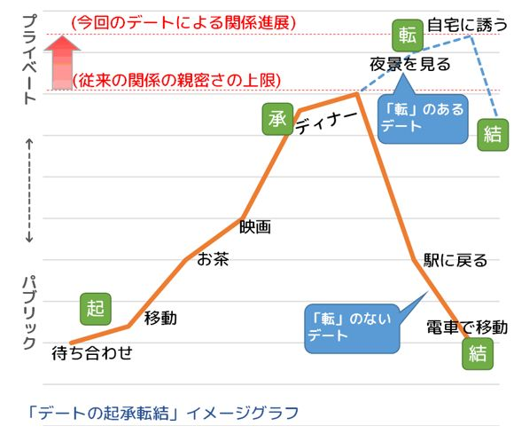
起：デートスタート。パブリックな場所で、二人が待ち合わせて出会うところから始まります。
承：デートのイベントを進めていくうちに二人は打ち解け、既に経験済みのいちばんプライベートな関係にまで二人の距離が縮まって、いい雰囲気に。
転：二人の関係が今までよりさらに一歩踏み込んだものになるような、新しい誘い、アプローチ、サプライズイベント。
結：一歩深まった関係の余韻を残しつつ、二人がパブリックな「場」に戻ってきて、デート終了。
デートプランを考えるときは、このような、パブリック・プライベートということを意識した起承転結の流れ（特に「転」の部分）を意識するようにしましょう。
ここまで、恋愛の「かけひき」について述べてきましたが、このかけひきを駆使するにあたっては、絶対に理解しておかなければならないことがあります。
かけひきには、ホンネとタテマエを使い分けて何かに誘ったり、まずサイン的な「行動」をとって、それに対する相手のリアクションで相手の意思を確認するといったことが含まれます。
これを言い換えると、相手の意思を完全には確認できていない状況のもとで、より親密な関係へのアプローチを仕掛けている、ということでもあります。
ですからここに、リスクがあるのですね。
つまり、あなたは相手がイエスと答えていると判断したけれども、実は相手の本心はノーだった、という状況に陥るリスクです。
例えば、あなたが「見たいって言ってた映画、借りてきたからうちで見よう」と言って、交際している女子を自宅に誘ってＯＫをもらったとします。
このとき実はあなたには下心があって、この自宅デートでキスやセックスのチャンスがあるかも、と思っていたとしましょうか。
あなたはきっと、相手の女子は自宅で二人きりになることを承諾したんだから、内心ではそういった展開になりうることも想定してるんじゃないか、と期待するでしょう。
あなたのその推測は、正しいかもしれませんし、間違っているかもしれません。
先のやりとりには確かに「かけひき」の要素が含まれているので、二人が表面的にやりとりした以上の「意味」がそこに含まれているかもしれないと期待すること、それ自体はおかしなことでもないでしょう。
でも、正確なところは分からないわけです。
正しい答えを知るためには、どうしたらいいでしょうか？
ここでまた、どこかの恋愛マニュアルを持ってきて、「こういう状況・こういう態度ならＯＫサイン」みたいな「女心」を探りたくなるかもしれませんが、それは間違いです。
なぜなら、そんないい加減な手がかりで判断しても、結局正解が得られないリスクはそのまま残ってしまうからです。
正しい答えを得る、シンプルな方法があります。
こういうときこそ、相手に直接聞けばいいのです。
「直接」といっても、必ずしもことばに頼る必要はありません。
自宅に来て実際に映画を見て、何となくいい雰囲気になってきたら、たとえばまず、すぐ隣に座ってみる。じっと見つめてみる。手を握ってみる。おでこをくっつけてみる。
こういう風に段階的にアプローチをして、それぞれの段階ごとに、相手がそれに対してリアクションをとれるような時間的な余裕、プレッシャーのない「間」を少し入れるんですね。
いきなり段階をすっ飛ばして押し倒したりするのでもなく、ノーと言えないようなプレッシャーを与えて畳みかけるように迫るのでもなく、段階をふんで「間」を入れながら、どの段階でも相手が自由意志でノーと言える、そういう流れのなかでアプローチしていけばいいと思います。
そして当然ですが、どこかの段階でノーと言われたら、「ルール」に従って誠実に引き下がりましょう。
また、このアプローチのどこかの段階で、相手から話しかけられて、あるいはあなたが話しかけることで、会話が始まることもあります。というか、最後の最後まで会話がないことのほうが珍しいでしょう。
そうなったら、しっかりことばでお互いにコミュニケーションしましょう。もうこの段階では、守るべきタテマエなどどこにもないので、ホンネで誠実に語るのみです。
とにかく大切なことは、「かけひき」というのはふたりのコミュニケーションをスムーズにするために補助的に活用するものであって、本来あるべきコミュニケーションを省いてしまうためのものではない、ということです。
関係進展の導入部分として「かけひき」を使うことはあっても、いよいよあなたが相手のよりプライベートな領域に実際に踏み込んでいくときには、必ず相手の意思を確認しながら少しずつ進み、そこでの相手の自由意志を100 ％尊重しなければなりません。
ノーと言われることがダメなのではありません。
本当はノーなのに、その声を聞かずにイエスだと勘違いして間違って前に進んでしまって、相手を傷つけてしまうことがダメなのです。
「女心」を勝手に推測したりしないで目の前の女子にちゃんと聞く、というこれまで何度も登場した原則が、この場面でも、というよりこの場面でこそ、本当に大切になります。
さて、ここまで、知り合った女子に積極的にアプローチして、友達関係を越えて恋人関係になるための方法について触れてきましたが、人によっては、女子との出会いを必ずしもそんな風にとらえていない方もいるのではないかと思います。
つまり、出会ってからの関係の進展はある程度なりゆきに任せて、恋人になれる相手ができればそれはそれでいいし、そうでなくても友達になれればその友達関係を大切にしたい、必ずしも恋人関係にこだわらない、といった価値観です。
ここまで、「いいお友達」という関係について、恋人関係になることに失敗した残念コース扱いしてきましたが、実際には「いいお友達」という関係にも素晴らしい点がたくさんあります。
・友達として会話したり遊んだりできます。ある程度親しい関係が築けているのであれば、たまには週末のデートくらいできるでしょう。
・女子とのネットワークができるので、そこからグループで遊んだり合コンしたりといったチャンスも生まれます。そういったネットワークの中から、新たな出会いが生まれることもあるでしょう。
・いい「お友達」なら複数いても問題ないですし、その女子以外を恋人関係前提に追いかけたとしても「二股」とはみなされないでしょう。（そうみなされるなら、逆にそれは「友達以上」ということです）
仮に特定の恋人がいなくても、たまにデートしたりグループで遊べるような「お友達」が何人かいたりすると、プライベートはそれなりに充実したものになりますし、意外と周囲からもモテているように見えたりするものです。
そして、そういった関係のなかで女子との会話にも慣れていけば、その後の出会いの成功確率も上がっていくと思います。また、いったん「いいお友達」に落ち着いたあと、しばらくして改めて関係が進展して恋人になる、といったこともときどき起こります。
ですから、恋人関係を目指していて、結局「いいお友達」になってしまったという関係も大切にしたほうがいいと思いますし、恋人関係になることにこだわらずに女子と付き合った結果、「いいお友達」が何人もできてしまったという展開も、それはそれで悪くないものです。
もしも本気で恋人関係を目指すのであれば、個人的にデートするくらいの関係になって以降は、そのデートを毎回「デートの起承転結」の「転」のある展開にして、最初の数回のデートで相当近しい関係になるくらいのスピード感をもつことが、成功の一つのカギになります。
でも、もしそういったガツガツしたデートを好まないのであれば、無理にあなたのキャラを変えようとせず、のんびりと自分なりのペースでデートを楽しんでも、それは全く構わないと思います。それがあなたのスタイルだということですから。
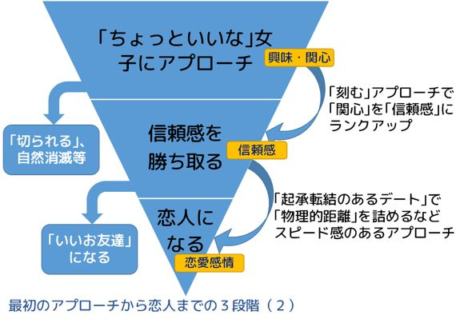
ただ、そういうのんびりしたスピード感でデートをやっていると、「いいお友達」になってしまう可能性は高まる、ということは知っておきましょう。
恋人になりたいと思いながら数多くの女子と何度もデートをしているのに、毎回「いいお友達」になってしまう方は、このスピード感の部分について、少し自分を振り返ってみてもいいかもしれません。（なお、「いいお友達」になるのではなく、一回・二回のデートで「切られて」連絡がつかなくなる場合は、スピード感ではなく「相手の信頼感を勝ち取れていない」という別の問題です。）
コラム：男女間の友情について
恋愛関係に至らない「いいお友達」みたいなテーマになると必ず出てくるのが、「若い男女の間に友情は成立するのか？」という議論です。
これについてはいろいろな立場があると思いますが、私はシンプルに、「成立する」と考えていいのではないかと思っています。
話がややこしくなるのは、恋愛感情には性欲がリンクしていて、友情には性欲がリンクしない（リンクしてはいけない）、みたいな二分法的な価値観のせいではないでしょうか。
友情が成立している相手に性欲を感じることがあっても、それ自体は内心のことなので、何も問題はないはずです。 仮に感じていても、それを相手の合意なく暴発させないようにコントロールしていればいいだけですし、それは「友達」だけではなくすべての人間関係において当たり前のことです。 そのうえで、相手の女子との「友達関係」を楽しい、意味があると思えるのであれば、そこに友情は普通に成立していると、私は思います。
それでも問題がある、と考えるのであれば、それは友達という距離感の相手に性欲を感じたらそれを相手にぶつけずにはいられなくなる、そういう男子側の性欲コントロールの失敗にあるのであって、友情云々とは別の問題のように思います。
十分に親しい（でも恋人ではない）友達関係になれれば、逆に率直に、私は異性としてあなたに性欲を感じる瞬間もあるけど、合意なくそれを出そうとは思わないし、そのうえで友達として一緒に遊ぶことを楽しいと思っている、と伝えられると思います。 そうやって表明しても関係が壊れないような信頼関係が築けているのであれば、普段は友達として遊んで、ちょっと雰囲気がいいときにたまに口説いてみたりする（でも毎回断られる）、みたいなハイブリッドな関係はいくらでも作れます。
恋人になってもお互いにいろいろ隠しながら化かしあうような関係になってしまうこともある一方で、「友達」どまりでも、リラックスして何でもホンネで語り合える関係が生まれたりすることもあります。 そんな「友達」の関係というのも、なかなか素敵だと思いませんか？ |
先に、二人の関係を友達から恋人に移行させるために必要な、パブリック／プライベートの四軸（場、魅力、関係、顔）について触れましたが、実はこのなかに一つ、とんでもないものが混じっています。
それは、
パブリックな魅力からプライベートな魅力への移行
です。
こちらはすでに一度登場したチャートですが、改めて掲載しておきます。
最初に知り合うまでの段階では、ルックスや雑談トークといったパブリックな魅力だけが見えているので、二人はお互いにその部分に惹 かれあって交際が始まります。
でも、一度知り合った後、そこから「恋人」に至るどこかの段階で、ホンネの部分での価値観に共感できる、互いに人間的に尊敬できるといったいわゆる内面の魅力、プライベートな魅力に惹 かれあう関係に移行することになるわけです。
これ、冷静に考えればとんでもないことですよね。
なぜなら、「交際を始める」きっかけとなった魅力とは全然違う魅力を好きになれるかどうかで「恋人になれるかどうか」が決まるということですから。
たとえば、インターハイ優勝の経験をもつアスリートが、その活躍を「ちょっといいな」と思ってくれた女子にアプローチして、交際が始まったとします。
でもそこから、そのアスリートの彼が相手の女子と恋人になるためには、「アスリートとして活躍した」というパブリックな魅力は、実はあまり役に立ちません。
そうではなく、そのアスリートの彼は、自分自身の内面の魅力、プライベートな魅力をしっかり相手に示して、そちらで改めて相手からの好意と信頼感を勝ち取り直していかなければならないのです。
それができないまま、パブリックな魅力だけで押し切ろうとすると、二人の関係はどこかでそれ以上プライベートな方向に進展しなくなり、「いいお友達」コースをまっしぐら、ということになってしまうわけです。
この「いいお友達」コースは、もともとのパブリックな魅力が、「雑談トークが面白い」だった場合に、特によく発生します。
持ち前のトークの面白さで女子と知り合いになった男子が、その「面白いトーク」を続けていれば親密な関係が作れると思い込んでしまって、そういうノリで相手と交際を続けてしまうわけです。
でも、本当は交際が始まってからは、ただ「トークが面白い」ではなく、相手との親密度を深めていくようなより深いコミュニケーションによって、女子からの感情を「興味」から「信頼感」にレベルアップしていくことが必要になります。
そのことに気づかない、あるいはそういった会話が苦手でその部分が深まっていかないと、「トークが面白い」ことで友達関係は続くもののそれ以上にはならない、「いいお友達」コースが発動してしまうわけです。
つまり、外見や雑談トークといったパブリックな魅力が役に立つのは、「女子と知り合う（その背後にあるのは「女子に関心をもってもらう」）」ことと、「女子との関係を続ける」ところ。
価値観の一致や人間性などのプライベートな魅力が役に立つのは、「いちどできた女子との関係を深めて、恋愛につなげていく」ところ。
関係を「続ける」と「深める」は違うんですね。
そして、「続ける」だけになってしまって「深める」に失敗しているのが、「いいお友達」コースというわけです。
二人の関係が深まって、お互いに社交辞令やタテマエを捨てたありのままの姿、つまり「プライベートな顔」を見せるようになってくると、パブリックなよそいきの顔を見せあっていた時とは違って、それぞれがホンネの部分で考えていること、好き嫌い、経済観念、政治的なポジション、そういった「価値観」も露わになっていくことでしょう。
カップルの別れの理由として、しばしば「価値観の相違」があげられることでも分かるとおり、二人がそれぞれ持っている価値観が悪い意味でぶつかりあい、対立してしまうと、関係は破局に向かっていってしまいます。
でも、だからといって、「恋人同士の価値観というのは、合っていなければ／合わさなければいけないもの」と考える必要はありません。
これまでまったく違う別々の人生を歩んできて、かつ性別も違う二人の価値観が、完全に合致するなどということはそもそもあり得ません。
それに、仮に価値観がまったく同じ二人がいたとして、そんな鏡に写った自分みたいな存在が理想の恋人だということにはならないのではないでしょうか。
価値観は、みんな違うもの。
違っていて当たり前のもの。
違うからこそ、互いに補いあうこともできますし、会話にも驚きや発見が生まれるのです。
二人の関係を続けていくために必要なのは、価値観を合わせることではなく、お互いの価値観を尊重できることです。
本書の冒頭で、「恋愛したい」の三成分として、性欲、自己愛、好奇心というのをあげました。
相手の価値観への態度の中心に、この三つめの「好奇心」があると思います。
お互いが、相手がホンネの部分でどんなことを考えているかに好奇心を持ち、相手のありのままの価値観を受け止めて、自分とは違う一人の人格としての相手の存在を、その価値観ごと尊重して愛することができれば、二つの異なる価値観は対立せず、祝福されつつ共存することができます。
逆に、どちらかが相手の価値観を自分好みに変えて合わせようとする行為は、相手を一人の人格として尊重せず、自分勝手な恋愛のオプションのようにする行為であり、先の三要素でいえば「自己愛」を優先する間違った行為です。
この本は基本的には出会いをどうやって作るかを考える本なので、恋愛関係ができあがってからのことはあまり書きません。特に、セックスのテクニックといったことに興味があるのなら、他をあたっていただくのがいいと思います。
ただ、セックスについて、どうしても一つだけ、知っておいていただきたいことがあります。
それは、
アダルトビデオ（ＡＶ）やポルノ動画に出てくるようなセックスは参考にならない。
ということです。
そういった映像を個人的に見ることと、それを真似して実行に移すことはまったく別のことです。
ＡＶというのは、100 ％、男子の性欲を刺激することだけを目的にして作られた映像です。そこに、女子への配慮はほとんどありません。特に、セックスの描写については、完全に男子目線で刺激的な映像になることだけを考えて構成されていることを、知っておく必要があります。
端的な例として、ＡＶの映像を見たほとんどの女子は、こう言うといいます。
「痛そう」、と。
実際、そうだと思います。
もう一つ、ＡＶが男子に都合よく描かれている点として、
冷静に見れば、男子だけが気持ちよくて女子は奉仕しているだけ、というシーンでは、実際、男子だけが気持ちよくて女子は奉仕しているだけ。
という、当たり前といえば当たり前の話があります。相手が自主的にという場合はともかく、男子の側からそういうことを求めるのはかなり自分勝手な行動です。
ここでもやはり「思い込み」を捨てましょう。ＡＶのようなセックスがいいセックス、標準的なセックスだというのは、間違いなく思い込みです。
セックスはコミュニケーションですから、パートナーとちゃんと話をしながら、少なくともＡＶのそれよりははるかにソフトに、その「コミュニケーション」を楽しめばいいのだと思います。
ここまで、理論的な話ばかり書いてきましたが、最後に、具体的な事例に触れることで、ここまで書いてきた内容、特に最初の「出会いのチャンスづくり」の部分を成功させるためには、具体的にはどんなことをやればいいのか、ということを見ていきたいと思います。
というわけで、事例は著者であるｓｏｒａ自身の、10 代から20 代前半までの出会いの経験です。
単に自分の例だからということではなく、私の出会いについての特異な経験が、外見や雑談トークの魅力で勝負できない人間であっても、「出会いの場」をうまく設定すれば出会いに成功できる、ということの格好のケーススタディになっていると思われるので、あえて事例としてとりあげることにしたものです。
私の場合、高校は男子校で出会いのチャンスもほとんどない状況だったので、割り切って受験勉強に没頭していました。
そして晴れて東京の大学に受かったので、これでいよいよ大学デビューだと張り切って、女子の割合が半数を超える、インカレのイベントサークルに入り、役職なんかももらって（要は雑用係ですが）中核メンバーとして頑張っていました。
これで、高校のときとは違って、ちゃんと出会いのチャンスのある「場」には入ることができたわけですが、それでもなかなか恋人はできませんでした。
実際、イベントサークルの中核メンバーって、普通にメンバー間で付き合ったりするわけですよ。あ、この子かわいいな、と思うような女子は、だいたいあっという間にサークルのリーダー格のメンバーと付き合い始めてしまうんですね。
でも、自分にはそういう出会いも全然なかったわけです。
やっぱりモテるモテないの格差って大きいんだな、そう簡単に恋人なんてできないよな、と思いながらも、それでも腐らずに雑用係を続けて、大学四年の春を迎えました。
だいたいそのサークルは大学一～二年生が活動の中心で、三年生になるとＯＢ的に遊びにいく感じになり、四年生になるとほとんど引退、という感じだったので、私のそのサークルでの活動もほぼ終わりになったのですが、その三年間で一度も恋人が作れなかったことは残念に思えました。
そこで私は、サークルにいたメンバーで、打ち上げの飲み会などで比較的よく話をしていた一つ年上の女子に、思い切って手紙を送ってみました。
告白、というほどのものではないです。文通の申し込みみたいな感じだったと思います。
そうしたら、手紙のやりとりなら構わないよ、という返事が返ってきました。
そこから文通が始まって、ほどなく電話で連絡をとりあうようになり、さらに実際に会うようになって、半年ほどで恋人と呼べるような関係になりました。
付き合うようになってから、彼女に聞いたことがありました。
「そういえば、どうして俺が手紙を送ったときに、ＯＫしてくれたの？ 俺のこと覚えてた？」
「うん、覚えてた。バーベキューのときから」
「バーベキュー？」
「ｓｏｒａが大学二年のときの新歓イベントで、バーベキューやったの覚えてる？」
「あったっけ？ そんなの」
「うん。私もｓｏｒａも準備係で、買出しに行ったり会場の設営やったり、いろいろ頑張ってたんだけど、バーベキューが終わって後片付けしてるとき、見かけたんだ」
「何を？」
「ｓｏｒａだけが鉄板掃除してるのを」
「鉄板掃除？」
「そう。他の男子はみんな新入生連れて喫茶店にお茶しに行っちゃって、女子だけ残されて後片付けしてるときに、ｓｏｒａだけは残って一人で鉄板洗ってたんだよね」
「......思い出した」
確かに、そんなことがあったのです。
その年は、新入サークル生を歓迎する「新歓」を、夜のコンパではなく休日昼間のバーベキューで開催したのです。そして私も彼女も雑用係の一人としてその準備をやっていました。
そして、バーベキューが終わってふと気づくと、さっきまであんなにたくさんいた一年生の男女も、後片付けをするはずの二年生以上の男子も、みんなどこかにいなくなっていたのです。
二年生以上の女子は残って食器や残飯などの後片付けを始めていましたが、目の前には重量級の鉄板が汚れたまま何枚も放置されていました。
......ああ、これは自分がやらなきゃ。
重たいから運ぶだけで大変だし、男子はみんないなくなっちゃったし。
そう思って、鉄板を水洗い場まで持って行き、たわしできれいにして返却するところまで、一人で全部済ませたのです。
枚数も多かったので、たぶん20 分くらいかかったんだと思いますが、終わったときにはサークルのメンバーは誰もいなくなっていました。
後日、近くの喫茶店でお茶していたのだと知りましたが、そのときは分からなかったので、私はそのまま一人で家に帰ったのです。
もうすっかり忘れていたんですが、あれを見ていた人がいたんですね。しかもそれが彼女だったとは。
「それまでも、会報の印刷みたいな面倒な作業の日もサボらずに来て真面目にやってる人がいるな、というのは見てたんだけど。ほら、イベントだけ参加してそういうの全然来ない人もいるし。で、あのバーベキューのとき、男子がみんな無責任にいなくなっちゃってるなかで、ひとりで黙々と鉄板洗ってるのを見て、へえ、と思って。そのときが、個人的にちょっと意識した最初かな。」
彼女は、そういって笑いました。
「ふーん、そうだったんだ。あのとき、見られてたとは気づかなかった」
「で、それからコンパとかのときも、よく話をするようになったんだよね。そしたら、いちどｓｏｒａがすごく酔っ払ったときに、自分から、ホームページ作ってることとか、そこでｓｏｒａっていうハンドルネーム使ってることとか話し出して、『俺のことは、ｓｏｒａって呼んでくれ～！』って叫んだんだよ」
「言ったっけ......」
「言った。それも印象に残ってて、それで手紙をもらったときに、あ、ｓｏｒａくんだ、懐かしいなと思って、それでＯＫしたんだよ」
驚きました。
サークル活動中、鈍感な私は全く気づきませんでしたが、実は彼女は、私にとってレア中のレアと言ってもいい「ちょっといいな」女子だったのです。
私の彼女への印象は、飲み会のときに「たまたま」近くにいて話す機会があると楽しい女の子だな、といったものだったのですが、実は彼女は私のことを「ちょっといいな」と思ってくれていて、だから飲み会のときもそれなりに近くに座って、積極的に話しかけてくれていたわけですね。
そして私の酔っ払ったときのくだらない話まで覚えていてくれた、と。
そして、この彼女との出会いが、さらに別の出会いにつながっていきます。
彼女は卒業した大学の教授が主催する、女性学の社会人勉強会に参加していて、私も誘われてそこに参加するようになりました。
彼女は女子大卒だったので、そこに参加している社会人メンバーも全員女子でした。
たまにメンバーの誰かに誘われて男子も入ってくるのですが、ほぼ例外なく一回戦敗退で、みんな二度と来なかったのです。続いたのは私だけでした。
そして勉強会が終わったあとは、近くのお店でお茶したり食事会の流れになったりするのが普通だったので、社会人サークル的な楽しさもあったんですね。
女性学で議論を戦わせる女子たち、というと、少なくない男子は尻込みしてしまうのかもしれませんが、私は怖い者知らずというか全然平気で、逆に、普通ならよほど親しくならないと話さないような深い議論がたくさんの女子とできて、本当に楽しかったのです。
「勉強会」は私が参加してから二年くらいで解散してしまい、またバーベキューの彼女とも交際四年くらいで別れることになったのですが、この勉強会で知り合った女子とはその後も関係が続き、ほどなく、時間差で二人から逆告白されました。
さらに、それだけでは終わりませんでした。
この勉強会で知り合った女子でそれ以外にもう一人、三か月に一度ほどの頻度で一対一で夜の食事をする関係が何年も続いた友達がいたのですが、その女子の友人つながりで紹介された女子と、私は結婚して現在に至っているのです。
このエピソードを自分なりに改めて振り返ってみると、外見とか雑談トークといった「パブリックな魅力」ではぱっとしない男子（＝私）が、どうすれば出会いを手に入れることができるかということについて、かなり具体的で参考になりそうな事例になっていることに気づきます。
ですからここからは、この私のエピソードを一つの「事例」としてとらえ直し、どういった部分に出会いの成功・失敗のポイントがあるかを考えてみたいと思います。
１．高校時代の離脱戦
まず、高校時代については、男子校で学外の生徒との関わりもなかったので、出会いのチャンスはほとんどないと割り切って、受験勉強に集中していました。高校時代は、恋愛については離脱戦を選択したということになります。
結果、高校三年間の間にそれなりに成績も伸び、高校一年の時点では難しいと言われていた志望大学に合格することができました。
これは、大学生になってからの「出会いの場」をランクアップさせることにもつながっています。
２．自分に合った「出会いの場」の選択
晴れて上京した私は、大学デビューを目指して、女子が多数参加するイベントサークルに加入しています。さらに、自ら志望して雑用係を引き受け、会報の印刷・イベントの企画・準備などの仕事をこなしました。
イベントサークルを選択したことで、女子との飲み会や各種イベントでの共同作業の機会が生まれ、外見や雑談トークだけでなく、「趣味トークの魅力」や「人間性の魅力」といったプライベートな魅力を発揮することが可能な、私にもチャンスのある「出会いの場」に参加できたことになります。
雑用係を買って出たのも、イベントそのものでワイワイやることより、そういう地味な場面で一緒に作業している女子と会話したりするほうが自分には向いているかな、という直感のようなものからきた行動でした。
結果的に、この選択は正しかったことになります。
３．表面的には「モテないまま」
これらの選択は、いま振り返ってみると、出会いのチャンスを最大化するという意味でかなりベストに近いものだったように思います。
実際、イベントとかサークルの事務方の雑用などに参加しているだけで、サークルのメンバーの女子と会話したり共同作業をしたり遊んだりできるようになったわけですから、出会いのチャンスすらなかった高校時代とは雲泥の差です。
でも、それでも最初の三年間、特定の彼女はできませんでした。
ルックスのいい男子とかわいい女子が簡単にくっついたり離れたりするという、こういうイベントサークルでありがちな軟派な展開を横目で見ながら、やっぱりこういう環境になっても、モテない人間はモテないんだな、と少し諦めたりもしていたわけです。
モテなかった理由の一つとして、当時の私自身が、本書で触れた「告白からデートへ」という出会いのルーティンの変化に気づいておらず、気が合った女子を気軽にデートに誘うことに思いが至らなかったこともあったかもしれません。
４．でも実はいた「ちょっといいな」女子
でも、本当は私はこのサークルでまったくモテていなかったわけでもなかったことに、サークルを卒業してから気づくことになります。
たまたま思い切って文通の申し込みをした元サークルの女子と恋人になれたことで、実は彼女は私が大学二年の頃から「ちょっといいな」と思ってそれなりに気にかけてくれていた、「ちょっといいな」女子だったことを知らされたのです。
彼女が私を「ちょっといいな」と思ったのは、以下の三つの理由でした。
・雑用係を真面目にやっていた。
・新歓バーベキューでひとりで鉄板掃除をやっていた。
・飲み会のときに、趣味の話で盛り上がった。
この三つはいずれも、「趣味トークの魅力」「人間性の魅力」に分類されますから、まさにイベントサークルのような出会いの場でなければなかなか発揮できない、私のプライベートな魅力が、しっかり彼女に刺さっていた、ということになります。
ルックスがよくてイベントに参加しているだけでいつもモテモテのメンバーもいましたし、コンパとかで盛り上げ上手なメンバーもモテていました。
そういう、「いかにもモテそうな奴がそのままモテる」というのが、イベントサークルの「表の顔」です。
でもその一方で、ルックスとか雑談トークでは魅力が発揮できない私のようなメンバーであっても、裏方の仕事や、飲み会での（雑談ではない）趣味の話題などで、女子から「ちょっといいな」と思ってもらえるチャンス「も」生まれる、というのが、イベントサークルの「裏の顔」なんですね。
そういう意味で、私の出会いの場の選択は、やはり間違っていなかったということになります。
５．アプローチしなければ出会いは生まれない
この出会いのもう一つのポイントは、そんな「ちょっといいな」女子だった彼女も、サークル時代、私に明示的にアプローチしてくることはなく、一年先にサークルを卒業した後は、そのまま関係も自然消滅していた、ということです。
やはり、「ちょっといいな」女子というのは、誰か男子のことを「ちょっといいな」と思っていても、自分からアプローチしてくることはあまりありません。
ですから、その「ちょっといいな」に気づかないと、私のケースと同じように、「チャンスがあったのに出会いに至らずに消えていってしまう」ということになってしまいます。
恐らく、彼女がまだサークルにいた頃、私が彼女にもっと積極的に声をかけていたら、その頃から親密な仲になれていたんだろうと思います。
実際、彼女は、飲み会でほんの少し積極的に（私が気づかないくらいのレベルでしたが）私に話しかける、といった「サイン」を出していました。
本当は、それに気づくべきだったんだろうと思います。
とはいえ、一年遅れではありましたが、「文通を申し込む」というアプローチを私の方からとったおかげで、ほとんど消えかけていた「ちょっといいな」女子とのつながりを辛うじてたぐり寄せて復活させ、出会いが生まれたのです。
やはり、「ちょっといいな」女子との出会いを成功に導くのは、男子の側からの積極的なアプローチである、ということは間違いないと思います。
６．「出会いの場」がはまれば、モテる
そして、その元サークルの彼女に紹介されて、私は女性学の社会人勉強会という、出会いのある新たな「場」に参加することになります。
こんな特殊な「場」とつながったことは、私の人生の中でも、奇跡のなかの奇跡といっていいのではないかと思っています。
なぜなら、この勉強会ほど、なかなかふだんは発揮できない、私の強みである「プライベートな魅力」をダイレクトに発揮できる場はなかったからです。
私が当時から、他の男子と比べて自分が競争優位にあると自負していたことは、いろいろなことを考えて、自己分析して、論理的に語ったり、文章を書いたりすることでした。
それも、雑談でもなく、飲み会で話すようなレベルでもなく、ディベートとか討論会とか、そういったレベルで徹底的に論理的に、詳細に深く語っていくときに、その強みが最大限に発揮できる、そんな風に自己分析しています。
そんななか、この勉強会は、女性学という非常に複雑で難しい話題について、毎回何時間も「討論」を続ける、そういう勉強会だったわけです。
何人もの男子が、一度顔を出しただけでギブアップして消えていくなかで、私だけは二年間、そこでの討論を楽しみました。女子メンバーも、私の存在を異物として排除しようとはしませんでした。
そして、何時間も討論して全員がヘトヘトになっているところで、お茶をしたりお酒を飲んだりといった「頭を切り替えてリラックスできる時間」がやってきます。
こういう展開だと、多くのメンバーが気を許して、ついプライベートな顔を見せてしまったりもするわけですね。
しかも、討論のときも、終わった後のお茶会・飲み会のときも、参加女子が10 人ほどに対して、男子は私ひとり。
およそ、これほど私にとっておあつらえむきの出会いの場はありえないだろう、というくらい、私にとって有利な状況にあったわけです。
実際、この勉強会では私はモテました。
私の人生のなかでもほとんどない逆告白を、二名の女子から受けているくらいですから。
・「討論すること」に強みのある私が、
・同年代の女子ばかりが集まって、ひたすら「討論する」場に、
・男子としてたった一人で、
・二年間という長期にわたって、継続して参加する。
これくらい理想的なシチュエーションが設定されれば、普段はモテない人間でも、恋愛ゲームのように複数の女子から告白されるくらいの状況が生まれうる、という、これはリアルな実例だと思っています。
７．真剣に打ち込むからこそ、モテる
この二つの出会いの場（イベントサークル、勉強会）での事例からわかるもう一つのこと、それは、
・モテよう、と思ってやることではモテていない。
・下心なく真剣に打ち込んでいる姿で、モテている。
ということです。
最初の彼女ができた直接のきっかけは、バーベキューのときに一人で鉄板を洗っていたことでした。
ふだんのサークル活動のなかでも、たとえばコンパで盛り上げトークを頑張ってみるとか、イベントで意中の女子に一生懸命話しかけるとか、私がモテたいと思ってやっていたこともいろいろあったはずですが、そっちでモテることは結局ありませんでした。
ところが、なんとたわしで鉄板をこすっていた20 分間が、最初の恋人から女性学の勉強会での出会いへ、さらにわらしべ長者的な話でいえば、10 年後の結婚にまでつながっていったわけです。
そして女性学の勉強会についても同じです。
この勉強会に参加していた全期間、私には恋人がいました。
ですから、その勉強会に参加していた女子に、「モテよう」と思って接したことは一度もありませんでした。
そういう下心なくいつも真剣に討論に参加し、またその後のお茶会・飲み会でも誰かを口説いたりといったことはせず、深い話から他愛のない話まで幅広く許されている、自由な雰囲気の会話を心から楽しんでいたのです。
でも、結果的にモテたわけです。
この二つのことには共通項があって、ある「場」でモテるためには、まずはそこでやるべき仕事に真剣に打ち込むことが必要だ、ということです。
女子は、男子が自分を口説いている姿を見て好きになるわけではありません。
そうではなく、普段何かに頑張って輝いている姿を見て好きになって、そのうえで口説かれれば、イエスと答えるのです。
ですから、下心なく真面目に何かに打ち込んで、そういう真剣な姿を「見てもらう」ことが、ある種の「貯金」になるわけです。
その「貯金」がある程度たまったところで、初めて出会いのチャンスが生まれてくるのでしょう。
８．「場」が悪いと、やっぱりモテない
最後に、おまけ的な話を。
元サークルの彼女、そしてそこからつながった女性学の勉強会メンバーとの出会い、このあたりの流れのなかで、当時の私は、「自分は結構モテるんだ」という幸せなカンチガイをしてしまいました。
実際には、たまたま私のプライベートな魅力をものすごく発揮しやすい、非常にラッキーな出会いの場が続いていただけだったのですが、当時はさすがにそこまでのところには気付かなかったのです。
ですから、その後再度フリーになったときも、すぐにまた次の恋人ができるだろう、と楽観的に考えていました。
でも、それまでのような「自分に合った出会いの場」を失った私が、それ以降、新しい出会いを作るのは、本当に、本当に大変でした。
なぜなら、私の強みから言って、イベントサークルや勉強会のような「同じ女子のメンバーとの継続的なつながりがあり、長時間の会話や共同作業をするチャンスがある」という環境がない限り、女子から私への「ちょっといいな」がほとんど発動しないからです。
「ちょっといいな」が作れないと、出会いはことごとく失敗します。
そういう厳しい状況でどうやって出会いを作っていったのかについては、キンドルで出しているもう一冊の恋愛本（婚活本）のほうに譲りますが、一つ確実にいえることはやはり、
ルックスや雑談トーク以外の「内面」系の魅力で勝負したい男子は、そういう強みが発揮できる出会いの場を見つけることが本当に大切だ。それ以外の場ではほとんど勝負にならないから。
ということでしょう。
結局、出会いは「あるところにはあって、ないところにはない」のだと思います。
ただ、問題は、「本当は出会いがある場所が近くにあるのに、そこに参加していない」とか「本当は出会いのきっかけが生まれているのに、気づかない」とか、「二人の関係を深めるチャンスなのに、誘いをしかけ損なっている」といった機会損失が、出会いでは非常に多く発生するということです。
そういった機会損失によって、本来なら手に入っていたはずの出会いを手に入れそこなうことがあったとしたら、それは本当に残念なことですよね。
ですから本書では、徹底して、この機会損失をなくすための戦略的方法を書いてきました。
つまりそれは、あらゆる手段を使って、あなたにとっての出会いのチャンスを最も高めた状態に持っていく、ということを意味します。
もちろん、この状態であっても、出会いの可能性は100 ％ではありませんから、出会いには恵まれたり、恵まれなかったりするでしょう。
繰り返しているとおり、出会いはいつも確率事象ですから、何もしなければサイコロを一回しか振れなかったところを、努力と工夫によって10 回振れるようになったとしても、それで勝負に勝てる６の目が必ず出せるようになるわけではありません。
でも、それも含めて、「出会い」を楽しんでみてください。
自分の魅力について振り返ってみたり、第一印象チェックをクリアするために身だしなみに気を配ったり、単純接触効果を活かすために学校のいろいろな役職に手を挙げたり、合コンのチャンスがあったら積極的に参加してトークを頑張ってみたり、そういったことは、どれもそれ自体があなたの毎日を充実させ、あなたの魅力を磨いていくことにもつながるはずです。
結果だけにとらわれず、出会いのプロセスそれ自体を楽しんで、そのプロセスを少しでも改善していくことを常に意識して、前向きに行動していく。
それが、最後に出会いを成功させるための、たった一つの着実な方法なのですから。
sora y.d.
地方出身で現在は東京郊外在住、外資系金融機関に勤務。大学では認知心理学を専攻し、認定心理士の資格をもつ。趣味は音楽（鑑賞＋演奏）、カメラ、レーシングカートなど。
高校時代は文芸部に所属し短編小説等を執筆、大学では音楽系サークルで音楽評論の同人誌を制作、いずれも編集長を務める。その後もホームページ、ネット掲示板、ブログ等を通じ評論・情報発信活動を続けている。直近では、コミック「聲の形」の考察ブログ「なぞ解き・聲の形」を開設、1年あまりで350万アクセス(2015年6月現在)を獲得。
20代終盤の約３年間、パーティ、合コン、サイトなどで婚活を展開。当時の活動については、「婚活パーティではじめる 出会いのビギナーコース」に詳しい。
別ハンドルである「そらパパ」名での著作として、『自閉症―「からだ」と「せかい」をつなぐ新しい理解と療育』（新曜社）、『自閉症の子どもと家族の幸せプロジェクト―お父さんもがんばる!「そらまめ式」自閉症療育』（ぶどう社）がある。
sora y.d.名では、既刊として、SF長編小説「違次元の細い糸 in 1985」、恋愛・婚活ガイド「婚活パーティではじめる 出会いのビギナーコース」、コミック考察本「なぞ解き・聲の形」（それぞれKindle版）がある。
「女心」を読まずに想いをつなぐ 恋の戦略ガイド
2015年11月9日 第１版ver.1.40 発行
著者 sora y.d.
(C) sora y.d. 2015
Cover illustration is drawn and licensed by さんしょううおこ
(Rounded) M+ fonts are under M+ font license.
IPAex fonts and Aozora Micho fonts are under IPA font license 1.0.